| Management Units | ||
| Southern BC | US Outside | US Inside |
|---|---|---|
| Interior Fraser | Skagit | Quillayute |
| Lower Fraser | Stillaguamish | Hoh |
| Strait of Georgia | Snohomish | Queets |
| Hood Canal | Grays Harbor | |
| US Strait JDF | ||
Joint Coho Technical Committee Periodic Report
!! DRAFT DOCUMENT UNDER DEVELOPMENT !!
Note that Quillayute and Queets values are those from the FRAM database and have not yet been extracted from the relevant TAMM cells for each year
This report based on PSC_CoTC_PostSeason_CohoFRAMDB_thru2021_021523.mdb
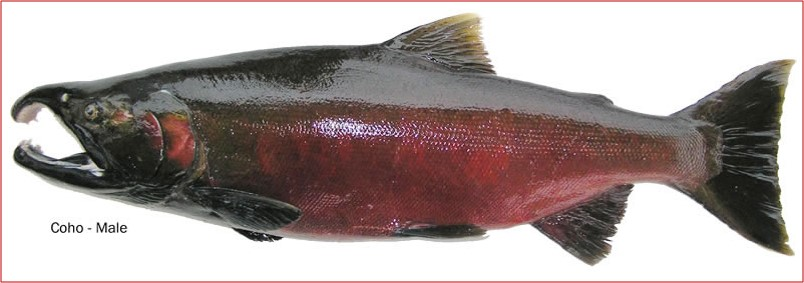
1 Introduction
In response to a decline in natural Coho Salmon (Onchorynchus kisutch) abundance, the Pacific Salmon Commission established a Southern Coho abundance-based management regime (CoABM) in 1999 (PSC_1999?). This Southern Coho Management Plan (SCMP, also referred to as ABM, or ‘abundance based management’) aimed to conserve Coho Salmon Management Units (MUs of naturally-spawning Coho Salmon in southern British Columbia and Washington/Oregon) based on abundance status and escapement goals. The SCMP set out to constrain exploitation rates (ERs; defined as total fishing mortality divided by total fishing mortality plus escapement) below maximum levels (caps) on selected management units in order to achieve long-term Maximum Sustainable Harvests (MSH). These constraints are implemented by specifying ER caps for the individual MUs dependent on annual abundance status. During their respective preseason planning processes, the Parties use management reference points to classify the status of each MU as low, moderate, or abundant. The parties then exchange these status determinations as a key factor in development of pre-season plans.
When a new Coho Management Plan was reached in 2008 (implemented 2009 through 2018; (PSC_2009?)) and the latest agreement finalized (applies to the period from 2019 through 2028; (PSC_2022?)), modifications were made to the list of specified MUs and to the manner in which exploitation rate caps are established. This periodic report presents information for the MUs identified in the most current Pacific Salmon Treaty’s (PST) Southern Coho Management Plan (Chapter 5 of Annex IV in the current PST). In the 2008 SCMP abundance-based management regimes were established to constrain exploitation rates (ERs) on the 13 Management Units (MUs) of naturally-spawning Coho Salmon originating in rivers along the Washington/British Columbia (B.C.) border listed below. Within the most recent Management Plan (PSC_2022?), the Georgia Strait Vancouver Island and the Georgia Strait Mainland Management Units are now combined into the Strait of Georgia Management Unit.
The objective of the SCMP, as described in the Treaty, is to manage the fisheries impact on Southern coho stocks by limiting the total fishery exploitation and allow the different MUs to produce long-term Maximum Sustainable Harvest (MSH), while maintaining the genetic and ecological diversity of the individual populations. In addition, the plan is designed to improve the prospect of sustaining healthy fisheries for both parties over the long-term. The plan is intended to be cost-effective and flexible to available technical capacity and information, while providing a predictable framework for planning fisheries impacts and allowing for objective monitoring, evaluation and modification.
Under the Agreement, the Parties are required to establish escapement goals or ERs that achieve MSH, determine MSH ERs for each MU, and establish ERs for each MU and status category (low, moderate, and abundant). Until such time as the Parties provide MU-specific ER targets, the SCMP identified default ER ceilings for the following MU status categories:
| Status | Total Exploitation Rate |
|---|---|
| Low | Up to 20% |
| Moderate | 21% - 40% |
| Abundant | 41% - 65% |
Annual ER caps are established for each of the MUs based on the level of abundance and health of the natural stocks. These caps are then apportioned between the Parties. Constraints for Canadian fisheries on U.S. MUs are determined by formulas that specify sharing of allowable ERs as well as a composite rule, which together adjust caps according to the number of U.S. MUs that fall within a given category. Constraints for U.S. fisheries on Canadian MUs depend on the status of the Interior Fraser MU until the biological status of the other Canadian MUs has been determined. Canada is currently working to develop the information (smolt to adult survival rates, escapements) needed to apply the status determination method used for the Interior Fraser coho MU to the Lower Fraser and Strait of Georgia MUs. Details as to how exploitation rate constraints are established based on the status of MUs under the SCMP are contained in Annex IV Chapter 5 Section 9.b-c (Canadian exploitation rate caps on inside and outside U.S. MUs) and Section 9.d (U.S. exploitation rate caps on Canadian MUs).
1.1 Management Unit Overview
The Canadian MUs are comprised of geographical aggregates of naturally-spawning Coho populations.
The U.S. Inside MUs consist of naturally-spawning populations originating in the Skagit, Stillaguamish, Snohomish, Hood Canal and the Strait of Juan de Fuca. Coho populations in the U.S. Inside MUs belong to the larger Puget Sound/Strait of Georgia Coho Salmon evolutionarily significant unit (ESU; (Weitkamp et al. 1995)). Only the eastern portion of the Strait of Juan de Fuca MU is in this ESU. An ESU is a Pacific salmon population or group of populations that is substantially reproductively isolated from other conspecific populations and represents an important component of the evolutionary legacy of the species. The ESU policy (56 FR 58612) for Pacific salmon defines the criteria for identifying a Pacific salmon population as a distinct population segment, which can be listed under the U.S. Endangered Species Act of 1973.
The U.S. Outside MUs consist of naturally-spawning populations from the Quillayute, Hoh, Queets, and Grays Harbor Basins. All U.S. Outside MUs, except the Grays Harbor MU, are part of the Olympic Peninsula ESU. Populations from the western portion of the Strait of Juan de Fuca MU are also in this ESU. The Grays Harbor MU is part of the Southwest Washington ESU.
1.2 Fishery Overview
Under the CoABM regime, each Party is required to regulate its fisheries so as not to exceed exploitation rate (ER) constraints on MUs. Fisheries and changes in management objectives during the reporting period are summarized within this chapter. Fishery Management Areas for British Columbia (Figure 1.1), Washington (Figure 1.2), and Oregon (Figure 1.3) are shown below.
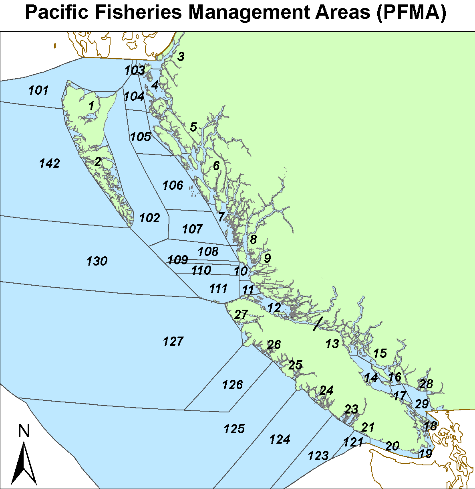
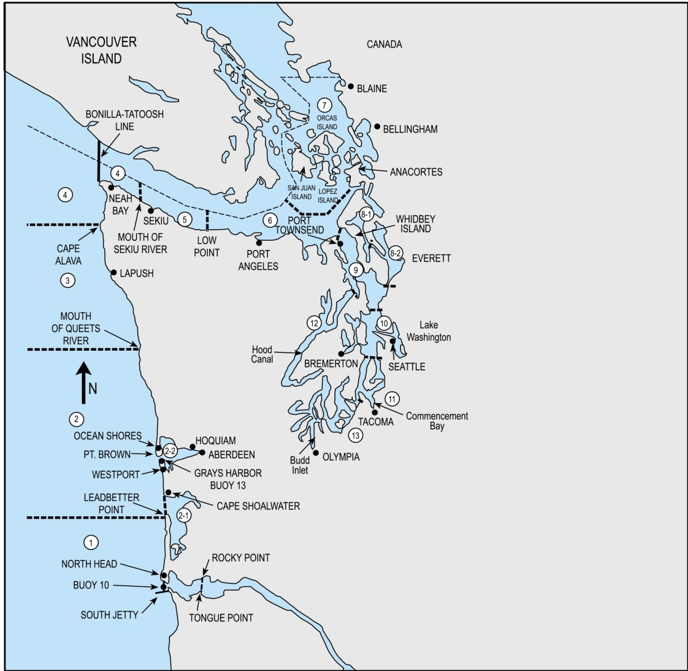
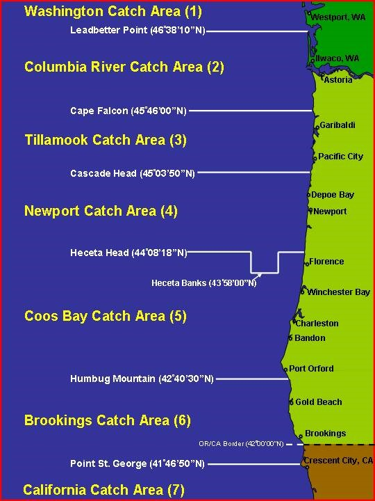
1.2.1 Canadian Fisheries
Southern B.C. Coho Salmon are caught in First Nations, recreational, and commercial troll and net fisheries. Since Coho Salmon rear in areas near the coast they are readily caught in directed fisheries and as bycatch in fisheries targeting other species. As a result, Coho are harvested in mixed-stock fisheries, creating many challenges for the assessment and management of the species.
Coho catches on the south coast of B.C. have declined since the mid-1980s, initially due to declining abundance and more recently because of severe conservation measures in response to the declining abundance. Total fishery ERs in Canada were reduced from a range of 75 to 80% in the mid-1980s to 60% in 1995, 37% in 1997, 5% in 1998, and are currently estimated by Backwards Coho FRAM at less than 10%.
Historically 89% of the commercial Coho catch on the south coast of B.C. was taken by the troll sector with the remainder harvested by commercial net fisheries. The west coast of Vancouver Island (WCVI) troll fishery was the single largest commercial harvester, taking an average of 1.5 million Coho in the 10-year period before 1997, when major fishing restrictions were imposed. This fishery intercepted stocks from the U.S., Strait of Georgia, and WCVI. Since 2001, average catch retained in the WCVI troll fishery has been 725 Coho, due primarily to the timing and non-retention restrictions in place for this fishery. Historically, catch in the Strait of Georgia troll fishery, comprised predominantly of Strait of Georgia stocks, was much smaller than the WCVI troll fishery (1986-1995 averaged 150,000 Coho, annually). The Strait of Georgia troll fishery has not been permitted to retain Coho Salmon since 1995.
Net fisheries in Johnstone Strait, Strait of Juan de Fuca and the Strait of Georgia harvest Coho incidentally during directed fisheries on Sockeye (O. nerka), Pink (O. gorbuscha), and Chum (O. keta) Salmon. Net fisheries have been curtailed in recent years due to low returns of the target species and concerns for Chinook (O. tshawytscha) and Coho Salmon bycatch.
While the First Nations’ harvest of Coho is small compared with other salmon species, several First Nations harvest Coho for food, social, and ceremonial (FSC) purposes. Coho are caught in hook and line, net, and spear fisheries in or near their local streams. They are also caught incidentally in other First Nations’ salmon fisheries directed on other species, such as Sockeye and Chum Salmon.
Recreational fishing for Coho in B.C. tidal waters continues to be important to residents and visitors. Until the recent decline in Coho abundance and subsequent severe fishing restrictions, 70% of tidal recreational fishing took place within the Strait of Georgia. Since 1995, most Coho recreational fishery effort and catch has shifted from the Strait of Georgia to the WCVI, in part due to low abundance of Coho inside Vancouver Island. Overall, the proportion of Coho harvested by the recreational fishery has increased as commercial harvest has been significantly reduced as a result of the timing and non-retention harvest restrictions, as well as domestic allocation considerations in Canada that were implemented in response to the low abundance of Coho.
Due to conservation concerns, most notably for the Interior Fraser MU, Canadian Coho Salmon fisheries have seen unprecedented restrictions since 1997. In 1998 and 1999, no directed fisheries on naturally-spawning stocks of Coho were permitted; mandatory non-retention and non-possession of incidentally caught Coho was implemented in all areas, with the exception of some terminal hatchery locations. In the Pacific Region, (i.e., all marine waters of B.C.), barbless hooks became required for all salmon-directed commercial and recreational hook and line gear in 1998, a regulation that remains in effect. Pacific Region waters were classified as red or yellow zones. In red zones, areas where Thompson River Coho were known to be prevalent, fishing was restricted to very limited experimental selective fisheries, as well as some limited First Nations’ fisheries to meet food, social, and ceremonial requirements. Red zones included inshore waters of Victoria to Barkley Sound and offshore waters of Barkley Sound to Quatsino Sound, from June to September. Special management zones (SMZs), areas of mandatory Coho non-retention with special restrictions, were identified with the intent to avoid Coho encounters. Fisheries were only permitted in locations and times when Thompson River Coho could be avoided or released unharmed. These areas were subject to in-season adjustments, including time and area closures for all sectors. Fisheries conducted in these SMZs were monitored to ensure Coho encounter rates did not become too high, and tissue samples were taken for stock identification. In yellow zones, where endangered stocks were not prevalent, a selective fishing strategy was implemented for all commercial and recreational fisheries. These fisheries were required to release any live Coho that were caught during operations. Mandatory logbooks and an onboard observer program were initiated in commercial fisheries. Limited Coho retention was allowed only for First Nations and recreational fisheries.
Since 2000, fisheries impacting naturally-spawning Coho from southern B.C., Washington State, and Oregon have been managed under the Pacific Salmon Treaty ABM regime. The ABM plan constrains total fishery exploitation on key stock MUs in B.C. For each MU, annual limits of fishing mortality are established based on the categorical level of abundance and the health of the naturally-spawning stocks. In Canada, low status of Interior Fraser Coho has constrained southern B.C. fisheries for the last decade. The Southern U.S. has been limited to 10% ER on Coho originating from the Interior Fraser MU. Southern B.C. fisheries, in waters south of Cape Caution where Interior Fraser Coho are prevalent, have been managed to a maximum 3% total fishing mortality rate on the Interior Fraser Coho MU. Non-retention of naturally-spawning Coho is generally in effect except for First Nations FSC opportunities in specific terminal systems where abundance permits and where retention of by-catch during fisheries for other species is permitted. Release of unmarked Coho Salmon during periods when Interior Fraser Coho may be caught is required in all Canadian commercial and recreational fisheries.
1.2.2 U.S. Fisheries
Current U.S. fisheries are constrained by domestic and PST conservation objectives. For the Puget Sound MUs, the 2008 PST Southern Coho Agreement of CoABM uses the thresholds and stepped harvest rate goals from the Comprehensive Coho Agreement (Workgroup 1998), developed by Washington State and the Puget Sound tribes, and adopted by the Pacific Fishery Management Council as Fishery Management Plan conservation objectives in November 2009. Actual ER constraints for Canadian fisheries on U.S. Coho MUs are determined by formulas that specify sharing of allowable total ERs and a “composite rule”. The composite rule adjusts constraints for Canadian fishery ERs based on the number of U.S. MUs that fall in a given category. For example, if only one Washington coastal Coho MU is in low status, Canadian fisheries are constrained to a total ER on that unit of 12%; if two or more Washington coastal MUs are in low status, the constraint becomes 10%. The most restrictive ER limit for Canadian fishery impacts on U.S. Coho MUs is 10%.
Fisheries between Cape Falcon, Oregon and the U.S./Canada Border are constrained by four factors: (1) management objectives and treaty Indian obligations for individual stock U.S. MUs; (2) treaty Indian/non-Indian and ocean/in-river sharing agreements; (3) stocks listed under the ESA; and (4) requirements of the PST. The starting point for implementing these constraints is the forecasted January age-3 abundance and the modeled ocean distribution of each Coho stock.
Most Coho-directed recreational fisheries have been mark-selective since 1999. Non-Indian commercial troll fisheries have been mostly restricted to mark-selective Coho retention since 2000. Treaty Indian fisheries are not restricted to mark-selective retention of Coho Salmon.
1.3 Bilateral Assessment Tool (FRAM) Overview
Coho fisheries are evaluated with the Coho Fisheries Regulation Assessment Model (Coho FRAM), a bilaterally developed tool that is employed for both pre-season fishery planning and post-season estimation of escapements and exploitation rates (see: pre- and post-season applications).
Coho FRAM is an annual mixed-stock accounting model that evaluates a set of stock units within a set of fisheries over time periods within a single fishing year (the calendar year for Coho). It can be used to estimate catch and escapement based on forecast abundance and planned fisheries (‘forward’), or it can be used to reconstruct ocean abundance from observed escapements and fisheries (‘backward’).
The Coho FRAM base period parameterization, determinining stock-fishery-timestep impacts, was constructed from stock-specific fishery recoveries of coded-wire-tag (CWT) within the time steps January to June, July, August, September, and October to December during coast wide fisheries from 1986 to 1992. The procedure used to generate base period data is depicted below (Figure 1.4). For each base period year, post-season reconstruction of cohort abundances for each Coho MU is based on two different models: the Mixed-Stock Model (MSM) that estimates the Production Expansion Factors for each Production Region and RRTERM program that estimates stock-specific impacts for terminal marine and freshwater fisheries. The MSM uses CWT recoveries for each model stock expanded by the Production Expansion Factors to best describe the total catch in each marine mixed-stock fishery. The MSM/RRTERM cohort analysis has been used for post-season reconstructions for catch years 1986-2007. Beginning with catch year 1993, too few coded-wire tags were recovered in mixed-stock fisheries to perform robust cohort analyses using the mixed-stock model.
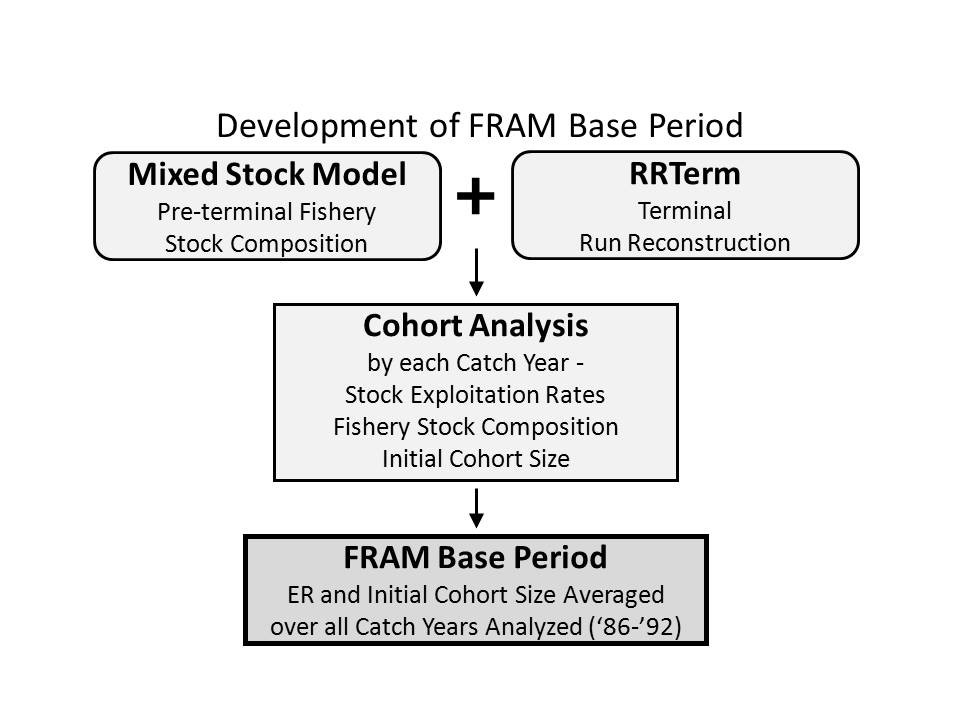
1.3.1 Key Uncertainties with FRAM analysis
Estimates of cohort abundances and ERs are reported as point estimates without explicit measures of uncertainty associated with them. Managers should consider the following data limitations and model assumptions when interpreting FRAM results:
- Cohort abundances and ERs are sensitive to the quality of escapement estimates, with estimation practices varying substantially among stocks. For example, Puget Sound net pens programs often lack escapement estimates. For these programs, pre-season abundances were used or were scaled to a nearby hatchery program using a pre-post ratio.
- Marine survival indices are used to estimate Canadian MU abundances, except for Interior Fraser, in both pre- and post-season FRAM runs because abundance forecasts and escapement estimates are highly uncertain or unavailable for the remaining two Canadian MUs.
- Average ocean distribution during the FRAM base period (derived using catch year 1986 to 1992 CWT data) may not reflect the true annual ocean distribution of Coho stocks in 2021; this leads to increased uncertainty in fishery-specific stock impacts.
- Complex regulations, such as fine-scale spatial/temporal and mixed retention limits for natural and hatchery Coho within a fishery, are difficult to represent and assess within FRAM and as a result, FRAM may not accurately represent stock-specific impacts within fisheries with these regulations.
- Spatial and temporal gaps in catch monitoring of some Canadian fisheries result in underestimation of catch.
- Uncertainty in mortality estimates arises from several sources, including incomplete creel census and inaccuracy of fisher reported data, as well as assumed non-retention mortality rates, which are used in the FRAM model.
- Natural mortality built into FRAM is constant and does not reflect inter-annual variability in survival during adult ocean residence (January Age-3 through FRAM’s final time step).
1.4 Environmental Trends Contextualizing Management
The productivity of Pacific salmon populations is influenced by numerous factors, including human activities (e.g., fishing mortality, habitat restoration and degradation, hatchery production) and environmental conditions in both fresh and marine habitats. Because of this, changes in the productivity for most populations partially reflects variation in environmental conditions. Due to large-scale environmental variation captured by metrics such as the El Niño–Southern Oscillation (ENSO) and Pacific Decadal Oscillation (PDO), population productivity undergoes periods of high and low productivity. Relatively productive conditions resulted in high freshwater and marine survival rates and subsequent high adult returns for many salmon stocks throughout the Pacific Northwest at various times, especially in the late 2000s and early 2010s. However, changes in ocean and freshwater conditions beginning in early 2014 due to exceptionally warm ocean waters and associated terrestrial impacts, plus an extremely strong El Niño event, led to subsequent declines in abundance in many populations. Here, we briefly summarize marine and terrestrial conditions over the past 15–20 years to provide environmental context when examining trends in southern Coho Salmon under the PST.
1.4.1 Terrestrial Conditions
Annual average temperatures and precipitation by water year (Oct–Sep) provide a broad-brush view of terrestrial conditions across the Pacific Northwest. A strong and persistent warming trend and large year-to-year variations in precipitation are among the most notable features in recent decades (Figure 1.5). Within snow-dominated watersheds, warmer winters and springs experienced in recent years reduce snow accumulation and hasten snowmelt. Reduced snowpack causes an earlier and smaller freshet in spring and can result in lower minimum flows and higher stream temperatures in summer.
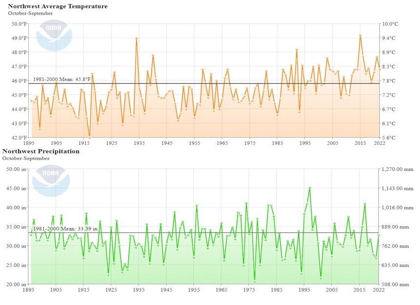
For the Pacific Northwest, water year 2015 stands out as the warmest year on record (Figure 1.5). The combination of below-average precipitation and record-high surface air temperature in 2015 brought record-low springtime snowpack to much of the west. Diminished snowpack and high surface temperatures combined with low springtime precipitation yielded especially low runoff to western watersheds in spring and early summer 2015. Unusually low flows and warm stream temperatures in spring/summer 2015 caused widespread problems for salmon throughout the western United States, including large mortality events for returning Sockeye Salmon to the Fraser and Columbia Rivers.
In June 2021, record-breaking terrestrial temperatures were recorded across western North America due to a ‘heat dome’ (White et al. 2023). It resulted in some of the highest temperatures ever recorded across large parts of British Columbia, Oregon, and Washington (11–19°C, 20–35°F above normal temperatures), including the highest temperature ever recorded in Canada (49.5°C, 121.3°F). This 1,000-year event was due to an exceptionally strong ridge centered over the area, whose strength was greatly increased by climate change. The heat wave sparked numerous extensive wildfires, extensive damage to forest vegetation and crops, and was responsible for the deaths of nearly 1,400 people across the region.
Coho Salmon inhabiting streams, rivers, and marine environments were likely affected by the heat dome, although many of these impacts are not well documented. Streams temperatures across the region increased dramatically in response to the heat dome, which also decreases oxygen saturation, potentially causing to physiological stress to stream-dwelling fish. In intertidal environments in the Salish Sea, an estimated 1 billion animals (primarily shellfish) died as a result of the heat wave coinciding with extreme low tides, which then impacted water quality (Raymond et al. 2022). The true impacts of the 2021 heat dome on Coho Salmon populations managed under PST will likely never be known, but may include generally decreased productivity and survival for the 2020 year class (which returns as adults in 2023), because it was residing in freshwater during the extraordinary event.
1.4.2 Marine Conditions
Surface temperatures in the northeastern Pacific Ocean vary on decadal time scales, with periods of above and below average temperatures, as indicated by the Pacific Decadal Oscillation (PDO; [Mantua et al. (1997)). Recently, surface temperatures were notably cooler than average from 1999–2002, 2008–13 and again starting in 2020 (Figure 1.6). They were warmer than normal from 2003–05, and at record highs for much of the period from fall 2013–20 due to a series of marine heat waves. For the California Current region, surface temperatures reached record high levels from 2014–16, with 2015 being the single warmest year in the historical record (Jacox et al. 2018). In most years, positive PDO values correspond to El Niño events (e.g., the 2015/2016 El Niño), while negative PDO values correspond to La Niña events (e.g., 2021, 2022, and 2023 La Niñas).
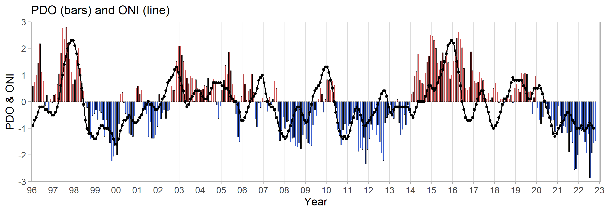
Since the original “blob” in 2014–16 (Bond et al. 2015), a series of marine heat waves have spread across large parts of the North Pacific Ocean in 2019, 2020, 2022, and 2023. These heat waves not only cause elevated water temperatures, but are also associated with extremely low nutrient levels. These heat waves vary greatly in their location across the North Pacific Ocean and although largely offshore, they occasionally spread to coastal waters such as 2015.
1.4.2.1 Biological impacts of marine conditions
The biological impacts of these temperature swings and marine heat waves are documented in a number of annual reports and descriptive papers (e.g., Morgan et al. 2019) for areas of the northeastern Pacific Ocean that Coho Salmon occupy during their marine residence period. In all cases, the reports show a dramatic biological response at all trophic levels—from primary producers to marine mammals and seabirds—to the marine heatwaves that have spread across the northeastern Pacific Ocean since 2014 and continued into 2023. These ecosystem changes have had large effects (both positive and negative) on Pacific salmon returns around the Pacific Rim, not just southern Coho Salmon.
Overall, the marine heat wave in 2014–2016 had the most drastic impact on marine ecosystems in 2015, with lingering effects into 2016 and 2017. Conditions had somewhat returned to “normal” in 2018 and again in 2021, but marine heat waves in coastal waters in 2019 and 2022 set off a series of marine ecosystem changes across the North Pacific. Here we provide a brief summary of some of the largest biological impacts recent ocean conditions that were observed.
Primary Producers. One of the most dramatic impacts to coastal waters was the largest bloom of the diatom Pseudo-nitzschia ever recorded in 2015 (Bates et al. 2018). It stretched from Southern California to the Aleutian Islands in Alaska. Pseudo-nitzschia produces domoic acid, a neurotoxin that causes amnesic shellfish poisoning, which is potentially fatal in mammals (including humans) and seabirds, but apparently does not affect fish. The 2015 bloom caused high domoic acid levels, resulting in fishery closures for razor clams and Dungeness crab and the death of hundreds of seabirds and marine mammals. Continuing (but much smaller) Pseudo-nitzschia blooms have continued across to flare up along the coasts from California to British Columbia ever since.
Lower Trophic Levels. Marine heatwaves also dramatically altered the lower trophic levels, resulting in decreases in high quality prey such as lipid-rich copepods and krill, and increases in gelatinous organisms (jellyfish, pelagic tunicates), which have low nutritional value. This shift to poor prey quality was expected to cause poor survival for juvenile fish and seabirds which rely on these prey types. The year 2017 also saw an explosion of Pyrosoma atlanticum, from California to SE Alaska. These normally tropical species are rare north of Southern California but spread north starting in 2013, peaking in 2017, and largely absent north of California by 2019. Pyrosomes are a low-quality, high-fiber prey, but were observed in the stomachs of dozens of species, including juvenile and adult Pacific salmon. Lower trophic levels rebounded in 2021, but less so in 2022 due to inconsistent upwelling.
Nekton. Larger fish and invertebrates, which serve as forage fish, showed both increases and decreases in abundance and ranges. For example, California market squid has been expanding as far north as SE Alaska, and caught in commercial quantities in Washington and Oregon waters since 2016. Other species that proliferated in the warm water of the California Current include Pacific Pompano, Northern Anchovy, and both Jack and Pacific Mackerel. Species with marked declines include Pacific Hake, juvenile sardine and anchovy, and Pacific Herring. Juvenile rockfish were extremely abundant in the northern California Current and as far north as British Columbia in 2016–18. Exotic American shad, has also exhibited remarkable increases in abundance in the Columbia River, with counts over Bonneville Dam reaching 7.4 million fish in 2019 and exceeding 5 million fish since 2018.
Farther north, Northern Anchovy have been extremely abundant in the Salish Sea since 2016. Juvenile salmon of all species except chum have also been below average off the west coast of Vancouver Island, while Chum Salmon have been abundant. The catch of juvenile salmon in 2017 in both Icy Straits, Alaska (mainly Pink, Chum, and Sockeye Salmon), and off the Washington/Oregon coasts (spring Chinook and Coho Salmon), were both extremely low, consistent with low adult returns (e.g., Columbia River spring Chinook Salmon in 2019). Forage fish in Alaskan waters show mixed trends with decreases in Capelin and Sand Lance and increases in Pacific Herring.
Apex fishes. Reports from northern waters suggest increases in several apex fishes, including Spiny Dogfish, Arrowtooth Flounder and sablefish. By contrast, Pacific Cod crashed in 2017, resulting in closures for Alaskan cod fisheries in 2018. Elevated sea surface temperatures in 2015 (and to less extent in 2019) also resulted dramatic range extensions for warm water fishes including billfish, tunas, and sharks.
Seabirds. Particularly notable impacts to seabirds were large die-offs of Cassin’s Auklet in winter 2014–15, and Common Murres between summer 2015 and spring 2016 from California to Alaska and again along the Washington–Oregon coasts in fall 2019.
Marine mammals. Recent extreme ocean conditions have resulted in several large mortality events for marine mammals. In the California Current, record numbers of California sea lion pups were found starving in early 2015, while there was elevated sea lion mortality during 2013–16. Because of poor conditions along the entire coast, the number of California and Stellar sea lions in the Columbia River estuary peaked in 2015, where they consumed large quantities of adult (and presumably juvenile) salmon. There have also been two large whale unusual mortality events recently: in the western Gulf of Alaska and British Columbia in 2015–16 (52 whales of many species), and a gray whale mortality event in 2019 (over 250 dead whales reported from Mexico to Alaska).
Pacific salmon. The abundance of Pacific salmon populations around the Pacific Rim have also shown dramatic changes since 2015. While some populations (especially in northern areas) have returned at record high abundances, others have dropped to new lows. These trends demonstrates that unusually high or low returns are not restricted to any one region, species, or production type (hatchery or natural), but were ocean-wide. For example, recent low steelhead (O. mykiss) returns to the Columbia River basin parallel extremely low steelhead returns to the Fraser River basin, and while Russian Pink and Bristol Bay Sockeye Salmon reached record highs, Fraser Sockeye and Japanese Chum Salmon fell to record lows.
Coho Salmon populations from the Oregon coast to the Salish Sea had unexpectedly low returns in 2015, including some of the lowest returns on record. Although returns were predicted to be above average, the small body size and low abundance of these adults suggested poor feeding conditions during the last summer in marine waters. Steelhead returns were extremely low in 2017 and 2018 in the same areas, to the point that Thompson and Chilcotin River (Fraser River, British Columbia) steelhead were petitioned for emergency protection under the Canadian Species At Risk Act (Neilson and Taylor 2018). One species in the region that increased in abundance was Chum Salmon starting in 2016, perhaps in part due to their reliance on gelatinous prey, which were abundant.
Both Fraser and Columbia River Sockeye Salmon, which re-enter freshwater in mid-summer, incurred huge in-river mortalities in 2015 due to elevated river temperatures. The following year (2016), Fraser River Sockeye Salmon had the smallest return on record (total run of <1 million fish), but was even lower in 2019 (500,000 fish), as progeny of the 2015 year class returned as adults. The 2020 Fraser River Sockeye Salmon return was still lower (<300,000 fish). By contrast, Columbia River Sockeye Salmon returns were relatively high in 2016 (326,000), and reached an all-time high of 341,000 counted over Bonneville Dam in 2020.
In Alaska, there was a strong east–west gradient in run size, with western Alaska generally having exceptionally high salmon returns, while central and southeastern Alaska saw declines. Perhaps most impressive has been the annual catch of Bristol Bay Sockeye Salmon, which broke a new abundance record in 2022 with 79 million adults (the 20 year [2002–2021] average run was 43.6 million). Similarly, 2017 was the highest statewide catch of Chum Salmon on record, due in part to record Prince William Sound catches. In contrast, the abundance of Yukon River Chinook and Chum Salmon have greatly declined for reasons that aren’t entirely clear, leading to conservation concerns for both the salmon and the many subsistence fishers who rely on these runs for nutrition.
2 Determination of MU Status Benchmarks and ER Caps
SECTIONS NEED TEXT REVIEW AND TABLE UPDATING
2.1 Canadian Management Units
Procedures for determining the pre-season status of Canadian MUs are being developed concurrently with determination of Conservation Unit (CU) status benchmarks required with implementation of the Canada Department of Fisheries and Oceans’ (CDFO) Wild Salmon Policy. Methods have been approved through the CDFO’s internal peer review process, Center for Scientific Advice - Pacific (CSAP) [(Holt_et_al_2009?))**. Completion of benchmark determinations for Southern B.C. Coho MUs is scheduled for CSAP review in 2014.
Since 2002, in the absence of benchmarks, the CDFO Stock Assessment staff has provided a categorical outlook for the next year’s salmon status. The outlook is intended to provide an objective and consistent context within which to initiate fisheries planning. The category reflects the current interpretation of existing quantitative and qualitative information, including pre-season forecasts if available, and the opinion of CDFO Area stock assessment staff. Where management targets for stocks have not been formally described, interim targets were either based on historical return levels or, if necessary, opinion of local staff.
Canadian Coho Salmon abundance has declined, particularly in southern B.C. Interior Fraser River Coho have been classified as endangered by the Committee on the Status of Endangered Wildlife in Canada (COSEWIC) since 2002, but not under the Species at Risk Act. However, the Canadian Minister of Fisheries has established a domestic ER cap of 3% for Canadian fishery impacts on Interior Fraser Coho. The Interior Fraser MU is comprised of five Conservation Units (CU; North Thompson, South Thompson, Lower Thompson, Fraser Canyon, and Upper Fraser). The Interior Fraser River Coho recovery planning process has determined the critical benchmark needed to maintain population viability. Even with the reduction in fisheries exploitation, all Southern B.C. MUs have followed a similar dramatic declining trend in both marine survival and total abundance from the high levels observed in the 1980s and early 1990s (Figure 4.1). Spawning escapements have responded to the decreased exploitation and are within the range observed during the 1970s and 1980s. However, the sustained low marine survival has resulted in a decreased total abundance.
move to section 3? Because of the absence of programs to estimate total abundance and escapement for many Canadian MUs, the bilaterally-developed tool, Backwards Coho FRAM, is relied upon to generate estimates of ocean age-3 cohort abundance and ERs using post-season data. Cohort abundances (catch and escapement) of Canadian MUs, estimated by Backwards Coho FRAM, are depicted in Figure @ref(fig:BCAbundance). Reduced abundances apparent since 1996 were a major consideration that led to the development of ABM regimes for management of southern Coho Salmon.
2.2 U.S. Inside Management Units
The status for U.S. Inside MUs is assigned based on ocean abundance (forecasted or re-constructed). Pre-season estimates of ocean abundance are typically forecasted from measured or modeled smolt production for each MU and multiplied by a marine survival rate predicted for each MU. Marine survival is predicted with a variety of methods including average return rates, correlations between jack and adult return rates, and correlations between environmental variables and historical return rates. Post-season estimates of ocean abundance are estimated using escapement and catch data and the Backwards Coho FRAM. The status of each MU is defined by a series of ocean abundance breakpoints (see Table: @ref(tab:InsideMUABM)). Domestic management of Puget Sound naturally-spawning Coho stocks also uses abundance-based, tiered ER objectives defined in the Comprehensive Coho Plan (Workgroup 1998), that are similar to but not exactly consistent with the PSC guidelines. The identified break points between Low, Moderate, and Abundant status are based on population-specific productivity analyses conducted by the state and tribal co-managers in each river basin.
2.3 U.S. Outside Management Units
The status for U.S. Outside MUs is assigned based on the ER ceiling identified annually, ocean abundance, and existing MU escapement goals. Pre- and post-season ocean abundances are estimated with the same approach described for the U.S. Inside MUs. Escapement goals for the U.S. Outside MUs are defined by state and tribal co-managers in each river basin and include escapement ranges in all but one (Grays Harbor) MU. Escapement ranges were originally intended to reflect the range of uncertainty in the MSH escapement goals identified for each of these populations. Unlike the U.S. Inside MUs, escapement goals for the U.S. Outside MUs do not vary with run size. The escapement goals used for PST status determinations are the floor of the designated escapement ranges (see Table: @ref(tab:OutsideMUABM)). The stock status is “Low” if the ocean abundance is low enough that the ER ceiling falls at or below 20% in order to achieve the bottom end of the escapement range. The stock status is “Moderate” if ocean abundance results in an ER ceiling between 21% and 40%. The stock status is “Abundant” if ocean abundance results in an ER ceiling above 41%.
2.4 U.S. Management Units Federal Status
U.S. MUs belong to three different Coho Salmon evolutionarily significant units (ESU), the Puget Sound/Strait of Georgia, the Olympic Peninsula, and the Southwest Washington ESUs. The Puget Sound/Strait of Georgia Coho ESU is currently a species of concern under the U.S. Endangered Species Act [ESA; (NMFS_2009?)]. The Olympic Peninsula ESU was evaluated for listing under the ESA and it was determined to be not warranted (Weitkamp et al. 1995). The Southwest Washington ESU is currently categorized as “undetermined”. The State of Washington considers Coho Salmon statewide to be a State Candidate to be reviewed for possible state listing as Endangered, Threatened, or Sensitive (WDFW_2008?).
At the federal level, species of concern do not have formal protection under the ESA. The primary purpose of identifying species of concern is to prevent the need to list them as threatened or endangered under the ESA. This purpose can be achieved by the following actions: (1) identifying species potentially at risk; (2) increasing public awareness about those species; (3) identifying data deficiencies and uncertainties in species’ status and threats; (4) stimulating cooperative research efforts to obtain the information necessary to evaluate species’ status and threats; and, (5) fostering voluntary efforts to conserve the species before listing becomes warranted.
In 2018, the National Marine Fisheries Service (NMFS) notified the Pacific Fishery Management Council (Council) that the Strait of Juan de Fuca, Queets, and Snohomish natural coho salmon stocks managed under the Council’s Pacific Coast Salmon Fishery Management Plan (FMP) met the overfished criteria of the FMP and the Magnuson-Stevens Fishery Conservation and Management Act (MSA). NMFS determined that these stocks were overfished under the MSA, due to spawning escapement falling below the required level for the 3-year period 2014-2016. The MSA requires overfished stocks to be rebuilt, generally within 10 years. The overfished determinations were announced in the Federal Register on August 6, 2018 (83 FR 38292). In response to the overfished determination, the Council developed rebuilding plans for these stocks and provided them to NMFS in 2019. In 2021, NMFS issued a final rule under the authority of the MSA to approve and implement rebuilding plans recommended by the Council for the three stocks (86 FR 9301; https://www.federalregister.gov/documents/2021/02/12/2021-02834/fisheries-off-west-coast-states-west-coast-salmon-fisheries-rebuilding-coho-salmon-stocks). This final rule adopts the existing harvest control rules, which use an annual abundance-based stepped harvest rate control rule with stock-specific abundance levels governing the total exploitation rates applied to forecast stock abundance levels. For Snohomish natural coho, this final rule amends the existing harvest control rule by adding a 10-percent buffer to the existing escapement goal and adjusting the abundance steps during the rebuilding period. For all three coho salmon stocks, the Council’s Salmon Technical Team’s analysis determined that freshwater and marine habitat conditions were the primary cause of these stocks meeting the FMP’s criteria for being overfished rather than fishing.
2.5 U.S. Management Units Abundances
Estimated ocean age-3 cohort abundances for Inside and Outside U.S. MUs are depicted in Figure 4.2 and Figure 4.3, respectively. Abundances for inside MUs tend to be synchronous, with above- or below-average abundances occurring in the same years (e.g., high in 2001, low in 2006). Outside MUs are less synchronous and years with high abundances for Grays Harbor don’t necessarily correspond to high abundances for other MUs.
need to fix figures 4.2 and 4.3 and add them here #–> should we add a stacked bar graph of all of the U.S. MUs combined over years? (or by inside and out?) instead of individual lines of MUs on a graph?
Estimated Ocean Age-3 Abundances of U.S. Inside Coho Salmon Management Units; Catch Years 1986-2021.
Estimated Ocean Age-3 Abundances of U.S. Outside Coho Salmon Management Units; Catch Years 1986-2021.
3 Annual Implementation of the Southern Coho Management Plan
The Coho Fisheries Regulation Assessment Model (Coho FRAM, Model Evaluation Workgroup (MEW). 2008) has been the tool used to plan U.S. preseason fisheries and also to evaluate, postseason, exploitation rates (ERs) by the fisheries of both Parties on the naturally spawning Coho management units (MUs) specified by the CoABM. Canada has not been using Coho FRAM preseason, instead using a combination of a ‘domestic model’ for planning marine fisheries and a ‘decay model’ for planning Fraser River fisheries.
Each country manages the Coho harvest within its ER cap through its own domestic fisheries management processes and annual fisheries plans. For Canada, the annual domestic planning process is documented in the salmon Integrated Fisheries Management Plan (IFMP). For the U.S., the North of Cape Falcon ocean salmon fishing plans are reported in Preseason Report III (PFMC documents). For U.S. Inside MUs, the 2019 PST uses the exploitation rate thresholds and stepped harvest rate goals from the Comprehensive Coho Agreement and adopted as FMP conservation objectives in 2009. For U.S. Outside MUs, exploitation rate constraints represent the Maximum Fishing Mortality Threshold (MFMT). For U.S. domestic purposes, the Pacific Fishery Management Council MU status categories are “critical”, “low”, and “normal”, which correspond to the PSC categories of “low”, “moderate” and “abundant”, respectively (PMFC_2013?).
3.1 Annual Determinations of Allowable Exploitation Rates for Management Units
may wish to move these to another section?
3.1.1 Strait of Juan de Fuca Management Unit
The Juan de Fuca Coho Salmon stock was declared overfished in 2018. The target year for rebuilding Juan de Fuca coho is 2023. The harvest control rule during the rebuilding period for Strait of Juan de Fuca Coho is the abundance-based stepped harvest rate of:
Juan de Fuca coho stepped harvest rates
| Abundance category | Age-3 ocean abundance | Total allowable exploitation rate |
|---|---|---|
| Normal | Greater than 27,445 | 60% |
| Low | Between 11,679 and 27,445 | 40% |
| Critical | 11,679 or less | 20% |
3.1.2 Queets Management Unit
The Queets Coho Salmon stock was declared overfished in 2018. The target year for rebuilding Queets coho is 2019. The harvest control rule during the rebuilding period for Queets Coho is the abundance-based stepped harvest rate of:
Queets stepped harvest rates
| Abundance category | Age-3 ocean abundance | Total allowable exploitation rate |
|---|---|---|
| Normal | Greater than 9,667 | 65% |
| Low | Between 7,250 and 9,667 | 40% |
| Critical | 7,250 or less | 20% |
3.1.3 Snohomish Management Unit
The Snohomish coho salmon stock was declared overfished in 2018. The target year for rebuilding Snohomish coho is 2020. The harvest control rule during the rebuilding period for Snohomish coho is the abundance-based stepped harvest rate of:
Snohomish stepped harvest rates
| Abundance category | Age-3 ocean abundance | Total allowable exploitation rate |
|---|---|---|
| Normal | Greater than 137,0001 | 60% |
| Low | Between 51,667 and 137,000 | 40% |
| Critical | 51,667 or less | 20% |
2 In years when Snohomish Coho abundance is forecast to exceed 137,000, the total allowable exploitation rate will be limited to target achieving a spawning escapement of 55,000 Snohomish Coho.
3.2 United States fishery Planning Process
The U.S. annual salmon fishery planning process starts in January with a Stock and Fishery Evaluation (SAFE) report on fisheries and escapements from previous years and concludes in early April when preseason fishing plans for US fisheries are developed. Outlined below are the Coho FRAM inputs used within the US domestic process to plan annual Coho fisheries, and postseason data needed to evaluate the preseason plan.
*Preseason FRAM inputs: +Stocks’ abundance forecasts +Fishery inputs by Coho FRAM time period (e.g., season structure, gear and retention restrictions, quota levels, fishery harvest rate scalars)
*Inseason: +FRAM fishery adjustments
*Postseason FRAM inputs: +Stocks’ observed escapement +Fisheries’ observed catch and non-retention mortality by FRAM time period
Because the domestic planning processes of the Parties are not synchronous, a single pre-season command file containing expectations for both Canada and the U.S. is not available prior to the conclusion of the PFMC process (U.S. pre-season fishery planning) in April. The pre-season command file used by the PFMC incorporates cohort abundance for both Canadian and U.S. MUs, but planned fishery regulations for U.S. fisheries only. Unless other information is available, Canadian regulations are assumed to be similar to those implemented in the previous year. Subsequent to this process, additional command files are generated to represent the actual Canadian fishing plans. Command files used in pre-season planning from 2004 to 2020 are detailed in Table 2.1. These files contain specific information used at the time to model fisheries along with the pre-season forecasts of stock abundances.
3.2.1 U.S. Preseason Abundance Forecasts
The U.S. forecast development commences in January of every year. U.S. Forecasts for both Coho and Chinook stocks are finalized in late February and published in the annual Pacific Fisheries Management Council’s (PFMC) Pre I Report. In mid-March, the Parties share general expectations for stock abundance and fisheries though a manager-to-manager information exchange (see Development of Canadian Preseason Coho FRAM Inputs). These forecasts are then used throughout the PFMC/NOF (North of Falcon) salmon fishery planning meetings which conclude at the April PFMC meeting.
The forecast methodologies for many U.S. stocks’ are generally based upon the products of two estimates specific to each production source: 1) number of smolts leaving freshwaters; and, 2) expected regional marine survival rates. Numbers of naturally produced smolts are estimated in a variety of ways but are based upon a large and widely distributed system of smolt traps. The number of smolts released from hatcheries are known. Marine survival is defined as, and calculated from, catch plus escapement from CWT data. Sibling relationships, between jack returns and subsequent return to the mature cohort, have also been used as an index to predict marine survival. Environmental conditions have been increasingly relied upon as predictors of anticipated survival from smolt to adults entering the fisheries.
3.2.2 Development of U.S. Preseason FRAM Inputs
U.S. fishery planning relies upon both the Coho and Chinook FRAM models. The process starts at the early March PFMC meeting, proceeds through March at a variety of regional meetings (including the NOF meetings), and concludes in early/mid April at the next PFMC meeting.
U.S. Coho FRAM Stock Abundance Inputs: Abundance forecasts are incorporated into two models, Coho FRAM and Chinook FRAM, both of which rely on similar algorithms and common computer code. Mass marked and unmarked naturally and hatchery produced stocks (components of MUs) are represented in U.S. Coho FRAM (e.g., Queets naturally produced unmarked, Queets naturally produced marked, Queets hatchery unmarked, Queets hatchery marked). For the MUs specified by the CoABM, appropriate unmarked naturally produced stocks are combined. Numeric forecasts for southern US Coho stocks are provided from regional managers which utilize a variety of methodologies. The annual forecasts of Coho FRAM stocks are entered as Abundance Scalars, applied within the model to Base Period Stock Abundance.
Prior to the March PFMC meeting, an initial Coho FRAM model run with last year’s planned fisheries and the current year’s US forecasts serves to inform, in a general sense, how the fishery plan from the previous year needs to change to accommodate the current year’s stocks’ abundances. The results from this model run are included in the PFMC’s Pre I Report.
Starting with this initial model run, the US domestic salmon planning process is affected by the timing and quality of forecasts for Canadian Coho stocks. Coho FRAM performs best when data for all stocks are incorporated. The US domestic process is, in theory, at the half way point before Canadian forecasts are provided and combined with US forecasts for FRAM modeling at the NOF 2 meeting in late March. Thus, at the March PFMC meeting and the NOF 1 meeting there is hesitation to fully use the FRAM results for planning domestic fisheries as those results will likely change when Canadian forecasts are incorporated.
U.S. FRAM Fishery Inputs: Expected fishery catch and/or mortality is the other major category of preseason inputs to Coho FRAM. At the March PFMC meeting three options (e.g., catch levels, retention restrictions, harvest rate scalars, seasons) are developed (low, moderate, high) for the US ocean fisheries (California, Oregon, and Washington coasts). The FRAM results for both Coho and Chinook from these March options are published in the annual PFMC Pre II Report.
During the course of March and early April US meetings, the North of Falcon (NOF) domestic planning refines fishery inputs to insure compliance with various agreements. These include the PFMC Salmon Framework Plan, domestic and international treaties; and the US Endangered Species Act which collectively establish constraints on fishery impacts upon US Coho and Chinook stocks.
For the PFMC ocean fisheries the model inputs are Catch Quotas and regulations such as mark-selective fisheries, with the expectation that subsequent inseason monitoring will close fisheries without exceeding quotas. The model inputs for most sport and commercial US Puget Sound marine and terminal area fisheries are expected catch or expected harvest rates, generally based upon recent year averages and anticipated fisheries for Fraser sockeye, pink and chum salmon, and regulations such as mark selective fishing. In some cases the Catch Quota management approach is also used within Puget Sound with planned fishery closure as inseason observations indicate FRAM total fishery mortality estimates are being approached. The mortality associated with Coho non-retention is another class of fishery inputs.
Through the month of March the NOF meetings shape inside fisheries (Washington Coastal terminal, Puget Sound marine and freshwater) for both Coho and Chinook for compliance with domestic and international requirements. The NOF planning informs the April PFMC meeting toward the development of the final set of ocean, inside, and terminal fisheries. The FRAM modeling results of the final adopted regulations for ocean fisheries are published in the PFMC Pre III Report, and submitted to the US Department of Commerce for confirmation of compliance with the US Endangered Species Act and other domestic obligations. Inside fisheries are formalized by regional agreements by state and tribal managers. There is virtually no ability to modify the regulations and agreements after they are adopted.
Throughout this process, the January post season, Pre I-III reports are provided to Canada as information. The Final April PFMC Coho FRAM run is also provided to Canada. It is the April PFMC model run that until recently has provided the information for post season assessment of exploitation rates (see Canadian section of “Timing of Domestic Planning” for potential exception).
3.2.3 U.S. Inseason Management
Inseason changes to planned U.S fisheries are limited, but have been implemented under some specific conditions. When ocean area/fishery specific quotas are not being caught in an ocean area then part of the quota may be transferred to another ocean area/fishery, based upon FRAM estimates of neutral impacts to the limiting stock(s); this may include adjustments to bag limits, seasons, and/or MSF regulations. The preseason planned prosecution of some fisheries is dependent upon the results of test fisheries, i.e. the Fraser Panel Sockeye directed commercial fisheries. Emergency closures due to attaining or exceeding planned catch quotas or in response to indications of reduced abundance.
3.3 Canadian Fishery Planning Process
Annual Canadian fisheries are planned using a combination of two domestic models (marine fisheries and freshwater decay models) and tools focused upon Interior Fraser River (IFR) Coho. The planning process starts early in the year. A draft Integrated Salmon Fishery Management Plan (IFMP) is available for stakeholder comment in April, but the IFMP is not finalized until formally approved by the Fisheries Minister in June.
In the domestic process, initial planning scenarios are developed based on discussions with Fishery Managers, preliminary salmon outlook for stock status (prepared in November of previous year), effort expectation (targeted or incidental impact on IFR coho) given ER constraints, and domestic allocation policy. Once stock abundance forecasts are available in March and timing and diversion forecasts for Fraser sockeye are available in June, the final Salmon IFMP is submitted to the Minister for approval. The Canadian domestic model does not use coho abundance forecasts directly, relying instead upon past relationships between fisheries’ effort and IFR ER, to estimate preseason projected ER for IFR. Depending on what species or fishery specific objectives are in place for the upcoming season, the domestic model is populated with anticipated effort based on trends in recent years and scaled to base period (1986–1997) effort. Multiple scenarios are run based on adjusting preliminary fishing plans (species, effort, month, gear, regulations) and results are reviewed by Fisheries Managers and evaluated for multiple objectives, in particular, meeting the preseason ER objectives for IFR coho.
3.3.1 Development of Canadian Preseason Coho FRAM Inputs
The U.S. preseason Coho FRAM modeling requires Canadian inputs to complete the model for the U.S. domestic planning and this also enables the pre to post season Coho FRAM evaluation of both Parties’ fisheries. The Canadian data used to inform Coho FRAM for annual U.S. preseason planning and joint postseason evaluation are outlined below:
*Preseason: +Stocks’ abundance forecasts, or +Regional expected marine survival rates, based on CWT indicator stocks +FRAM fishery scalars by coho FRAM time period from postseason analysis of a fishery plan similar to anticipated fishing patterns
*Inseason: +FRAM fishery adjustments or significant deviations in expected abundance / catch
*Postseason: +Stocks’ observed escapement, or +Regional observed marine survival rates +Fisheries’ observed catch by FRAM time period
Canadian FRAM Stock Abundance Inputs: U.S. FRAM preseason modeling requires forecasts of Canadian stocks. Forecast development commences every year in early March, and is provided to US FRAM modelers in mid to late March for use at the second NOF meeting, prior to the April PFMC meeting.
To obtain these values Canadian forecast methodology uses the following information:
- Annual hatchery production
- Base Period FRAM natural production
- Base Period hatchery production
- Predicted marine survival
- Base Period marine survival
- Base Period FRAM stock abundance values
Estimates of freshwater production (smolt out-migrants) for hatchery produced Coho, by FRAM production region, are scaled to Base Period production. Next the annual expected regional marine survival (m.s.) is scaled to Base Period marine survival. Both ratios are applied to a stock’s Base Period abundance to produce the annual adult abundance forecasts. To illustrate (by stock):
*(annual H smolts)/(base H smolts) X (expected m.s.)/(base m.s.) X Base Adults = Adult H Abundance
Hatchery smolt data are obtained from the Canadian Salmon Enhancement Program. Where naturally produced smolt out-migrant estimates exists (2 of 14 Canadian production regions), the values are used. For the production regions where naturally produced smolt data are not available (the remaining 12 of 14 Canadian production regions), the default production starting values has been the same as the annual hatchery output for the same FRAM production region, assuming similar smolt abundance trends between naturally produced and hatchery smolts. As hatchery production has been reduced over time it has become necessary to find other means to obtain the surrogates for naturally produced smolt production.
Marine survival expectations have been based upon hatchery and wild indicator CWT returns. As the number of coho indicators has been reduced over time it has become necessary to use adjacent MU indicators to estimate marine survival for some MUs and use hatchery indicators to estimate survival of naturally spawning Coho.
For IFR, where naturally produced smolt output is not available, the forecasted adult returns are used as inputs to Coho FRAM. This forecast is based on a naive model, usually an average of the previous three years estimated ocean adult abundance. However, the forecast may be “as observed last year” when it appears a longer term average is not appropriate; this was the case for the 2016 fishing year forecast. Several U.S. 2016 forecasts also used the “as observed last year” approach due to the extremely poor returns in 2015 and the observations that those same poor environmental conditions existed for the smolts entering the ocean in 2015 (i.e. the 2016 adults).
Canadian FRAM Fishery Inputs:
Preseason FRAM’s anticipated fishery related mortality for Canadian Coho retention fisheries is modeled using Fishery Scalars (these Scalars essentially function as a harvest rate within the FRAM) taken from postseason Coho FRAM model runs with similar fishery plans and effort. For example, impacts of the Fraser River sockeye directed fisheries may be estimated from 4 years previous. The Fraser River pink directed fishery impacts are estimated from the fisheries 2 year previous. The impacts from the Chinook troll fishery are based on a year with a similar Chinook harvest guidelines. The mortality associated with Coho non-retention regulation is another class of fishery inputs, also taken from previous postseason FRAM model runs under the assumption of similar fishery plans and effort, and similar Coho abundance levels.
3.3.2 Canadian Inseason Management
Canadian fishery planning process generally concludes in June, with the fisheries directed upon Fraser River salmon (Pinks, Sockeye, and Chum) driven by test fisheries. This later planning process can produce anticipated fishery impacts that diverge from the postseason Canadian fishery scalars used for the US domestic modeling the previous April. In such cases the April PFMC FRAM model run can be “updated” to evaluate both Parties compliance with the Coho Agreement.
3.4 Joint Canadian and U.S. Postseason Evaluations
“Backwards Coho FRAM” is used to generate estimates of exploitation rates that are used to evaluate management performance relative to constraints set forth in the CoABM. Data required to populate FRAM are not available until one year after the fisheries were prosecuted, thus the 2021 postseason ER estimates were produced in February of 2023. The Backwards Coho FRAM is also employed to produce estimates of historic exploitation rates reported in this Periodic Report.
Backwards Coho FRAM requires estimated mortalities by fishery strata (uses the Base Period stock-fishery-time steps; terminal IFR fisheries have been incorporated recently) and available estimates of escapements to reconstruct annual cohort abundances and generate post-season estimates of ERs. The escapement estimates for Coho FRAM stocks and catch information (catch, type of fishery –Mark Selective, Non-retention, Quota) for FRAM fisheries are compiled from various government agencies (USA: Federal, State and Tribal; Canada: Federal, and First Nations) and reviewed by the CoTC.
The Backwards Coho FRAM derives total cohort abundance of Coho FRAM stocks through an iterative process of estimating the set of stock abundance scalars that best explain observed escapements and reported catches. FRAM calculation of stock abundance scalars is the preferred method and occurs when escapement data are available (almost all US stocks). When escapement estimates are not available (almost all Canadian stocks), the stock abundance scalars are calculated externally and entered into FRAM; an estimate of “observed” marine survival has been used as a surrogate to recalculate Canadian stock abundances per the preseason method previously described. Consequently, FRAM’s iterative process of estimating a full set of stock abundance scalars is not possible and this has implications for backwards FRAM estimates of abundance for all stocks. Ideally total cohort abundance for each MU is derived by summing model estimated stock specific: pre-terminal catch, terminal catch, and escapement.
The Backwards Coho FRAM provides two estimates of cohort abundance, termed “Ocean age-3” and “January age-3”. Ocean age-3 abundance includes escapement and fishery impacts. January age-3 includes escapement, fishery impacts, and natural mortality. Ocean age-3 is the basis for Pacific Salmon Treaty stock status and is therefore the measure provided in the tables and figures in the Management Unit Status section the Periodic Report, and in the annual postseason evaluations.
These estimates of cohort abundance, catches and escapements are used to generate estimates of ERs and determine MU status for post season reporting to the Southern Panel.
4 Post-2010 (2004?) Performance of Abundance Based Management Regime
4.1 Overview of Coded Wire Tag Use
do we wish to link sections of the other report, or just repeat it here?
The coded-wire tag (CWT) indicator stock program provides the primary data for predicting, monitoring, and modeling harvest impacts on individual Coho Salmon populations. The Joint Coho Technical Committee (CoTC) uses CWT recoveries from the indicator stocks to reconstruct cohorts coastwide. While a few indicator tag groups are naturally-spawning fish, the vast majority consist of hatchery fish intended to represent each MU. Hatchery indicator stocks are selected on the basis of brood stock, rearing, and release strategies and are assumed to be surrogates for the naturally-spawning fish. The indicator program assumes that tagged and untagged fish experience similar trends in marine survival and similar exploitation patterns. Coastwide, approximately eight million juvenile Coho Salmon are coded-wire tagged annually (Nandor_et_al_2010?).
Some major changes in the CWT indicator stock program have occurred since the Pacific Salmon Treaty was signed in 1985. One of the most notable changes is the mass marking of hatchery fish in the Pacific Northwest. For many years, an adipose fin clip was used as an external mark to identify fish (natural spawning or hatchery) with a CWT. However, since brood year 1995 in the U.S. and 1996 in Canada, the adipose fin clip has been used as a mass mark to identify hatchery-origin fish and no longer uniquely indicates a coded-wire-tagged fish. With the advent of mark-selective fishing, marked (adipose fin-clipped) and unmarked fish do not have the same patterns of exploitation, violating the fundamental assumption of the indicator tag program. These changes in marking and fishing have resulted in the development and use of double index tag (DIT) releases in the indicator tag programs. The DIT group consists of two groups of hatchery fish, each 100% tagged with its own unique CWT. The two groups are presumed to be identical, except that one tagged group is unmarked and the other group is marked with an adipose fin clip. In a MSF, catches of marked fish will be retained whereas catches of unmarked fish will be released. The difference in return rates to the hatchery reflects the difference in ocean ERs in selective fisheries. A DIT group is recommended when the stock of interest is expected to be exploited by a mark-selective fishery (MSF). Unpaired (non-DIT) tag groups are either marked or unmarked and are considered single index tag (SIT) groups in this document.
To obtain unbiased estimates of fishery-specific impacts on individual stocks, a known proportion of both the catch and escapement must be sampled for CWTs throughout the migratory range of the stock and the proportion sampled must be adequate to produce a statistically reliable expansion of sampled Coho. Mass marking creates the following two additional complexities for sampling of CWTs: (1) DIT stocks are unmarked but contain CWTs; and (2) marked fish do not necessarily contain CWTs. Therefore, all fish, not just marked fish (with an adipose fin-clip), must be sampled for CWTs. Detection of CWTs in unmarked fish requires electronic sampling using wands or tubes. Detection of CWTs in marked fish requires either field-based electronic sampling or collection of snouts for processing in the laboratory. For complete accounting, fish must be sampled throughout their range, in catch and escapement. Electronic sampling of both unmarked and marked Coho places an additional burden of time and expense on agencies
At present, the utility of the DIT program and the CWT program in general for Coho is reduced due to low tagging rates, insufficient MU representation, low recovery rates, and incomplete coastwide coverage of electronic sampling programs (PSCCWTW_2008?). In addition, the CWT program: (1) currently provides overall differences in ocean ERs – can’t discriminate individual fisheries; (2) has sample sizes that are generally small, so confidence limits are wide and estimates of differential impacts are imprecise; (3) is expensive and agencies are reluctant to fund tagging programs; and (4) unmarked DIT fish are unavailable for harvest in MSFs.
Most MUs in the U.S. have CWT indicator stocks and DIT programs. However, some of the programs have been eliminated in recent years due to budgetary constraints. Canada has discontinued all of their DIT programs. The current Coho CWT indicator stocks for each MU and the brood years with DIT groups are listed in ToDo. The tag codes used to represent each MU in the MSM for catch years 1986-1997 are listed in Appendix B. All DIT groups released to date for each MU are listed in Appendix C.
Coded-wire-tag indicator stocks and brood years with single index tag (SIT) and double index tag (DIT) groups for each Coho Management Unit (MU), beginning with brood year 1983. Indicator stocks are hatchery-produced Coho unless specified as “Wild” (Release data downloaded from RMIS 1-10-203). SIT groups may be either marked or unmarked releases of CWT Coho. DIT groups are marked (adipose-fin clipped) and unmarked pairs of CWT Coho.
| Management Unit | Indicator Stock | Brood Yr SIT |
Brood Yr DIT |
|---|---|---|---|
| Southern B.C. MUs | |||
| Lower Fraser | Inch Creek Hatchery | 83-95,14-19 | 96-13 |
| Salmon River (Wild)3 | 84-99,01,03,05-07 | NA | |
| Chilliwack R. H. (Chilliwack R.) | 83-95 | 96-02 | |
| Chehalis R. H. (Chehalis R.) | 83-97 | – | |
| Interior Fraser | Spius Cr. H. (Coldwater R.)4 | 84-94,96-98,03-19 | 99-02 |
| Spius Cr. H. (Salmon R./TOMF)5 | 95-96,99,01-02,04-05, 07,14,17-19 |
– | |
| Spius Cr. H. (Spius Cr.)6 | 94-96,99-00 | 97-98 | |
| Spius Cr. H. (Eagle R.) | 10-13,15-19 | – | |
| Chilliwack R. H. (Coldwater R.)7 | 16-19 | – | |
| Eagle R. H. (Salmon R.)8 | 83-93 | – | |
| Eagle R. H. (Eagle R.)9 | 83-93 | – | |
| Eagle R. H. (Perry R.)10 | 84-86 | – | |
| Dunn Cr. H. (Dunn Cr.)11 | 86-87,89-90,92,95,98-07 | – | |
| Dunn Cr. H. (Dunn Lake)12 | 84-91,94,97 | – | |
| Dunn Cr. H. (Lemieux Cr.)13 | 83-86,88,92-93,97-99, 03,06-09 |
– | |
| Dunn Cr. H. (Louis Cr.)14 | 88-94,97-07 | – | |
| Dunn Cr. H. (Ianson Ch.)15 | 88-91,94-95,00-02,04-05 | – | |
| Eagle River (Wild)16 | 00-03 | NA | |
| Lemieux Creek (Wild) | 92-93 | NA | |
| Strait of Georgia Mainland | Capilano R. H. | 83-97,00 | – |
| Lang Creek H. (Lang Cr.)17 | 87-91,95-96,08-09 | – | |
| Strait of Georgia Vancouver Island | Quinsam R. H. | 83-85,18-19 | 96-17 |
| Big Qualicum R. H. | 83-85,87-95,03-15,17-19 | 96-02 | |
| Goldstream R. H. | 91-94,03-11 | 96-02 | |
| Puntledge R. H.18 | 83-97,99-02,09-10,19 | – | |
| Black Creek (Wild)19 | 83-17 | NA | |
| U.S. Inside MUs | |||
| Skagit | Marblemount H. (Skagit R.) | 83-93 | 94-20 |
| Baker River (Wild)20 | 83-97,00-22 | NA | |
| Stillaguamish21 | Wallace R. H. (Skykomish R.) | 83-95 | 96-20 |
| Stillaguamish R. (Wild) | 84-87 | NA | |
| Snohomish | Wallace R. H. (Skykomish R.) | 83-95 | 96-20 |
| Bernie Gobin H. (Tulalip Cr.)22 | 83-20 | – | |
| Hood Canal | Quilcene NFH | 87-95 | 96-20 |
| Quilcene Bay Sea Pens | 88,90,93,95,02-11,13-14 | 96-01 | |
| Port Gamble Bay Pens | 83-95,04-20 | 96-03 | |
| George Adams H. (Skokomish R.) | 83-94,96 | 95,97-20 | |
| Big Beef Creek (Wild)23 | 83-20 | NA | |
| Strait of Juan de Fuca | Lower Elwha H.24 | 85-94,12,15,18 | 95-11,13-14,16-17,09-20 |
| Dungeness H. | 83,86,89,91-94,05-08,18-20 | – | |
| Hoko Falls H. | 18-20 | – | |
| Hoko and Salmon Creek (Wild) | 84-87,08 | NA | |
| U.S. Outside MUs | |||
| Quillayute | Sol Duc H. | 83-88,90-95 | 96-20 |
| Various Tributaries (Wild)25 | 83-86,88-92 | ||
| Hoh | Chalaat Creek H. | 84,86-89 | – |
| Canyon Springs Pond | 86-87 | – | |
| Sol Duc H. | 85,87 | – | |
| Hoh River (Wild)26 | 83-87,03,05-12 | NA | |
| Queets | Quinault Lake H. | 83-84,90-92 | – |
| Salmon R. Fish Culture | 83, 85-94 | 95-20 | |
| Queets/Clearwater wild27 | 83-11,13-20 | NA | |
| Grays Harbor | Bingham Creek H. | 83-94 | 95-20 |
| Aberdeen Net Pens | 88-90,92-94 | – | |
| Humptulips H. (Stevens Cr.) | 83-94,06,10-12,19-20 | 95-96 | |
| Bingham Creek (Wild)28 | 83-20 | NA | |
| Stevens & Scatter Creek (Wild) | 83-90,92-93 | NA | |
| Chehalis Upriver (Wild)29 | 83-97,00-20 | NA |

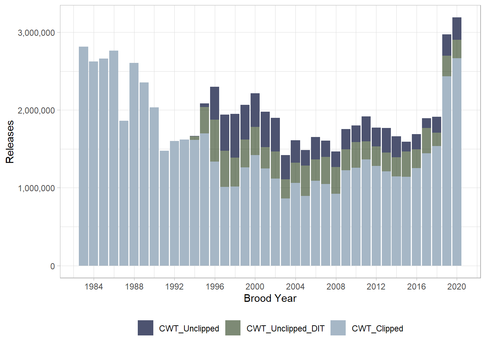
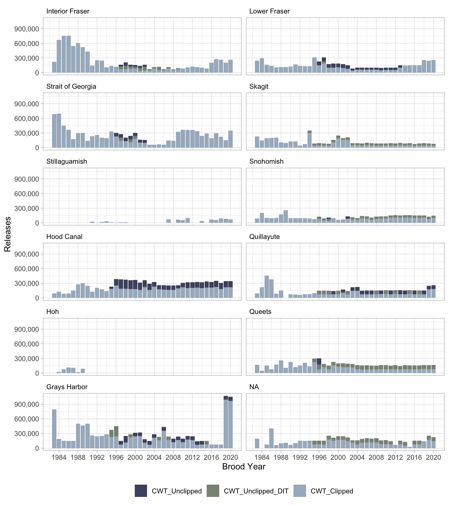
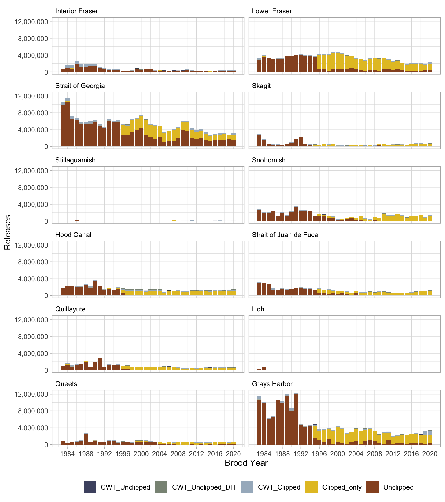
4.2 Multi-MU Assessment
4.2.1 Abundance Overview (placeholder table)
| PSC_StockName | 2004 | 2005 | 2006 | 2007 | 2008 | 2009 | 2010 | 2011 | 2012 | 2013 | 2014 | 2015 | 2016 | 2017 | 2018 | 2019 | 2020 | 2021 |
|---|---|---|---|---|---|---|---|---|---|---|---|---|---|---|---|---|---|---|
| Canada | ||||||||||||||||||
| Lower Fraser | 67,385 | 16,843 | 17,386 | 74,841 | 3,471 | 21,561 | 26,647 | 16,809 | 16,819 | 16,872 | 4,107 | 16,863 | 48,764 | 16,802 | 48,897 | 42,572 | 85,395 | 47,541 |
| Interior Fraser | 46,451 | 15,999 | 8,800 | 66,052 | 18,015 | 25,063 | 43,318 | 30,292 | 65,014 | 71,415 | 26,551 | 15,021 | 64,867 | 26,777 | 38,098 | 54,777 | 82,191 | 87,253 |
| Strait of Georgia | 306,419 | 48,138 | 51,218 | 220,554 | 15,361 | 65,107 | 80,449 | 26,576 | 28,866 | 57,344 | 42,333 | 12,750 | 12,356 | 12,636 | 45,757 | 32,727 | 109,574 | 140,237 |
| US Inside | ||||||||||||||||||
| Skagit | 169,157 [A] | 52,362 [M] | 11,518 [L] | 84,423 [A] | 35,458 [M] | 87,600 [A] | 64,581 [A] | 78,116 [A] | 139,009 [A] | 150,661 [A] | 51,696 [M] | 15,512 [L] | 44,736 [M] | 22,278 [L] | 36,911 [M] | 27,499 [M] | 41,468 [M] | 112,024 [A] |
| Stillaguamish | 66,035 [A] | 30,687 [A] | 10,804 [M] | 51,708 [A] | 16,874 [M] | 30,871 [A] | 16,753 [M] | 61,324 [A] | 60,518 [A] | 78,066 [A] | 49,138 [A] | 5,455 [L] | 15,619 [M] | 6,918 [L] | 30,885 [A] | 16,165 [M] | 24,654 [A] | 42,713 [A] |
| Snohomish | 289,505 [A] | 133,924 [A] | 94,754 [M] | 157,393 [A] | 49,412 [L] | 134,407 [A] | 54,375 [M] | 137,411 [A] | 175,650 [A] | 175,980 [A] | 66,635 [M] | 27,593 [L] | 54,137 [M] | 23,190 [L] | 77,581 [M] | 48,671 [L] | 47,717 [L] | 109,901 [M] |
| Hood Canal | 199,071 [A] | 54,731 [A] | 51,153 [A] | 88,814 [A] | 40,827 [M] | 58,159 [A] | 14,526 [L] | 56,824 [A] | 125,109 [A] | 37,882 [M] | 69,596 [A] | 63,699 [A] | 31,828 [M] | 34,963 [M] | 18,696 [L] | 14,666 [L] | 23,616 [M] | 45,733 [A] |
| US Strait JDF | 21,816 [M] | 10,933 [L] | 4,184 [L] | 8,613 [L] | 3,487 [L] | 16,743 [M] | 20,053 [M] | 11,715 [M] | 12,534 [M] | 9,800 [L] | 13,811 [M] | 4,711 [L] | 8,692 [L] | 5,856 [L] | 5,939 [L] | 5,258 [L] | 9,200 [L] | 22,450 [M] |
| US Outside | ||||||||||||||||||
| Quillayute | 14,090 [A] | 20,820 [A] | 9,455 [M] | 10,672 [A] | 10,018 [M] | 12,475 [A] | 17,083 [A] | 13,348 [A] | 12,815 [A] | 15,788 [A] | 17,258 [A] | 4,800 [L] | 11,696 [A] | 12,931 [A] | 8,666 [M] | 10,905 [A] | 9,107 [M] | 11,582 [A] |
| Hoh | 5,366 [A] | 8,217 [A] | 2,064 [L] | 4,904 [A] | 3,970 [A] | 12,023 [A] | 11,375 [A] | 12,978 [A] | 8,089 [A] | 9,152 [A] | 9,136 [A] | 2,928 [M] | 5,417 [A] | 6,044 [A] | 3,739 [A] | 5,157 [A] | 5,386 [A] | 7,799 [A] |
| Queets | 13,445 [A] | 12,149 [A] | 8,695 [M] | 6,828 [L] | 7,335 [M] | 18,733 [A] | 20,070 [A] | 15,170 [A] | 9,194 [M] | 9,932 [A] | 12,903 [A] | 2,748 [L] | 6,070 [L] | 6,797 [L] | 3,446 [L] | 3,944 [L] | 5,126 [L] | 5,269 [L] |
| Grays Harbor | 68,872 [A] | 73,009 [A] | 26,881 [L] | 34,718 [L] | 51,708 [M] | 113,275 [A] | 117,353 [A] | 86,208 [A] | 103,923 [A] | 80,323 [A] | 152,912 [A] | 31,714 [L] | 35,331 [L] | 37,344 [L] | 60,777 [A] | 50,994 [M] | 31,581 [L] | 77,369 [A] |
4.2.2 ER Overview (placeholder table & fig)
| PSC_StockName | 2011 | 2012 | 2013 | 2014 | 2015 | 2016 | 2017 | 2018 | 2019 | 2020 | 2021 |
|---|---|---|---|---|---|---|---|---|---|---|---|
| US Inside | |||||||||||
| Skagit | 43.8% | 33.3% | 43.1% | 52.0% | 62.7% | 19.9% | 9.4% | 48.4% | 48.2% | 42.6% | 32.6% |
| Stillaguamish | 18.5% | 25.4% | 22.6% | 27.1% | 46.6% | 16.5% | 11.8% | 22.5% | 20.3% | 12.6% | 10.6% |
| Snohomish | 18.9% | 25.6% | 28.5% | 30.6% | 53.6% | 18.5% | 21.5% | 25.1% | 17.2% | 10.6% | 11.3% |
| Hood Canal | 57.1% | 58.6% | 57.7% | 68.3% | 58.7% | 40.1% | 35.6% | 57.3% | 46.1% | 28.7% | 24.8% |
| US Strait JDF | 8.4% | 12.1% | 13.7% | 16.8% | 18.1% | 3.0% | 5.6% | 7.9% | 12.0% | 7.1% | 7.2% |
| US Outside | |||||||||||
| Quillayute | 39.6% | 54.4% | 55.3% | 57.1% | 47.1% | 18.4% | 42.3% | 29.7% | 37.2% | 17.2% | 3.8% |
| Hoh | 39.2% | 50.8% | 69.0% | 51.8% | 39.2% | 7.9% | 42.9% | 34.4% | 56.6% | 49.2% | 18.0% |
| Queets | 40.1% | 49.8% | 38.2% | 42.2% | 36.3% | 24.9% | 22.9% | 35.9% | 41.3% | 41.8% | 9.9% |
| Grays Harbor | 38.9% | 47.1% | 44.4% | 44.9% | 48.5% | 11.5% | 32.3% | 21.9% | 39.6% | 28.6% | 22.5% |
| Canada | |||||||||||
| Lower Fraser | 23.6% | 17.9% | 27.6% | 56.8% | 42.0% | 12.4% | 12.4% | 12.0% | 14.0% | 9.6% | 7.8% |
| Interior Fraser | 14.3% | 14.5% | 20.6% | 35.3% | 24.0% | 9.2% | 9.7% | 15.3% | 20.0% | 13.4% | 9.5% |
| Strait of Georgia | 16.5% | 15.9% | 25.8% | 32.1% | 30.1% | 9.9% | 9.7% | 14.3% | 16.2% | 7.4% | 6.5% |
Illustrating 25th, median and 75th quantile of post-2010 ERs by FRAM fishery.
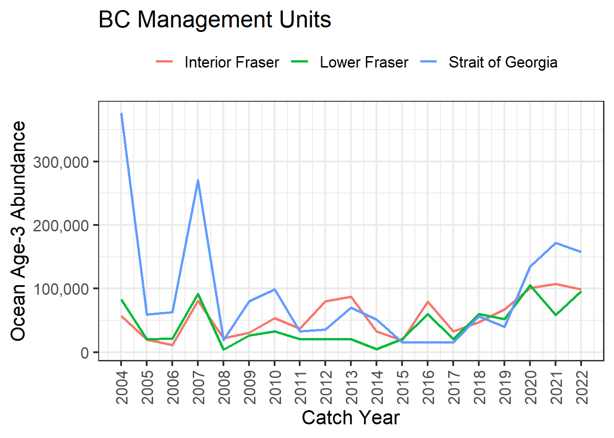
4.3 MU Specific Assessment/Performance
4.3.1 Lower Fraser
4.3.1.1 Biological & Geographic Description
4.3.1.2 Management Framework
Management Objectives
Stock Assessment
Indicator Stocks
Forecast Methods
Escapement Monitoring
Fishery Monitoring
Enhancement
4.3.1.3 Management Performance (MU-specific figures, tables, etc.)
Forecast Evaluation
Fishery Mortality and Escapement
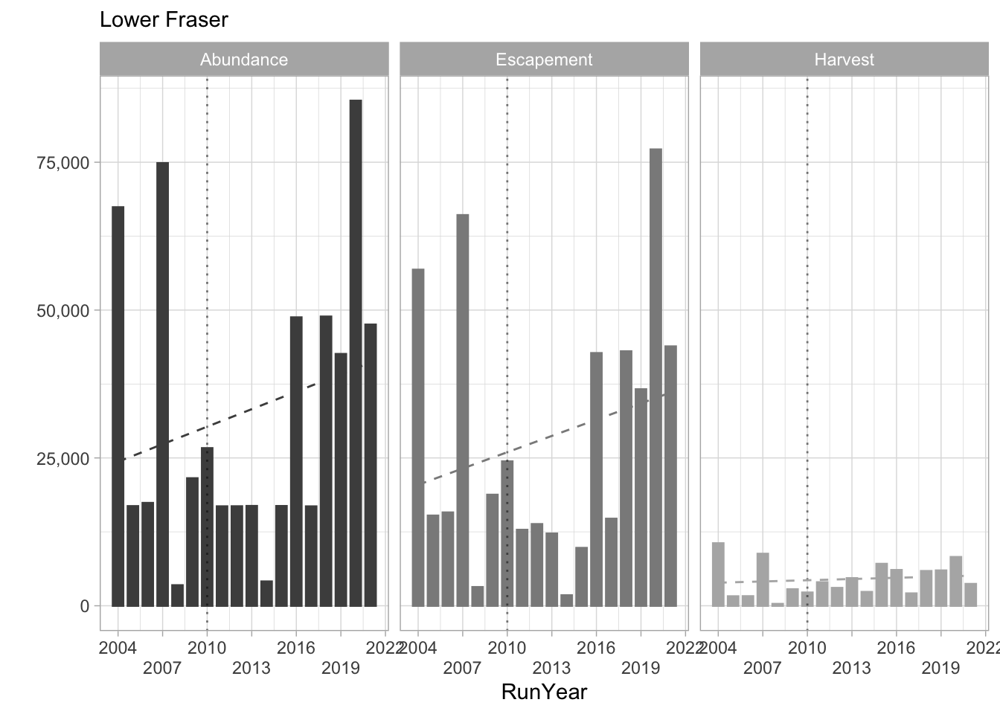
Historical Overview of Status of Management Unit
4.3.2 Interior Fraser
4.3.2.1 Biological & Geographic Description
4.3.2.2 Management Framework
Management Objectives
Stock Assessment
Indicator Stocks
Forecast Methods
Escapement Monitoring
Fishery Monitoring
Enhancement
4.3.2.3 Management Performance
Forecast Evaluation
Fishery Mortality and Escapement
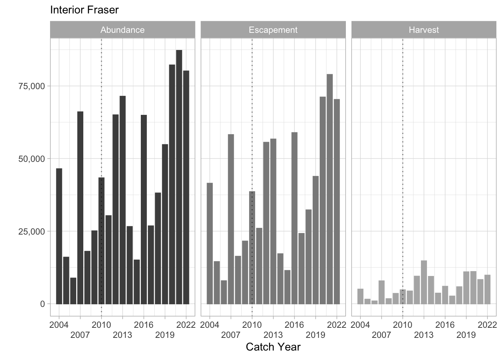
Historical Overview of Status of Management Unit
4.3.3 Strait of Georgia
4.3.3.1 Biological & Geographic Description
4.3.3.2 Management Framework
Management Objectives
Stock Assessment
Indicator Stocks
Forecast Methods
Escapement Monitoring
Fishery Monitoring
Enhancement
4.3.3.3 Management Performance
Forecast Evaluation
Fishery Mortality and Escapement
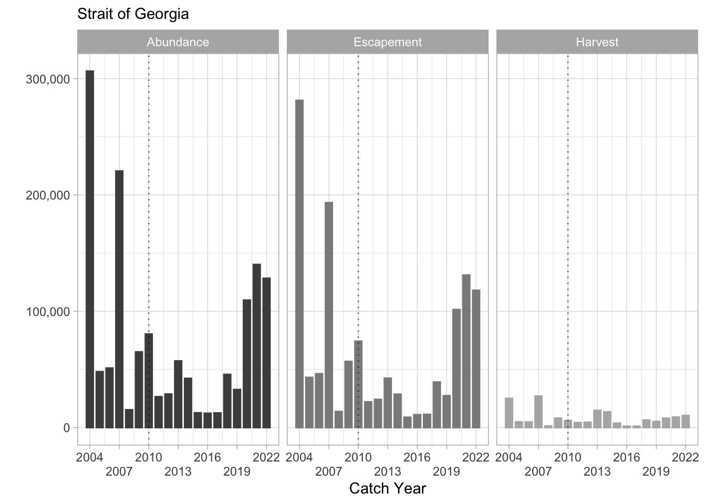
Historical Overview of Status of Management Unit
4.3.4 Skagit
4.3.4.1 Biological & Geographic Description
The Skagit MU is one of the U.S. Inside MUs (refer to figure of inside MUs). All wild Coho that originate from the Skagit basin constitute this single management unit. The Skagit River MU consists of Coho Salmon in the Skagit River Basin and its major tributaries, the Baker, Sauk-Suiattle, and Cascade Rivers (MU Figure - fix Oak Harbar spelling). The Skagit basin drains the northern Cascade Mountains, flowing westward to Puget Sound and entering Puget Sound southwest of the city of Mt Vernon after splitting into to two similar-sized channels several miles above tidewater (Haymes 2008). The basin area accessible to anadromous salmonids downstream of the Skagit River reservoir system is 1,918 mi2 [4,968 km2] (Volkhardt et al. 2007). There are currently two recognized Coho populations in the system, Baker and Skagit (WDFW_and_WWTIT_1994?). The Baker run historically entered the system somewhat earlier than the Skagit run, but the two populations are nonetheless managed as a single management unit because: 1) there is considerable overlap in run timing, which would make it difficult to manage for separate escapement goals for each run; and 2) hatchery practices have so crossbred Baker and Skagit Coho that it is questionable whether a genetically separate Baker run population exists anymore (WDFW_and_WWTIT_1994?).
Skagit Coho Salmon belong to the larger Puget Sound/Strait of Georgia Coho Salmon evolutionarily significant unit (ESU) (Weitkamp et al. 1995). This ESU is currently a species of concern under the U.S. Endangered Species Act (Ford 2011).
The Skagit River is located in Northern Puget Sound midway between Seattle, Washington and Vancouver, British Columbia. It drains Puget Sound’s largest basin, with an area of nearly 4,000 mi2 and an average discharge of over 16,000 cfs (one-third of the freshwater inflow to Puget Sound). It is the second largest river system in the state of Washington in terms of annual discharge, after the Columbia River. The Skagit River contains 162 miles of mainstem river, with its origin in the Coveole Mountains of British Columbia.
The mainstem Skagit and Sauk rivers have two periods of peak flow, first during winter rain and snowmelt events, and the second during peak snow runoff in spring and early summer. The smaller tributaries are largely rain-fed, and have peak flow events during the winter rain season. Average annual rainfall is 35 inches [89 cm] per year at Mt. Vernon in the lower valley, increasing to up to 180 inches [457 cm] per year in the upper basin.
Three large reservoirs in the upper Skagit River drainage (the first located at river mile (RM) 96.6 [KM 155.5] from the estuary) and two in the Baker River drainage provide flood control and hydroelectric generation. Upriver fish passage is only provided at the Baker Reservoir system, via a trap and haul system located at a diversion dam 0.3 miles [0.5 km] upstream of the Baker River confluence with the Skagit River at a diversion dam. Puget Sound Energy completed construction of this new, enhanced fish trap below Lower Baker Dam to capture migrating adult salmon for upstream transport around both Baker River dams. Construction on a juvenile salmon downstream fish trap, a floating surface collector, was completed in 2008 behind the upper Baker River Dam. A similar fish trap is under construction on Lake Shannon, below Lower Baker Dam.
In the 3,910 mi2 [10,127 km2] watershed, 19% is owned by private and Washington State entities, 24% is managed by the Mt Baker-Snoqualmie National Forest, 44% by the North Cascade National Park and Recreation Area, and 13% is located within British Columbia (Beechie et al. 1994). The Skagit Bay estuary is partially enclosed by Whidbey Island to the west and Camano Island to the south. Relatively minimal development is located directly adjacent to the estuary in most areas. The WDFW Skagit Wildlife Area fronts the southeastern edge of Skagit Bay at the river mouth, and the northeastern end of the bay is bounded by the Swinomish Indian Reservation.
Recreational, conservation, and commercial forest activities are prevalent in the mid- and upper basin reaches. The lower and mid-basin areas have significant habitat impacts from agricultural and residential/commercial development in the floodplain and surrounding uplands. Extensive flood control structures degrade the salmonid habitat in the floodplain and estuary, with over 60 miles [97 km] of historically available slough and tributary habitat lost from the construction of flood control structures alone. The rapidly growing city of Mount Vernon, located adjacent to the Skagit River at RM 11 [KM 18] from the estuary, is the largest urban center in the MU. Other moderate-sized communities located in the MU are Burlington and Sedro Woolley, also located in the Skagit River floodplain a few miles upstream of Mt Vernon. Human population densities decline upstream of Sedro Woolley, though smaller, residentially-oriented communities are scattered along the Skagit mainstem upstream to the town of Newhalem at RM 96 (KM 154]. The Sauk River valley has only one significant population center, Darrington, located at RM 22 [KM 35] from the Sauk/Skagit confluence, though residential development and some agricultural activity is scattered along the valley floor.
In the upper reaches of the Skagit watershed, the land is primarily forested and moderately steep gradient; the main land use in this area is forestry. Below the confluence with the Sauk, the valley broadens and flattens and is used extensively for agriculture.
A major limiting factor on Skagit Coho production is floodplain diking and hydromodification, which has reduced distributary slough area by about 64%, and off-channel slough area by about 45% (Beechie et al. 1994). This has reduced Coho smolt production by an estimated 300,000 smolts per year (PSSSRG_1992?). Improperly placed culverts have also restricted access to a significant amount of tributary spawning and rearing habitat. Poor water quality and abnormally high flows, which are caused by agricultural practices and clear-cutting, have reduced production in much of the lower basin ((beamer_et_al_2000?)).
Numerous salmon hatchery facilities exist within the Skagit Basin, including small and large operations (MU figure). Below is a list of the larger Coho programs that are operating in the Skagit Basin.
The WDFW operates the Marblemount Hatchery on the Cascade River at RM 0.5 at the confluence with Clark Creek (MU figure). The Cascade River is a tributary to the Skagit River at RM 78. Marblemount Hatchery was constructed in 1946 and currently rears Skagit spring, summer, and fall Chinook; Skagit Coho; Skagit Steelhead; and Ross Lake Rainbow Trout (WDFW_2003a?). The Coho program is operated as an isolated harvest program with an annual production goal of 250,000 smolts to be released on station, 45,000 fish to net pen projects (Oak Harbor and Roche Harbor), 100,000 fish to Skagit System Coop (Swinomish Tribe), and 13,000 eggs to educational and volunteer cooperatives. Its current purpose is to provide harvest opportunity for non-tribal sport and commercial fishers and tribal fishers (WDFW_2003a?). This program collects adult broodstock on-site, and has egg incubation and rearing facilities.
A fish culture facility has also been in operation on the Baker River since the early 1970s, producing Sockeye, Rainbow Trout, and Coho Salmon (WDFW_and_PSE_2003?). Puget Sound Energy completed construction in 2010 of a new hatchery on the Baker River near the upper Baker Dam. Coho Salmon fry from this program are transported to net pens on Lake Shannon and they are later released as smolts into the Baker River and both reservoirs. This Coho program is operated as an integrated harvest and research program with an annual goal of releasing 60,000 smolts. The purpose of this program is to supply experimental and research smolts for gulper efficiency testing, serve as an indicator stock for wild Skagit Coho, and supplement natural production in the basin.
Coho are also reared in net pens within the Oak Harbor Marina (WDFW_2003b?). This Coho program is a marine net pen program operated by WDFW and local sport angling groups and usually receives stock from the Marblemount Hatchery and is operated as an isolated program with an annual goal of releasing 30,000 smolts. The purpose of this program is to provide harvest opportunity for sport and commercial fishers.
4.3.4.2 Management Framework
Objectives
Under the Comprehensive Coho Management Plan, Skagit River wild Coho is the primary (or key) management unit and hatchery production management units are either secondary (Swinomish Channel, Oak Harbor Pens) or auxiliary (Marblemount Hatchery, Baker River Hatchery) management units (Workgroup 1998). Under this plan, primary management units are controlling units in the sense that predefined management actions will be undertaken under specified abundance conditions, auxiliary management units are those managed to meet or exceed a minimum escapement, and secondary units are passively managed in mixed stock fisheries. Therefore, Skagit River Coho are managed for natural (wild) production. While there is hatchery production within the system, fisheries are constrained to meet the natural escapement objectives. Thus, there are frequently significant surplus returns to the Marblemount Hatchery on the Cascade River. There have been fisheries in the Skagit terminal area targeted at hatchery Coho, but these have been sporadic, and have been confined to small areas (e.g., the creek immediately downstream of the hatchery, Swinomish Channel from 1986–1991, and Oak Harbor from 1994–1996).
Skagit Coho Salmon are also a primary management unit for Puget Sound under the Pacific Fishery Management Council (Council) (Council 2013a). Other primary MUs in this region are Strait of Juan de Fuca, Hood Canal, Snohomish, Stillaguamish, and South Puget Sound (hatchery) Coho (Council 2013a). The Council’s conservation objectives for these MUs are based on the Puget Sound Salmon Management Plan, which includes management objectives and long-term goals for these stocks as developed by representatives from federal, state, and tribal agencies.
In Puget Sound, conservation objectives for specific stocks are based on either maximum sustainable production for stocks managed primarily for natural production or on hatchery escapement needs for stocks managed for artificial production. The original conservation objectives were developed by a State/Tribal Management Plan Development Team following the Boldt Decision (384 F. Supp. 312 [W.D. Wash. 1974]) with the goal for natural spawning stocks defined as “the adult spawning population that will, on the average, maximize biomass of juvenile outmigrants subsequent to incubation and freshwater rearing under average environmental conditions”. The method used to develop the objectives was based on assessment of the quantity and quality of rearing habitat and the number of adult spawners required to fully seed the habitat. Some objectives have subsequently been modified by the U.S. District Court Fisheries Advisory Board and later determinations of the WDFW/Tribal Technical Committee. However, annual natural management objectives may vary from the fisheries management plan (FMP) conservation objectives if agreed to by WDFW and the treaty Indian tribes under the provisions of U.S. versus Washington (384 F. Supp. 312 [W.D. Wash. 1974]) and subsequent U.S. District Court orders.
In 2009, the Pacific Fishery Management Council adopted annual management objectives for Puget Sound Coho as recommended by WDFW and tribal co-managers under provisions of U.S. versus Washington. The annual objectives were based on the PSC categorical status and associated maximum exploitation rate limits. The Council formally adopted ER management objectives for Puget Sound Coho in November 2009, which were consistent with PSC objectives, and in 2010 these new objectives replaced the longstanding FMP spawning escapement objectives.
The current PST/Council exploitation rate ceilings for the Skagit MU natural Coho population are provided in the table below. The current corresponding ocean abundance reference points are 62,500 and 22,857 adult Coho (Council 2013a). Prior to adoption of exploitation rate-based management for this MU in domestic and international management processes, natural Skagit River origin Coho were managed for a fixed escapement goal of 30,000. This goal was derived from a freshwater juvenile carrying capacity model (Zillges 1977).
Current Skagit MU ocean abundance reference breakpoints and maximum total exploitation rates by PSC and Council status categories.
|———————————————————| | Status(PSC/Council) | Ocean Abundance
Reference Breakpoint |Total Exploitation Rate | |————————–|:————————————–|:———————–:| | Low/Critical | <= 22,857 | Up to 20% | | Moderate/Low | 22,858 – 62,500 | 21% – 35% | | Abundant/Normal | > 62,500 | 36% – 60% | |———————————————————|
Stock Assessment
Indicator Stocks
The Baker wild releases are currently used as a marine survival rate indicator. The Skagit stock releases from Marblemount Hatchery and the Baker wild releases are used as exploitation rate indicator stocks. Coho Salmon released from Marblemount Hatchery have been double index tagged starting with brood year 1995.
Coded wire tag recovery-based survival and exploitation rate data are available for the Marblemount Hatchery and Baker River Wild Coho tagging programs (Haymes 2008). The Baker River program began in 1983 and its purpose is to supply experimental and research smolts for gulper efficiency testing, serve as an indicator stock for wild Skagit Coho, and supplement natural production in the basin (WDFW_and_PSE_2003?). Approximately 25,000–30,000 Baker Lake wild smolts are annually coded-wire tagged only (Figure x). The Marblemount Hatchery Coho program has been in existence for 64 years and its purpose is to provide harvest opportunity (WDFW_2003a?). The hatchery indicator program is currently a double index tag (DIT) program (differentially tagged fish released with or without adipose clips) with a goal of releasing 45,000 tagged fish of each group, one with an adipose fin clip and one without (WDFW_2003a?). The DIT program began with brood year 1995. Exploitation rate values for the non-ad clipped+CWT Coho provide a surrogate measure of exploitation for natural origin Coho from this MU. There is no regular coded-wire-tag sampling of the freshwater sport fisheries in the MU, which results in some negative bias in tag recoveries. Double index tag groups released for the Skagit MU are provided in ??.
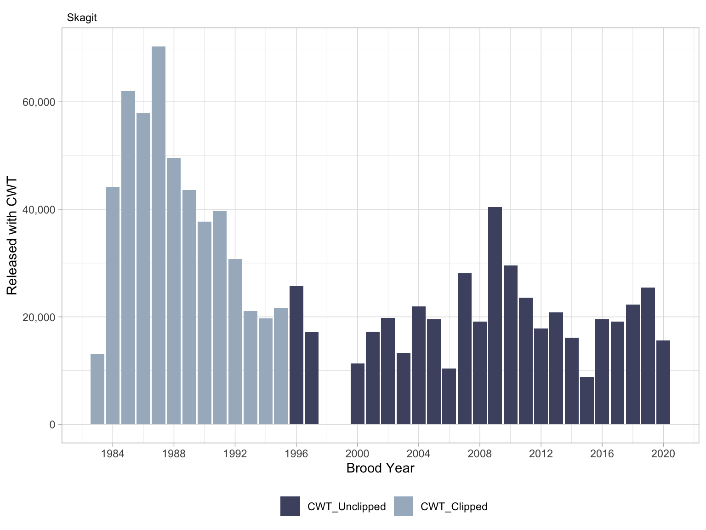
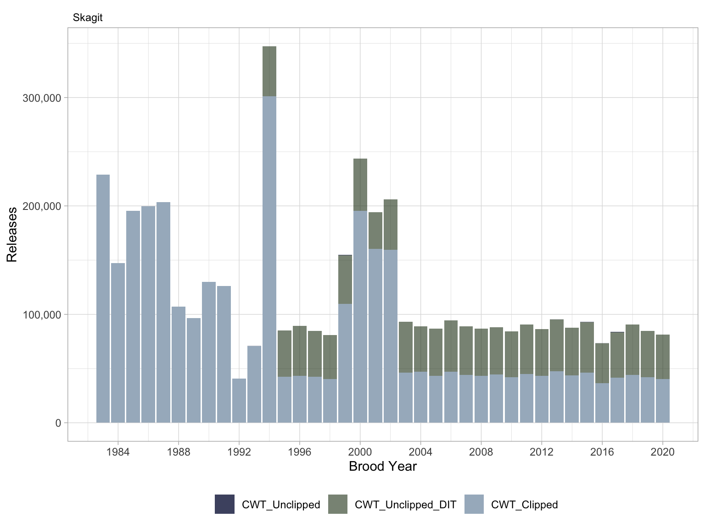
Forecast Methods
Since 1996, WDFW and tribal biologists have developed forecasts of wild Coho run size for all primary and most secondary management units in Puget Sound and the Washington coast (Zimmerman 2013). These annual forecasts are described in the Pacific Fishery Management Council’s Preseason Forecast I document available each February [e.g., Council (2013a); www.pcouncil.org]. These forecasts rely on estimates of wild Coho production (i.e., smolts) paired with estimates of marine survival. Wild Coho production estimates for each of the primary and secondary management units in Puget Sound were derived from results of juvenile trapping studies conducted in the Skagit, Stillaguamish, Snohomish, Green, Nisqually, and Deschutes rivers as well as in tributaries to Lake Washington and Hood Canal. Analyses of these long-term data sets have demonstrated that wild Coho smolt production is limited by a combination of factors including seeding levels (i.e., escapement), environmental effects (flows, marine derived nutrients), and habitat degradation (Zimmerman 2012).
Estimates of wild Coho production in the Skagit Basin are based on catch of wild Coho smolts in a juvenile trapping program on the lower mainstem Skagit River. A scoop-and-screw trap combination is operated by WDFW in the lower Skagit River mainstem, located at RM 17 from the river mouth. Trapping began in 1990 and the juvenile trap is calibrated using recaptures of wild yearling Coho marked and released from an upstream tributary (Mannser Creek, RM 35). Coho abundance is calculated using a Petersen estimator with Chapman modification (Volkhardt et al. 2007; Seber_1973?). Estimated smolt production has been quite consistent in the Skagit MU, averaging 1,060,823 smolts annually during 1990–2012 and 1,127,564 during 2000–2012. Smolt production has varied from a low of 426,963 in 2008 to a high of 1,885,000 in 2002 and has exceeded 1,000,000 smolts in 13 of the last 23 years (Table 4 1). Freshwater productivity (smolts/female) during this period was a function of Coho spawner abundance. The smolt-spawner function derived based on Skagit Coho estimates is comparable to systems with census counts, lending further credibility to the Skagit juvenile and adult estimates. Natural smolt production numbers have also been estimated for the 1984 to 1990 out-migration years by back-calculating from the number of coded-wire tags (CWTs) recovered from wild origin fish in terminal fisheries (Hayman_1995?).
Marine survival rates of wild Coho stocks have been measured using wild CWT indicator stocks in four geographic regions of Puget Sound: Big Beef Creek, Deschutes River, South Fork Skykomish River, and Baker River (Zimmerman 2012). These populations are assumed to be representative of the different Puget Sound regions. In the Baker River, a tributary to the Skagit River, marine survival of Coho smolts has averaged 7.9% (range of 1% and 14%) over 19 brood years (1989–1997, 2003–2009), with a high of 13.9% for return year 1989 and a low of 1.1% for return year 2003 (Figure 4 1). Although the long term trend in marine survival is downwards, high survival (>10%) in 2009 and 2012 is encouraging.
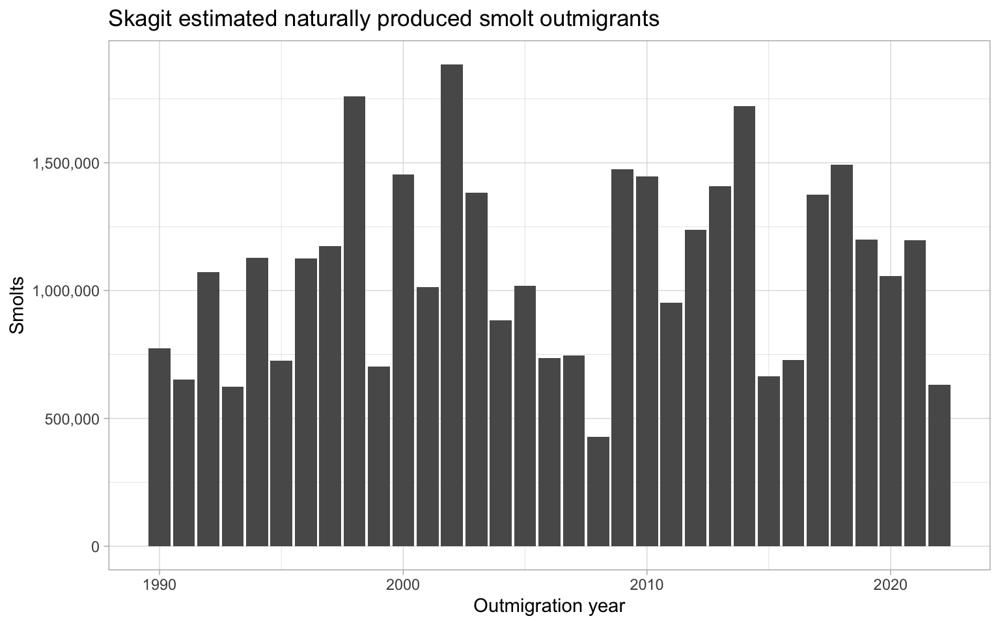
Marine survival for Baker River Coho Salmon, the average marine survival of Puget Sound indicator stocks, and forecast survival for Skagit Coho salmon by year [data from Zimmerman (2012); Zimmerman (2013), unpublished data; forecast data from PFMC Preseason I reports).
Escapement Monitoring
Escapements to the Baker system are counted at the Baker trap. Hatchery fish are distinguished by ad-clips. Wild fish returning to the Baker, including those that carry CWTs, are not ad-clipped.
Natural Coho escapement estimation efforts in the Skagit MU have a long and problematic history and are a textbook example of the challenges of estimating Coho Salmon escapements to large watersheds (Haymes 2008). An early effort at estimating a basin-total Coho escapement to this MU was a 1961 Washington Department of Fisheries (WDF, now Washington Department of Fish and Wildlife, or WDFW) mark-recapture (M/R) escapement study. This study focused on deriving a Pink Salmon (O. gorbuscha) escapement estimate for that year, but also tagged returning adult Coho to develop a Coho escapement estimate from spawning ground tag recoveries (Stockley_1963?). The Coho escapement estimate derived from this study (116,726) was confounded by low numbers of tagged Coho adults (289), limited tag recovery effort during the Coho spawning season, low numbers of tags recovered, and poor distribution of the tag recoveries (68 tags, of which 60 came from the Baker Lake adult trap, a drainage which accounts for a small fraction of the total natural Coho escapement to this MU).
A more serious attempt to directly estimate natural Coho escapements in the northern Puget Sound river basins was made in 1976 and 1977 when two major M/R escapement studies were conducted to estimate the Coho and Chum Salmon escapements to these rivers (Eames et al. 1983). The results of these studies provided the information needed for implementation of a Base-Year Index escapement estimation approach for the rivers in the Puget Sound region. The Base-Year Index escapement estimation approach was selected by the Washington Department of Fisheries (WDF) for annual estimation of Chum, Pink, and Coho escapements for these river basins because the method utilized visual spawning survey observations in lieu of expensive annual M/R studies.
Questions soon arose about the accuracy of escapement estimates produced by the index-base year approach, however. A new M/R escapement study for the Skagit River was attempted by the treaty tribes in 1984 to generate a comparative escapement estimate, but an inadequate number of Coho were tagged to develop an estimate (Hayman and Beamer 1987). An alternative approach was also examined for the 1984 escapement using the ratio of wild to hatchery-origin Coho observed in the lower river test fisheries multiplied by the hatchery return to Marblemount Hatchery to estimate the wild escapement (a “reverse form” Petersen M/R-type estimate), which produced an estimate considerably higher than the Base-Year Index approach for that year, 100,000 vs. 35,600 (Hayman and Beamer 1987).
In the 1986 to 1990 time period, M/R-based natural Coho escapement estimation studies were again conducted in the Skagit Basin by the treaty tribes (Conrad et al. 1997, 1998a, 1998b, 1998c). Returning adult Coho were captured by beach seine in the lower river, jaw tagged, and the tags subsequently recovered in in-river test fisheries, hatchery, dam or tributary fish traps, or spawning ground surveys. Peterson and Darroch analyses were conducted on the jaw tag recoveries to estimate the escapement in each of these years and compared against Index Spawning Redd-based estimates, estimates based on the proportional contribution of hatchery origin Coho to the total escapement, and the traditional Base-Year Index method that were conducted in the same years. The M/R-based escapement estimates were up to 575% higher than the Base-Year Index estimates for the same time period. The estimates based on proportional contribution of hatchery Coho to the Skagit escapement conducted in the same time period were also considerably higher than the Base-Year Index approach. These results were also supported by the observed smolt production estimates in this same time period which indicated the escapement estimates generated by the Base-Year Index approach were too low to produce the observed juvenile production.
In the 1990s another escapement estimation approach was developed for Skagit MU Coho that uses the observed marine survival rate of CWT tagged Baker Lake origin wild Coho for each year multiplied by the parent year Skagit basin smolt out-migration to produce an estimate of total adult recruitment, which is multiplied by (1 - the Baker Wild CWT-recovery fishery exploitation rate) to generate the escapement estimates (Seiler_et_al_1995?). These estimates were also typically considerably higher than the Base-Year Index estimates.
There are a number of reasons for the differences observed in the escapement estimates derived by the various methods discussed above. The Base-Year Index escapement formula for the Skagit has an inherent negative bias due to a decision made by WDF management biologists following completion of the 1977 mark-recapture escapement study to select a value approaching the lower bound of the 95% confidence interval from the M/R study results as the “base year” escapement estimate (WDF_1985?). The 29,200 value that was selected by the WDF managers is considerably lower than the M/R study point estimate of 43,000, which has a 95% confidence interval (CI) of 25,211–148,464. This decision was based on concern about the limited number of marks recovered in the M/R study, and the subsequent possibility of positive bias in the M/R-based estimate. Further uncertainty in the 1977 M/R estimate was highlighted by a re-analysis of the 1977 M/R study data by the Northwest Indian Fisheries Commission (NWIFC) that produced a point estimate of 110,758, with a 95% CI of 4,564–216,952 (Conrad n.d.).
There are uncertainties regarding the point estimates of escapement derived by the newer M/R-based estimates, due to the positive bias that can occur from missed mark recoveries at fish traps or spawning grounds, under-estimates of post-tagging mortality or tag loss, size selectivity in the terminal test fisheries, or other issues (Cousens et al. 1982). The accuracy of the “marine survival*smolt outmigration”-based method is dependent upon the assumption that the Baker River natural-origin smolts survive and are exploited in fisheries at the same rate as the rest of the Skagit MU natural origin smolts, which may not be true. The veracity of the “test fishery hatchery/wild ratio”-based method is dependent upon an equal exploitation rate on the hatchery and wild populations. Due to unresolved uncertainties at this time regarding the accuracy of all the various available methods and associated estimates, the escapement estimates currently used by the co-managers for management purposes for the 1986-to-present period are an average of the annual results of the Base-Year Index and M/R (“Reverse Petersen”)-based estimates of escapement. Historical trends in escapement for the Skagit MU are provided in Figure 4.1. Known distribution of spawners within the basin is depicted in Figure NNN (derived from WDFW’s Salmonid Stock Inventory (SaSI) located at: http://wdfw.wa.gov/conservation/fisheries/sasi/).
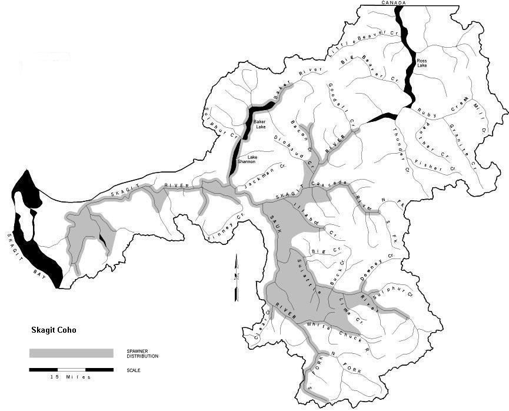
Fishery Monitoring
CCT: this is canned language used in all of the MUs. should we include real data here - like fishery sample rates on fisheries that impact this stock?
DA: I think canned/uniform langauge around pre-term mixed stock monitoring, i.e. PSSP, belongs ahead of individual MUs, but terminal/freshwater creel can/should go here…and/but that requires either writing it or pulling from multi-year coho-centric MSF-monitoring report generated by Ty for NOF22
A fundamental requirement of abundance-based Coho Salmon management under the PST is that all fishery impacts on individual MUs be annually monitored with respect to both number of fish caught and CWTs. This requires basic reporting of total impacts by fishery and the capacity to estimate each fishery’s MU-specific impacts. Total fishing mortalities for each MU must be estimated to enable managers the ability to evaluate the annual exploitation rate relative to the PST-prescribed impact limits.
Assessments of total fishing mortalities for each MU must include both directed and incidentally-landed catch as well as estimates of non-landed mortalities. These estimates may be obtained through monitoring programs or, in some cases, generated through the use of algorithms built into the Fishery Regulation Assessment Model (FRAM). Monitoring programs may involve test fisheries or data collected directly from fishers (e.g., through creel survey interviews, and other fisher-reported techniques, such as log books or fish-tickets). Estimation of non-landed fishing mortality requires annual estimates of encounter rates by fishery and gear.
Management impacts for each MU are generally evaluated using the coast-wide CWT system. This system manages information on the release and recovery of coded-wire tags. The volume of tags recovered for a given MU will depend on tagging rates, marine survival rates, exploitation and escapement rates, and sampling rates in fisheries and escapements. A recent review of CWT methods (PSCCWTW_2008?) recommends target sampling rates of 20% for the landed catch and 20% for escapements, with a minimum of 10 tags collected in each fishery or escapement stratum.
Post-season exploitation rate estimates are also generated using the Post-Season FRAM Model. Post-season estimates of catch and escapement are entered into the updated FRAM model with the same fishery regulation and effort package used for preseason modeling to generate post-season exploitation rate estimates.
Enhancement
Hatchery releases of brood years 1983–1992 were highly variable, ranging from a high of three million fish released from brood year 1983 to a low of 380,000 fish from brood year 1988 (Figure 6 1) (RMIS_1977?). Brood years 1993 to 2009 releases have averaged 500,000 annually. Mass marking and double index tagging of hatchery fish began with the 1995 brood.
With the advent of technology to automatically remove adipose fins and/or insert CWTs using mobile “tagging trailers”, mass marking of hatchery fish was implemented for Coho Salmon in the mid-1990s (SFEC_1999?). Mass marking allows mark selective fisheries (MSF) for Coho Salmon in which marked hatchery fish can be retained and unmarked wild fish released, resulting in higher harvest rates on hatchery fish than wild fish. Mass marking was fully implemented for Coho Salmon from the Columbia River, Washington coast, and Puget Sound with the 1997 brood, including both mass marking (adipose fin clip) the vast majority of hatchery fish and use of select double index tag (DIT) groups (paired clipped and unclipped fish with CWTs) (SFEC_1999?). Mass marking began with the 1995 brood and an average of approximately 283,000 fish has been mass marked per year since then ((fig_hatch_stock_releases_skagit?)) (RMIS_1977?). All DIT groups that have been released from the Skagit MU are provided in Appendix A and summarized in Appendix E.
Mark-selective fisheries have been intensively monitored to collect data to estimate key parameters characterizing MSF fisheries and their impacts on unmarked salmon. Sampling activities include dockside creel sampling, on-water observation, and a Voluntary Trip Report (VTR) system. Data collected from this sampling is used to estimate key parameters necessary to manage fisheries and integrate MSFs in the FRAM model. These parameters include: mark rate of the targeted Coho populations; total number of Coho harvested or released by mark-status, the coded-wire-tag stock composition of landed Coho, and total mortality of marked and unmarked Coho.
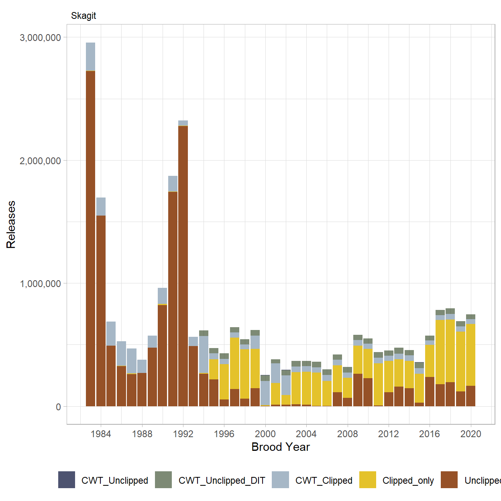
4.3.4.3 Management Performance (MU-specific figures, tables, etc.)
- includes historical/base period info, current fisheries
Forecast Evaluation
A comparison of preseason adult ocean age-3 recruit forecasts with post-season estimates derived from Backwards FRAM run reconstruction have been mixed, with some forecasts over estimating abundances and others underestimating it (Table 4 2). During catch years 2004–2013, predicted cohort size (without natural mortality) ranged from a low of 26,799 (2007) to a high of 155,814 (2004), while post-season estimates ranged from 11,521 (2006) to 145,283 (2004) (Table 4 2). Accordingly, the difference between preseason and post-season estimates varied from -210% (2007) to +89% (2006) of the preseason estimates.
To-do –> add table 4.2 (pre-post table) Preseason forecasts and post-season estimates of wild Coho in the Skagit MU. Cohort abundance is age-3 ocean recruits (harvest and escapement). Post-season cohort abundance is derived using the backwards version of the Fishery Regulation Assessment Model (FRAM).
Fishery Mortality and Escapement
The base period for the FRAM defines the temporal and spatial distributions of salmon fishing mortalities from each MU. The current FRAM base period for Coho Salmon includes catch years 1986-1992. During this period, fishing effort, tagging, and fishery sampling of Coho Salmon was high, allowing relatively fine-scale discrimination between salmon distributions. Coded-wire-tag codes used during the base period for the Skagit MU are provided in Appendix B and average base period exploitation rates by individual fisheries are provided in Appendix C.
During the base period, Coho production from the Skagit MU contributed to U.S. and Canadian marine sport and commercial fisheries in southern British Columbia, the northern Washington coast, Strait of Juan de Fuca, and inner Puget Sound (Figure 5 1; Appendix C). Terminal tribal and non-tribal set and drift-net Coho net fisheries occur in commercial fishery management area 8 and the lower Skagit River. Moderate-sized Coho sport fisheries occur in sport fishery management area 8.1, the mainstem Skagit River, and the Cascade River. The terminal fishery co-managers are WDFW, and the Upper Skagit, Sauk-Suiattle, and Swinomish Tribes.
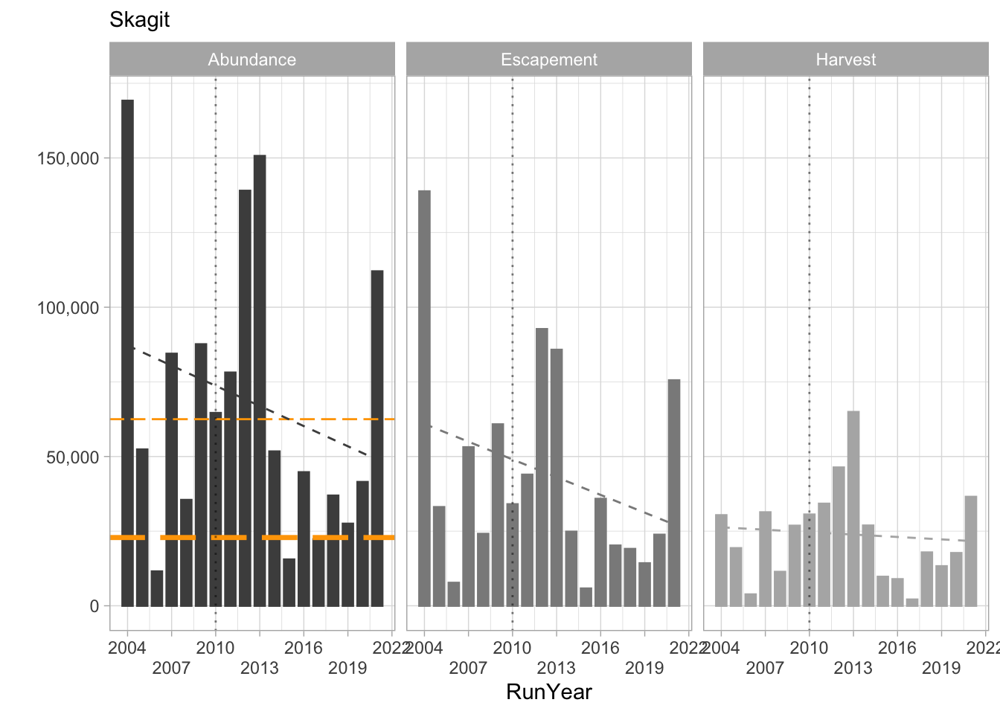
Average exploitation rates by fishing area. The stacked bars represent the rates estimated by gear type during the FRAM base period, catch years 1986–1992. The line represents the average annual total exploitation rate by fishing area during catch years ??, all gears combined.
Total exploitation rates have generally declined, averaging 59% between 1986 and 1995 then gradually falling to an extended period of low exploitation rates (26%) during 1998–2004 (Table 5 1; Figure 4 2). Exploitation rates have increased somewhat since 2005, averaging 36% during 2005–2011. Up until 1997 the exploitation rate by Canadian fishers averaged 36%, but has since declined to an average of less than 1.5%. A comparison of exploitation rates by major fisheries during the base period and the most recent five years (2006–2010) is provided in Figure 5 1, while exploitation rates by major fisheries by year since 1986 are listed in Appendix D. Individual fishery management areas within Washington State are depicted in Figure 5 2 and Figure 5 3.
To-do –> Add Table 5.1
Historical summary of annual total abundance (January age-3 without natural mortality), adult escapement, marine survival (Baker River Wild), and exploitation rates (ER) of the Skagit Management Unit; since 1986.
Historical Overview of Status of Management Unit
Since catch year 2004, the post-season status of the Skagit MU has been “Moderate” or “Abundant”, except in 2006 when the estimate of age-3 ocean recruits was less than 12,000 fish (Table 7 1).
To-do –> add Table 7.1 Pre- and post-season status determinations of the Skagit Management Unit. These determinations are based on estimates of age-3 ocean recruits.
Estimated total abundance and escapement in the Skagit MU has been quite variable during 1986–2011, with a downward trend in total abundance and a slightly trend in escapement during this period. Total abundance has varied from low of 14,123 fish (2006) to a high of 397,120 fish (1986) and has exceeded 100,000 fish in 14 of 26 years between 1986 and 2011, and six times since 2000 (Table 5 1). Estimated escapement has averaged 54,275 during the entire time period and 55,364 during 2000–2011. It has varied from a low of 7,702 fish (2006) and a high of 118,220 (2004) (Table 5 1).
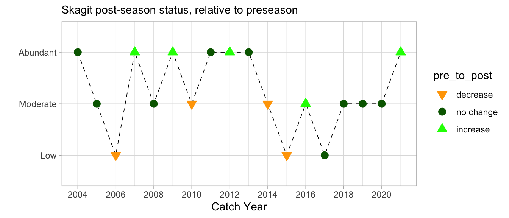
4.3.5 Stillaguamish
4.3.5.1 Biological & Geographic Description
The Stillaguamish MU is one of the U.S. Inside MUs (refer to figure of inside MUs) and consists of the Stillaguamish River and its major tributaries, the North and South Forks (Figure x). Coho Salmon make use of all available habitat within the watershed not constrained by barriers to migration. The MU is made up of a single stock (Stillaguamish Coho Salmon), managed for natural production and for the purpose of achieving a desired spawning escapement objective. Stillaguamish River Coho Salmon belong to the larger Puget Sound/Strait of Georgia Coho Salmon evolutionarily significant unit [ESU; Weitkamp et al. (1995)]. This ESU is currently a species of concern under the U.S. Endangered Species Act (Fisheries 2009).
The Stillaguamish River basin drains the north-central Cascade Mountains, flowing westward and entering Puget Sound at Port Susan, near the town of Stanwood. The basin is 685 mi2 (1774 km2) in area, with 975 linear miles (1,569 km) of mainstem and tributary habitat (Nelson_&_Lucchetti_1997?). The North Fork Stillaguamish sub-basin has the highest quality Coho spawning and rearing habitat in the MU. The South Fork Stillaguamish basin is characterized by higher gradient habitat with lower average water temperatures that is less suitable for optimal Coho production, particularly upstream of approximately river mile 25 (KM 40), near the town of Jordan. The two forks unite at the city of Arlington in northwestern Snohomish County. The combined stream flows west, entering the north end of Port Susan, an arm of Puget Sound, approximately 10 miles (16 km) west of Arlington. The North and South Fork Stillaguamish mainstems have two periods of peak flow, first during winter rain and snowmelt events, and the second during peak snow runoff in spring and early summer. The smaller tributaries are largely rain-fed, and have most peak flow events during the winter season.
Recreational, environmental conservation, and commercial forest activities are prevalent in the mid and upper basin. The lower and mid-basin areas have significant habitat impacts from agricultural and residential/commercial development in the floodplain and surrounding uplands, and flood control activities. Residential developments and agricultural lands rim the Port Susan estuary.
There are no major dams or other large man-made fish passage impediments located in the MU. Granite Falls on the South Fork Stillaguamish River was considered to be a natural migration block to all anadromous salmonids except summer steelhead (C. Kraemer, WDFW retired, personal communication). In 1956, the Washington Department of Fish and Wildlife (WDFW) constructed a fish ladder at the falls to allow consistent anadromous salmonid access to the upper South Fork (WDFW_2001?).
4.3.5.2 Management Framework
Management Objectives
Under the Comprehensive Coho Management Plan (Workgroup 1998), Stillaguamish River wild Coho is the primary (key) management unit, and off-station production is a secondary management unit. Under this plan, primary management units are controlling units in the sense that predefined management actions will be undertaken under specified abundance conditions, auxiliary management units are those managed to meet or exceed a minimum escapement, and secondary units are passively managed in mixed stock fisheries.
The Stillaguamish MU consists of just one stock, managed for natural production and for the purpose of achieving a desired spawning escapement objective (PFMC_2011?). Stillaguamish Coho Salmon are a primary management unit for Puget Sound under the Pacific Fishery Management Council. Other primary MUs in this region are eastern Juan de Fuca, Hood Canal, Skagit, Snohomish, and South Puget Sound (hatchery) Coho (PFMC_2011?). The Council’s conservation objectives for these MUs are based on the Puget Sound Salmon Management Plan, which defines management objectives and long-term goals for these stocks as developed by representatives from Federal, state, and tribal agencies. Conservation objectives for specific stocks are based on either maximum sustainable production for stocks managed primarily for natural production or on hatchery escapement needs for stocks managed for artificial production. The original conservation objectives were developed by a State/Tribal Management Plan Development Team following the Boldt Decision (384 F. Supp. 312 [W.D. Wash. 1974]) with the goal for natural spawning stocks defined as “the adult spawning population that will, on the average, maximize biomass of juvenile outmigrants subsequent to incubation and freshwater rearing under average environmental conditions.” Assessments of the quantity and quality of rearing habitat and the number of adult spawners required to fully seed the habitat were used to develop the management objectives. Some objectives have subsequently been modified by the U.S. District Court Fisheries Advisory Board and the WDFW/Tribal Technical Committee. However, annual natural management objectives may vary from the Fishery Management Plan (FMP) conservation objectives if agreed to by WDFW and the treaty Indian tribes under the provisions of U.S. versus Washington (384 F. Supp. 312 [W.D. Wash. 1974]) and subsequent U.S. District Court orders.
In 2009, the Council adopted annual management objectives for Puget Sound Coho as recommended by WDFW and tribal co-managers under provisions of U.S. versus Washington. The annual objectives were based on the PSC categorical status and associated maximum exploitation rate limits. The Council formally adopted exploitation rate management objectives for Puget Sound Coho which were consistent with PSC objectives in November 2009. The current PST/Council exploitation rate ceilings for the Stillaguamish MU natural Coho population are provided in the table below. The current corresponding ocean abundance breakpoints are 20,000 and 9,385 (PFMC_2012?). Prior to adoption of exploitation rate-based management for this MU in domestic and international management processes, natural Stillaguamish River origin Coho were managed for a fixed escapement goal of 17,000. This goal was derived from a freshwater juvenile carrying capacity model (Zillges 1977).
Current Stillaguamish MU ocean abundance reference breakpoints and maximum total exploitation rates by PSC and Council status categories.
|———————————————————| | Status(PSC/Council) | Ocean Abundance
Reference Breakpoint |Total Exploitation Rate | |————————–|:————————————–|:———————–:| | Low/Critical | <= 9,385 | Up to 20% | | Moderate/Low | 9,386 – 20,000 | 21% – 35% | | Abundant/Normal | > 20,000 | 36% – 60% | |———————————————————|
Stock Assessment
Indicator Stocks
The Stillaguamish MU relies on the following two indicator stocks releases in the Snohomish MU: Bernie Gobin Hatchery (Tulalip Creek) and Wallace River Hatchery (Skykomish) (CoTC 2011). Wallace River fish were double index tagged during brood years 1996–2009.
Coded-wire tagging programs have been limited within the basin. A smolt trapping study conducted by the Stillaguamish Tribe on brood years 1984–87 is the only source of wild tagging data from the Stillaguamish Watershed (Figure 4 4). A small scale CWT program associated with an enhancement project has been conducted in more recent years (Haymes 2008); however, tagged fish have only been released from brood years 1991–1998 and 2007 (RMISD_1977?). There are no direct estimates of marine survival or exploitation for this MU due to the limited numbers of CWTs released from the enhancement projects, and lack of formal escapement accounting for the returning tagged Coho. Tagged hatchery and wild fish released in the Snohomish MU are used as surrogates for the Stillaguamish MU.
Forecast Methods
Each year, a preseason abundance forecast of age-3 ocean recruits for Stillaguamish Coho Salmon is developed jointly by the Stillaguamish and Tulalip Tribes and WDFW by February. These annual forecasts are described in the Pacific Fishery Management Council’s Preseason Forecast I document each February [(PFMC_2012?); www.pcouncil.org]. This is part of a larger WDFW-tribal effort to develop forecasts of wild Coho run size for all primary and most secondary management units in Puget Sound and the Washington coast (Zimmerman 2011; Seiler_et_al_1995?). These forecasts rely on estimates of wild Coho Salmon production (i.e., smolts) paired with estimates of marine survival. Wild Coho Salmon production estimates for each of the primary and secondary management units in Puget Sound were derived from results of juvenile trapping studies conducted in the Skagit, Stillaguamish, Snohomish, Green, Nisqually, and Deschutes rivers, as well as in tributaries to Lake Washington and Hood Canal. Analysis of these long-term data sets have demonstrated that wild Coho smolt production is limited by a combination of factors including seeding levels (i.e., escapement), environmental effects (flows, marine derived nutrients), and habitat degradation (Zimmerman 2011).
WDFW’s Wild Salmon Production Evaluation (WSPE) Unit measured Coho production of brood years 1979 through 1981 in the Stillaguamish River. During these years, the watershed was considered to be adequately seeded. A juvenile trap was operated upstream of river mile 16 between 1981 and 1983. Basin-wide production was the sum of estimated production above the trap and expanded production below the trap. The average production estimate above the trap was 284,000 smolts (Seiler_et_al_1984?), 42.9% of the predicted production potential for this portion of the watershed (Zillges 1977). Expanded production below the trap (86,000 smolts) was calculated by applying the ratio of measured to potential production above the trap (42.9%) to the potential production below the trap (201,520 smolts). Estimated smolt production has been quite consistent in the Stillaguamish MU, averaging 397,000 smolts annually during 1990-2000 and 362,000 during 2000-2011. Smolt production has varied from a low of 144,000 in 2008 to a high of 555,000 in 2010 (Table 4 1).
Marine survival rates of wild Coho stocks have been measured using wild CWT indicator stocks in four geographic regions of Puget Sound: Big Beef Creek, Deschutes River, South Fork Skykomish River, and Baker River (Zimmerman 2011). These populations are assumed to be representative of the different Puget Sound regions. Marine survival rates for wild Stillaguamish Coho are estimated from the S.F. Skykomish in the Snohomish MU. Marine survival for this indicator population has averaged 12.7% during return years 1986-2011, with a high of 23.6% in 1994 and a low of 3.6% in 2006 (Figure 4 1).
add table or figure of outmigrating smolts
Escapement Monitoring
The method used for estimating natural Coho escapements in this MU is the Base-Year Index approach (Haymes 2008). This approach is used to estimate annual Coho escapements to most of the major river basins and geographically associated aggregations of smaller independent tributaries in the Puget Sound region, exclusive of the Strait of Juan de Fuca. The Base-Year Index approach was adopted for estimating Coho escapements in this region because the distribution of Coho spawners is geographically broad in each river basin. Because of this, an approach is required that is not dependent on the direct census of a large portion of the total spawning habitat. In addition, assessments of serial live and/or dead fish observations are needed instead of spawning redd enumeration because the multiple species overlap and/or high spawning densities often make Coho redd enumeration impractical.
The Base-Year Index method allows expansion of an annual index of abundance developed from serial field counts of live or dead salmon, collected in a relatively small fraction of the total freshwater habitat, to an estimate of basin or region-total escapement. A series of point counts of live Coho abundance are made in several fixed-location survey reaches, distributed throughout each major river basin or region. At the end of the spawning season an abundance index is developed for each index survey reach using the “area under the curve” (AUC) approach (Ames 1984; Irvine et al. 1993). The sum of the individual abundance index values from an individual escapement estimation unit (usually a river basin) are then multiplied by a historical “base year” basin-total escapement estimate developed from a mark-recapture study. The resulting value is divided by the base year index of abundance calculated for the same survey reaches that were monitored in the current escapement year, to produce the basin-total escapement estimate for the current year. In the Stillaguamish River basin, Coho escapement is estimated from 17 index reaches covering 10.7 miles (17.2 km) (Haymes 2008). Historical trends in escapement for the Stillaguamish MU are provided in Table 4 3 and Figure 4 2. Known distribution of spawners within the basin is depicted in Figure 4 3.
Spawner distribution of Coho Salmon in the Stillaguamish River (figure modified from WDFW’s Salmonid Stock Inventory (SaSI) located at: http://wdfw.wa.gov/conservation/fisheries/sasi/).
Fishery Monitoring (canned language across all US MUs. Shall we move this?)
A fundamental requirement of abundance-based Coho Salmon management under the PST is that all fishery impacts on individual MUs be annually monitored with respect to both number of fish caught and CWTs. This requires basic reporting of total impacts by fishery and the capacity to estimate each fishery’s MU-specific impacts. Total fishing mortalities for each MU must be estimated to enable managers the ability to evaluate the annual exploitation rate relative to the PST-prescribed impact limits. Assessments of total fishing mortalities for each MU must include both directed and incidentally-landed catch as well as estimates of non-landed mortalities. These estimates may be obtained through monitoring programs or, in some cases, generated through the use of algorithms built into the Fisheries Regulation Assessment Model (FRAM). Monitoring programs may involve test fisheries or data collected directly from fishers (e.g., through creel survey interviews, and other fisher-reported techniques, such as log books or fish-tickets). Estimation of non-landed fishing mortality requires annual estimates of encounter rates by fishery and gear.
Management-Unit-specific impacts are generally evaluated using the coast-wide CWT system. This system manages information on the release and recovery of coded-wire tags. The volume of tags recovered for a given MU will depend on tagging rates, marine survival rates, exploitation and escapement rates, and sampling rates in fisheries and escapements. A recent review of CWT methods (PSCCWTW_2008?) recommends target sampling rates of 20% for the landed catch and 20% for escapements, with a minimum of 10 tags collected in each fishery or escapement stratum.
Mark selective fisheries have been intensively monitored to collect data to estimate key parameters characterizing MSF fisheries and their impacts on unmarked salmon. Sampling activities include dockside creel sampling, on-water observation, and a Voluntary Trip Report (VTR) system. Data collected from this sampling is used to estimate key parameters necessary to manage fisheries and integrate MSFs in FRAM. These parameters include the following:
- mark rate of the targeted Coho populations; - total number of Coho harvested by mark-status, including an estimate of angler compliance rate with Coho MSF regulations; - total number of Coho released (by size/mark-status); - the coded-wire tag-stock composition of landed Coho; and - total mortality of marked and unmarked Coho.
Estimates of observed encounter rates or mortality can then be compared to preseason FRAM projections (WDFW_2011?).
Post-season exploitation rate estimates are also generated using the Post-Season FRAM Model. Post-season estimates of catch and escapement are entered into the updated FRAM model with the same fishery regulation and effort package used for preseason modeling to generate post-season exploitation rate estimates.
Enhancement
The following hatcheries are located within the Stillaguamish watershed: - Harvey Creek Hatchery is operated by the Stillaguamish Tribe and is located 2 miles upstream of the mouth of Harvey/Armstrong Creek, which is located 15.3 miles upstream of the mouth of the Stillaguamish main stem. - North Fork/Johnson Creek Hatchery is also operated by the Stillaguamish Tribe and is located approximately 2.5 miles upstream of the mouth of Johnson Creek located on the North Fork Stillaguamish (Stillaguamish_Tribe_2004?) (Figure x).
A Coho program at the US Navy’s hatchery at Jim Creek has been terminated. In the past the Stillaguamish Tribe propagated Coho at the Tribe’s Harvey Creek and Johnson Creek Hatcheries and at a satellite facility at the Navy’s Jim Creek Hatchery. Wild broodstock and the progeny of wild broodstock were captured at the respective sites. Small to moderate numbers of juvenile Coho produced from a wild broodstock collection program were released annually into selected lower Stillaguamish River tributaries for enhancement purposes since the 1993 brood year. Fish were collected with stick weirs and other approaches from lower river tributaries, then spawned and reared at Jim Creek Hatchery, a small incubation and rearing facility located on a lower river tributary and operated by the Stillaguamish Tribe.
The Stillaguamish Coho program is an integrated harvest/recovery program with the following goals: 1) providing for a limited selective terminal area fishery for tribal members during years when natural escapement requirements would not normally allow for a tribal fishery; and 2) to provide for a natural origin broodstock program for restoration activities within the basin (Stillaguamish 2004).
Approximately 26,000 hatchery fish have been released within the basin annually since brood year 1985 (Figure 6 1). Hatchery releases have been slowly decreasing since 1986, from a high of 138,750 fish released from brood year 1986 to a low of 2,802 fish from brood year 2002.
With the advent of technology to automatically remove adipose fins and/or insert CWTs using mobile “tagging trailers”, mass marking of hatchery fish was implemented for Coho Salmon in the mid-1990s (SFEC 1999). Mass marking allows mark selective fisheries (MSFs) for Coho Salmon in which marked hatchery fish can be retained and unmarked wild fish released, resulting in higher harvest rates on hatchery fish than wild fish. Mass marking was implemented for Coho Salmon from the Columbia River, Washington Coast, and Puget Sound beginning with the 1994 brood, including both mass marking (adipose fin clip) the vast majority of hatchery fish and the use of select double index tag (DIT) groups (unclipped fish with CWTs) (SFEC 1999). Mass marking of hatchery fish within the Stillaguamish began with the 2004 brood (Figure 6 1). There are no DIT programs within the Stillaguamish MU; however, DIT groups from the Snohomish are used as a surrogate and are listed in Appendix A.
4.3.5.3 Management Performance
Total exploitation rate (ER) by the U.S. and Canada and escapement for the Stillaguamish MU for catch years 1986 to ????. Exploitation rate (ER) estimates from 1986 to 1997 are based on CWT recoveries and were generated using the Mixed-Stock Model and cohort reconstruction process. A post-season FRAM assessment technique was used to estimate ERs beginning with catch year 1998.
Forecast Evaluation
add table of pre vs post season forecasts of abundance
The forecasts of Stillaguamish Coho abundance have generally been higher than postseason estimates. During catch years 2004–2010, predicted cohort size (without natural mortality) ranged from a low of 13,400 (2009) to a high of 69,200 (2007) while post-season estimates ranged from 10,808 (2006) to 73,935 (2004) (CoTC 2011) (Table 4 2). Accordingly, the difference between preseason forecasts and post-season estimates varied from -130% (2009) to +77% (2006).
Fishery Mortality and Escapement
The base period for the Fisheries Regulation Assessment Model (FRAM) defines the temporal and spatial distributions of salmon fishing mortalities from each MU. The current FRAM base period for Coho Salmon includes catch years 1986–1992. During this period, fishing effort, tagging, and fishery sampling of Coho Salmon was high, allowing relatively fine-scale discrimination between salmon distributions. Coded-wire-tag codes used during the base period for the Stillaguamish MU are provided in Appendix B and average base period exploitation rates by individual fisheries are provided in Appendix C.
During the base period, Coho production from the MU contributed to US and Canadian marine sport and commercial fisheries in southern BC, the northern Washington coast, Strait of Juan de Fuca, and inner Puget Sound (Haymes 2008) (Figure 5 1; Appendix C). Terminal tribal and non-tribal set and drift-net Coho net fisheries occur in commercial Marine Management Areas (MMAs) 8A (Port Susan/Possession Sound) and 8D (Tulalip Bay). No directed commercial salmon fisheries typically occur in the Stillaguamish River, though there may periodically be tribal ceremonial and subsistence fisheries. A substantial marine sport fishery occurs in sport MMA 8.2 (Port Susan/Possession Sound), and small freshwater Coho sport fishery occurs in the Stillaguamish River basin. The terminal fishery co-managers are WDFW, and the Tulalip and Stillaguamish Tribes.
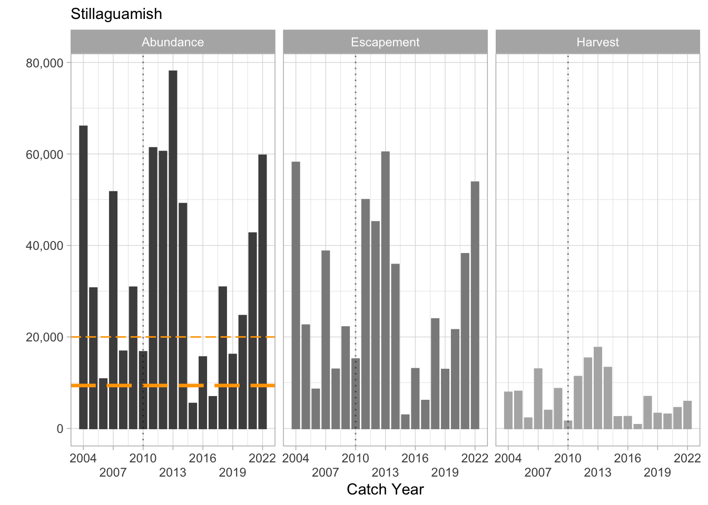
Total exploitation rates have generally declined since 1986 having averaged 71% during 1986–1993, then gradually falling to an extended period of low exploitation rates (10%) during 2002–2004 (Table 4 3; Figure 4 1). Exploitation rates have increased since 2004, averaging 23% during 2005–2009. Up until 1997 the exploitation rate by Canadian fishers averaged 26%, but has since declined to an average of less than 1.0% (Appendix D).
A comparison of exploitation rates by major fisheries during the base period and the most recent five years (2006–2010) is provided in Figure 5 1, while exploitation rates by major fisheries by year since 1986 are given in Appendix D. Individual fishery management areas within Washington State are depicted in Figure 5 2.
Historical Overview of Status of Management Unit
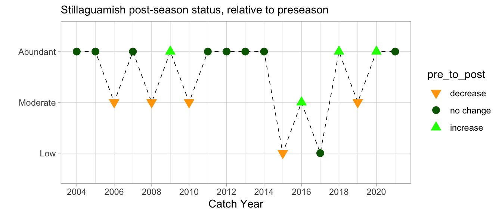
4.3.6 Snohomish
4.3.6.1 Biological & Geographic Description
The Snohomish MU is one of the U.S. Inside MUs and includes all accessible waters of the Snohomish River Basin, Washington State, including its major tributaries, the Skykomish and Snoqualmie rivers.
The Snohomish River basin is 1,780 mi2 [2,865 km] in size, draining the Cascade Mountains to the east of Everett and Seattle, and entering Puget Sound at Everett. The MU has extensive moderate to high quality juvenile Coho spawning and rearing habitat, due the large number of low gradient tributaries. The main tributaries directly draining the Cascades tend to have two periods of peak flow, first during winter flood events and the second during peak snow runoff in spring and early summer. The smaller tributaries are largely rain-fed, and have peak flows during the winter rain season.
Recreational, environmental conservation, and commercial forest activities are prevalent in the mid and upper basin. The lower and mid-basin areas have significant habitat impacts from agricultural and residential/commercial development in the floodplain and surrounding uplands, and flood control activities. Major urban centers in the MU include Everett, Snohomish, and Monroe, with numerous smaller residentially oriented communities located through the basin.
There is only one major dam located in the MU, Spada Reservoir at RM 16.2 [KM 26] on Sultan River, with a diversion dam located at RM 9.7 [KM 16] on the Sultan River that blocks upstream passage of anadromous fish past this point. A significant increase in available natural Coho production habitat in the Snohomish MU occurred in 1958 when the Sunset Falls Fishway became operational and 362 mi2 [938 km2] of habitat above a large natural waterfall system was opened to anadromous salmonid use (WDF 1958).
All wild Coho that originate from the Snohomish basin constitute a single management unit and are managed as a single stock. Snohomish River Coho Salmon belong to the larger Puget Sound/Strait of Georgia Coho Salmon evolutionarily significant unit (ESU; Weitkamp et al. 1995). This ESU is currently a species of concern under the U.S. Endangered Species Act (NOAA Fisheries 2009).
4.3.6.2 Management Framework
Management Objectives
Under the Comprehensive Coho Management Plan (CCW 1998), Snohomish River wild Coho is the primary (key) management unit and hatchery production is an auxiliary management unit (CCW 1998). Under this plan, primary management units are controlling units in the sense that predefined management actions that will be undertaken under specified abundance conditions, auxiliary management units are those managed to meet or exceed a minimum escapement, and secondary units are passively managed in mixed stock fisheries. Therefore, Snohomish River Coho are managed for natural (wild) production.
Snohomish Coho Salmon are a primary management unit for Puget Sound under the Pacific Fishery Management Council (Council) (PFMC 2011). Other primary MUs in this region are eastern Strait of Juan de Fuca, Hood Canal, Skagit, Stillaguamish, and South Puget Sound (hatchery) Coho (PFMC 2011). The Council’s conservation objectives for these MUs are based on the Puget Sound Salmon Management Plan, which includes management objectives and long-term goals for these stocks as developed by representatives from federal, state, and tribal agencies.
In Puget Sound, conservation objectives for specific stocks are based on either maximum sustainable production for stocks managed primarily for natural production or on hatchery escapement needs for stocks managed for artificial production. The original conservation objectives were developed by a State/Tribal Management Plan Development Team following the Boldt Decision (384 F. Supp. 312 [W.D. Wash. 1974]) with the goal for natural spawning stocks defined as “the adult spawning population that will, on the average, maximize biomass of juvenile outmigrants subsequent to incubation and freshwater rearing under average environmental conditions”. The method used to develop the objectives was based on assessment of the quantity and quality of rearing habitat and the number of adult spawners required to fully seed the habitat. Some objectives have subsequently been modified by the U.S. District Court Fisheries Advisory Board and later determinations of the WDFW/Tribal Technical Committee. However, annual natural management objectives may vary from the fisheries management plan (FMP) conservation objectives if agreed to by WDFW and the treaty Indian tribes under the provisions of U.S. versus Washington (384 F. Supp. 312 [W.D. Wash. 1974]) and subsequent U.S. District Court orders.
In 2009, the Pacific Fishery Management Council adopted annual management objectives for Puget Sound Coho as recommended by WDFW and tribal co-managers under provisions of U.S. versus Washington. The annual objectives were based on the PSC categorical status and associated maximum exploitation rate limits. The Council formally adopted exploitation rate management objectives for Puget Sound Coho in November 2009, which were consistent with PSC objectives, and will replace the longstanding FMP spawning escapement objectives in 2010.
The current PST/Council exploitation rate ceilings for the Snohomish MU natural Coho population are provided here:
Current Snohomish MU ocean abundance reference breakpoints and maximum total exploitation rates by PSC and Council status categories.
|———————————————————| | Status(PSC/Council) | Ocean Abundance
Reference Breakpoint |Total Exploitation Rate | |————————–|:————————————–|:———————–:| | Low/Critical | <= 51,667 | Up to 20% | | Moderate/Low | 51,668 – 125,000 | 21% – 40% | | Abundant/Normal | > 125,000 | 41% – 60% | |———————————————————|
Stock Assessment
Since 1996, WDFW and tribal biologists have developed forecasts of wild Coho run size for all primary and most secondary management units in Puget Sound and the Washington coast (Seiler 1996, Zimmerman 2011). These annual forecasts are described in the Pacific Fishery Management Council’s Preseason Forecast I document each February (PFMC 2012; www.pcouncil.org). These forecasts rely on estimates of wild Coho production (i.e., smolts) paired with estimates of marine survival. Wild Coho production estimates for each of the primary and secondary management units in Puget Sound were derived from results of juvenile trapping studies conducted in the Skagit, Stillaguamish, Snohomish, Green, Nisqually, and Deschutes rivers as well as in tributaries to Lake Washington and Hood Canal. Analysis of these long-term data sets have demonstrated that wild Coho smolt production is limited by a combination of factors including seeding levels (i.e., escapement), environmental effects (flows, marine derived nutrients), and habitat degradation (Zimmerman 2012).
Estimates of wild Coho production in the Snohomish Basin are based on catch of wild Coho in a juvenile trapping program on the Skykomish River. Between 1978 and 1986, WDFW operated a juvenile trap below Sunset Falls on the South Fork Skykomish River (Zimmerman 2011). Coho production estimates were generated with a back-calculation method (Petersen-Chapman estimator). For a given brood year, the back-calculation applied the incidence of coded-wire tag returns to the Sunset Falls adult trap to the number of tagged Coho smolts released from the juvenile trap. The back-calculation method accounts for South Fork Skykomish Coho production above and below the trap.
Between 1978 and 1983, average production was 276,000 smolts (range = 212,000 to 354,000 smolts) and inter annual variation in smolt production was not correlated with spawner abundance. Between 1982 and 1984 (corresponding to the 1984 to 1986 outmigration), escapement was experimentally reduced in order to determine whether smolt production could be limited by lower escapements. For these three years, limited escapement (1,000 to 3,000 females) reduced Coho production to an average of 198,000 smolts. A basin-wide estimate for these years was derived by expanding average Coho production in the South Fork Skykomish by 20.7%, the portion of the Snohomish system’s drainage area represented by the South Fork Skykomish sub-basin. With this method, average Coho production for the Snohomish Basin is 1,333,000 smolts (Seiler 1996). This estimate was subsequently reduced to 1,000,000 smolts to account for the portions of the watershed that are not accessible to anadromous fish (i.e., 450 mi2 or 26%; Seiler 1999).
In more recent years, estimated smolt production has been quite consistent in the Snohomish MU, averaging approximately 1,100,000 smolts annually during 2000–2010 (Table 4 1). Smolt production has varied from a low of 720,000 in 2008 to a high of 1,500,000 in both 2002 and 2010. Smolt production has exceeded 1,000,000 smolts in 12 of the last 17 years.
Indicator Stocks
Forecast Methods
Escapement Monitoring
Fishery Monitoring
Enhancement
The Bernie Kai-Kai Gobin Hatchery and the Wallace River Hatchery operate within the Snohomish Basin (Figure x). The Bernie Kai-Kai Gobin Hatchery opened in 1983 and is located at the juncture of the east and west Forks of Tulalip Creek and is operated by the Tulalip Tribes (Tulalip Tribes 2004). This coho program is an isolated program and the purpose of this program is to provide coho salmon for harvest by Tulalip Tribal members in a terminal area fishery. Production from this program is also available for harvest by the non- Indian sport fishery and contributes to other directed and incidental harvest of coho salmon in other preterminal fisheries. The Wallace River Hatchery is located at RM 4 on the Wallace River (07.0940) at the confluence with May Creek (07.0943) and is operated by WDFW (WDFW 2003). Salmonids have been reared at the Wallace River site since 1907. The current Wallace River Hatchery Coho program is an integrated program with the goal of providing fish for harvest opportunity (WDFW 2003). Adults are collected at the following two collection facilities: 1) an instream trap located on May Creek; and 2) with the use of a weir placed across the Wallace River from June until October 1st.
4.3.6.3 Management Performance
Forecast Evaluation
Fishery Mortality and Escapement
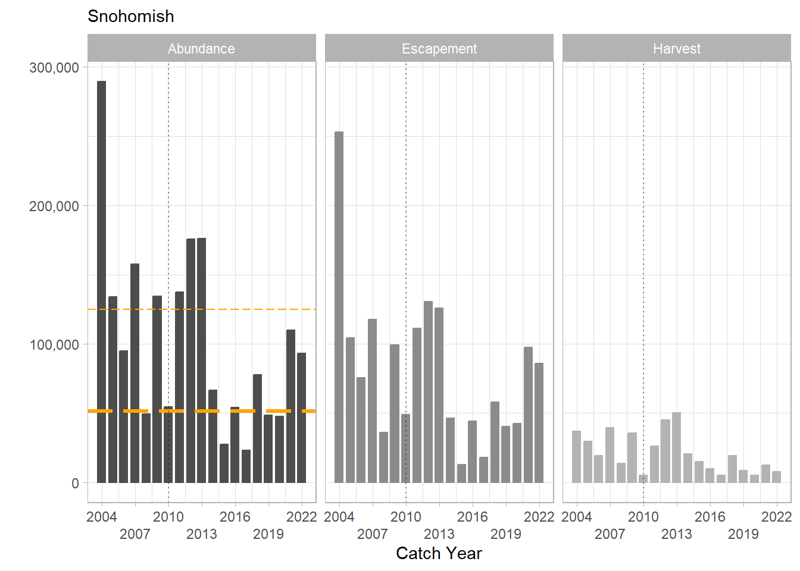
Historical Overview of Status of Management Unit
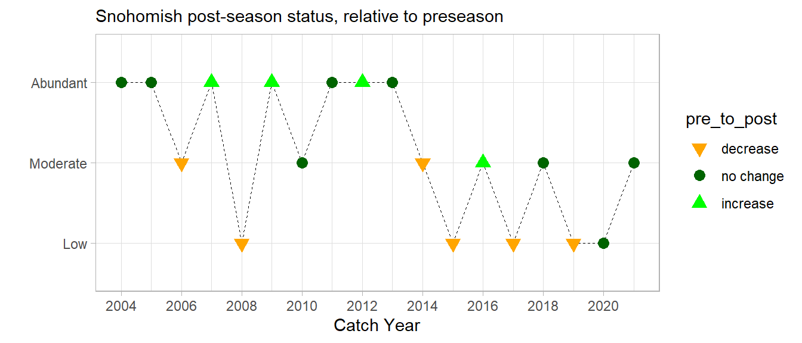
4.3.7 Hood Canal
4.3.7.1 Biological & Geographic Description
The Hood Canal MU is one of the U.S. Inside MUs and includes all waters south and east of a line from Olele Point to Foulweather Bluff (WDFW_and_WWTIT_1994?) (@ref(fig:Hood_Canal_MU). This MU consists of the following nine stocks: Northeast Hood Canal, Dewatto, Southeast Hood Canal, Skokomish, Southwest Hood Canal, Hamma Hamma, Duckabush, Dosewallips, and Quilcene/Dabob Bays (CWW_1998?). Coho Salmon utilize almost all of the accessible tributaries draining into Hood Canal. Hood Canal Coho Salmon belong to the larger Puget Sound/Strait of Georgia Coho Salmon evolutionarily significant unit (ESU; (Weitkamp et al. 1995). This ESU is currently a species of concern under the U.S. Endangered Species Act (Fisheries 2009).
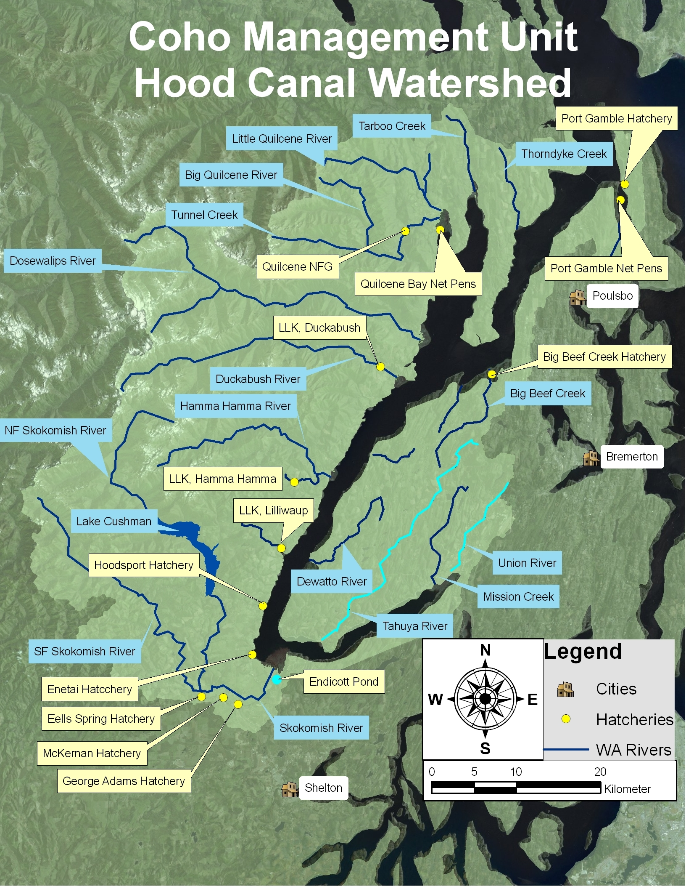
TODO: add newest hatcheries to map (salwater park and north fork salmon)
Hood Canal is a 61 mile long fish hook-shaped fjord, bordered on the west by the heavily forested Olympic Mountains and the low rolling hills of the Kitsap Peninsula border it on the east. It is 1.2 to 2.5 miles (2 to 4 km) wide, and up to 570 feet (175 meters) deep in the main body of the canal. The depth at the northern entrance to the canal is 165 to 245 feet (50 to 75 meters), and shallows to 130 feet (40 meters) or less in the “arm” on the southern end of Hood Canal. The freshwater habitat of this MU consists of numerous small to medium-sized river basins entering Hood Canal.
Watersheds flowing into Hood Canal from the west, draining out of the Olympic Mountains, are high gradient rivers with limited access to anadromous fish due to natural barriers. They consist of river systems from the Skokomish River at the southwest corner northward to the Big Quilcene River. The Skokomish River, including the South and North forks, is the largest watershed. The other major watersheds that flow into the canal from the west include the Hamma Hamma, Duckabush, and Dosewallips rivers. These systems drain the eastern slopes of the Olympic Mountain Range, are of consistently higher gradient, and receive snowmelt runoff in addition to rain-fed discharge. The Duckabush and Dosewallips rivers also have some glacial input. Most tributaries entering the west side of Hood Canal are not highly productive for natural Coho due to the high average gradients, with the exception of some tributaries in the Skokomish River drainage.
Watersheds flowing into Hood Canal from the east, off the Kitsap Peninsula, are lower gradient, smaller systems. These river systems include the Union, Dewatto, and Tahuya rivers. The Kitsap Peninsula tributaries have some of the highest quality Coho spawning and rearing habitat in the MU, due to the numerous low gradient tributaries and limited urban development in most of this area.
Much of the land base in the region is managed for commercial timber production, though the upper reaches of the longer western Hood Canal tributaries originate in Olympic National Park. There are several small to moderate-sized communities scattered through the MU. Residential and commercial development rates are increasing rapidly on the Kitsap Peninsula, with the fastest growth around the town of Belfair on the southeastern end of the Hood Canal arm and along the northeast side of Hood Canal northwest of Bremerton.
There have been severe water quality issues in Hood Canal in recent years due to seasonally low dissolved oxygen (DO) problems. It is thought that the DO problem is associated with the shallow sill at the northern end that prevents full tidal exchange of the deep water layer, and organic pollutant inputs from human activities have exacerbated the periodic anoxic conditions in the sub-surface water layers in recent years (Allen 2007). It is currently unknown what the implications of this problem are for the future productivity of salmon populations in the region.
A number of salmon hatchery facilities exist within the Hood Canal MU and listed below are the Coho programs in the canal (@ref(fig:Hood_Canal_MU).
The Quilcene National Fish Hatchery (QNFH) is located in the northwestern section of Hood Canal on the Big Quilcene River at RM 3 [KM 4.8] from the estuary (Fish and Service) 2007). This facility was constructed in 1911 and is operated by the U.S. Fish and Wildlife Service. Coho Salmon have been raised continuously since 1911, presumably begun with local Quilcene River broodstock. It is an integrated harvest program with the goal of providing adult Coho for harvest (Fish and Service) 1999). Current Coho annual production goals include 400,000 smolts (24,000 lbs) to be released on-station, 200,000 pre-smolts (9,050 lbs at transfer) to be transferred to the Skokomish Tribal net pen in Quilcene Bay, and 450,000 eyed eggs to be transferred to George Adams Hatchery (which are transferred later to the Port Gamble Bay Net Pens) (Fish and Service) 2007). The QNFH stock is a somewhat early returning population compared to most other hatchery and wild populations in the Puget Sound region.
George Adams Hatchery is operated by WDFW and is located on Purdy Creek, a tributary to the lower Skokomish River in southwestern Hood Canal (WDFW_2003?). The hatchery was constructed in 1960 and expanded in 1977. The purpose of the Coho program at George Adams is to augment harvest opportunities and, in part, mitigate for reduced natural production in the Skokomish system, primarily caused by hydroelectric dams on the North Fork Skokomish River. The program is intended to be an isolated harvest program; however, an unknown number of adults stray into the spawning grounds of the Skokomish River. Current Coho production goal is 500,000 yearlings released annually into Purdy Creek. In addition to WDFW production at George Adams, the hatchery receives 450,000 eyed eggs from the QNFH and rears the fish for eventual transfer to the Port Gamble Bay Net Pens.
The WDFW Hoodsport Hatchery, located on the southwestern side of Hood Canal north of the Skokomish River, discontinued Coho production after the 1993 brood.
The Quilcene Net Pens are anchored at the southeast end of Quilcene Bay near Fisherman’s Point (commercial Marine Management Area [MMA] 12A), in northwestern Hood Canal (Skokomish_Tribe_2003?). This program is operated by the Skokomish Tribe and began releasing Coho in 1986. Eggs are collected from QNFH broodstock, incubated and hatched, and the fry are reared to smolts in the same hatchery before transfer to the Quilcene Bay Net Pens. The net pens receive the Coho smolts in January and the fish are reared until release in April or May. The program is intended to be an isolated harvest program and the production goal is to release 200,000 Coho smolts annually. Due to spring algal blooms, Coho have not been reared and released from the Net Pens since BY 2013. Instead, these fish have been kept at Quilcene NFH and released into the Big Quilcene River.
Little Boston Hatchery is a fall Chum Salmon hatchery program located at the mouth of Little Boston Creek on Port Gamble Bay and is operated by the Port Gamble S’Klallam Tribe. The hatchery is an isolated harvest program to support local fall Chum Salmon fishing opportunities. This program enhances the stability and viability of treaty and non-treaty fisheries. Up to 1300 adult Chum Salmon are collected each fall in order to release 950,000 fry during the following spring.
The Port Gamble Net Pens are anchored at the northern end of Port Gamble Bay (commercial MMA 9A) in northern Hood Canal. This is a cooperative effort with the Washington Department of Fish and Wildlife and U.S. Fish and Wildlife Service. The net pens are operated by the Port Gamble S’Klallam Tribe and began releasing Coho smolts in 1981 (Port_Gamble_S?’Klallam_Tribe_2003). Eggs are collected from QNFH broodstock and transferred to George Adams Hatchery where they are hatched and the fry are reared to smolts before transfer to the Port Gamble Net Pens. The Port Gamble S’Klallam Tribe operates and maintains the net pens, and fish food is provided by WDFW. Around 425,000 yearling coho salmon are released each year after April 15. The program is intended to be an isolated harvest program and the production goal is to release 400,000 Coho smolts annually. update new release goals due to SRKW increases here
The newest hatcheries within the Canal include Saltwater Park Sockeye Hatchery and the North Fork Salmon Hatchery.

Both of these programs are operated through a partnership between the Skokomish Tribe and Tacoma Power. The Saltwater Park Sockeye Hatchery is located next to the powerhouse on the shores of Hood Canal and have raised and released only Sockeye Salmon, beginning with BY 2016 fish. Spring Chinook Salmon, Coho Salmon, and steelhead are raised and released from the North Fork Salmon Hatchery which is located on the southern shore of Lake Kokanee. Coho Salmon have been released from this hatchery beginning with BY 2013.
4.3.7.2 Management Framework
Management Objectives
Under the Comprehensive Coho Management Plan (Workgroup 1998), mainstem Hood Canal wild Coho is the primary (key) management unit and other aggregate (Area 9A [Port Gamble Net Pens and Area 9A wild], Area 12A [Area 12A wild, Quilcene NFH, Quilcene Bay net pens], and George Adams Hatchery) production are auxiliary management units (Workgroup 1998). Under this plan, primary management units are controlling units in the sense that predefined management actions will be undertaken under specified abundance conditions, auxiliary management units are those managed to meet or exceed a minimum escapement, and secondary units are passively managed in mixed stock fisheries. Therefore, Hood Canal Coho are managed for natural production.
Hood Canal Coho Salmon are also a primary management unit for Puget Sound under the Pacific Fishery Management Council (Council 2013b). Other primary MUs in this region are eastern Juan de Fuca, Stillaguamish, Skagit, Snohomish, and South Puget Sound (hatchery) Coho. The Council’s conservation objectives for these MUs were based on the Puget Sound Salmon Management Plan, which defined management objectives and long-term goals for these stocks as developed by representatives from Federal, state, and tribal agencies. Conservation objectives for specific stocks were based on either maximum sustainable production for stocks managed primarily for natural production or on hatchery escapement needs for stocks managed for artificial production. The original conservation objectives were developed by a State/Tribal Management Plan Development Team following the Boldt Decision (384 F. Supp. 312 [W.D. Wash. 1974 ) with the goal for natural spawning stocks defined as “the adult spawning population that will, on the average, maximize biomass of juvenile outmigrants subsequent to incubation and freshwater rearing under average environmental conditions.” The method used to develop the objectives was based on assessment of the quantity and quality of rearing habitat and the number of adult spawners required to fully seed the habitat. Some objectives have subsequently been modified by the U.S. District Court Fisheries Advisory Board and later determinations of the WDFW/Tribal Technical Committee. However, annual natural management objectives may vary from the FMP conservation objectives if agreed to by WDFW and the treaty Indian tribes under the provisions of U.S. versus Washington (384 F. Supp. 312 [W.D. Wash. 1974 ) and subsequent U.S. District Court orders.
In 2009, the Pacific Fishery Management Council adopted annual management objectives for Puget Sound Coho as recommended by WDFW and tribal co-managers under provisions of U.S. versus Washington. The annual objectives were based on the PSC categorical status and associated maximum exploitation rate limits. The Council formally adopted ER management objectives for Puget Sound Coho in November 2009, which were consistent with PSC objectives, and in 2010 it replaced the longstanding FMP spawning escapement objectives.
The current PST/Council exploitation rate ceilings for the Hood Canal MU natural Coho population are provided in the table below. The current corresponding ocean abundance breakpoints are 19,545 and 41,000 adult Coho (Council 2013a). Prior to adoption of exploitation rate-based management in domestic and international management processes, natural origin Hood Canal Coho were managed for a fixed escapement goal of 21,500, which was derived by use of a maximum freshwater juvenile carrying capacity model (Zillges 1977).
Current Hood Canal MU ocean abundance reference breakpoints and maximum total exploitation rates by PSC and Council status categories.
|———————————————————| | Status(PSC/Council) | Ocean Abundance
Reference Breakpoint |Total Exploitation Rate | |————————–|:————————————–|:———————–:| | Low/Critical | <= 19,545 | Up to 20% | | Moderate/Low | 19,546 – 41,000 | 21% – 45% | | Abundant/Normal | > 41,000 | 46% – 65% | |———————————————————|
Once a preseason forecast of ocean age-3 adult coho has been made, the forecast abundance is assessed relative to the prescribe abundance breakpoints; from these breakpoints, the status is assigned. For the Hood Canal MU, forecast abundances at or below 19,545 have “low” (PSC) or “critical” (Council) status, those between 19,545 and 41,000 are “moderate” (PSC) or “low” (Council) status, and those above 41,000 are “abundant” (PSC) or “normal” (Council) status (Council 2013a).
Stock Assessment
Indicator Stocks
The Hood Canal MU has several indicator stocks (CoTC_2011?). These indicator stocks are: Quilcene NFH, Quilcene Net Pens, Port Gamble Net Pens, and George Adams hatchery. Big Beef Creek is also a wild indicator stock.
ToDo –> reference Figure 6.1
Wild Coho survival and exploitation rates are monitored by natural-origin CWT marked Coho from the WDFW Big Beef Creek Research Station. All upstream migrating adults and downstream migrating juveniles are enumerated, a portion of the out-migrants coded-wire tagged, and a portion of the returning adults sampled for CWT recoveries (Volkhardt et al. 2007). An average of ?? wild Coho Salmon were coded-wire tagged and released in years 1996-2022, annually (Figure 4.4) (RMISD_1977?). Harvest rates may be higher for Big Beef Creek-origin Coho than Hood Canal natural Coho in aggregate. This is due to the presence of intensive tribal net fisheries in the marine waters adjacent to Big Beef Creek that may exploit Coho staging for entry to Big Beef Creek and adjacent streams at a higher rate than the other natural populations in the basin.
ToDo –> add Figure 4.4
**Total number of Hood Canal wild Coho tagged and released, brood years 1983-2020 (data downloaded on ??; (RMISD_1977?))
In addition to wild stock tagging at Big Beef Creek, coded-wire-tag recovery-based estimates of survival rates are available for the Port Gamble Net Pens, Quilcene Bay Net Pens, Quilcene NFH, and George Adams Hatchery programs. Exploitation rate estimates are available for the Quilcene NFH and George Adams CWT programs. Coho broodstock are not collected at the net pen release sites, so there is no complete accounting of escapement of coded-wire-tagged Coho originating from these facilities, and exploitation rates cannot be directly calculated for these programs. The intensive fisheries adjacent to the Quilcene Bay and Port Gamble net pens are designed to harvest the majority of available Coho retuning to these areas, so the sum of all tag recoveries in fisheries and escapement are considered to provide reasonable relative estimates of marine survival for these programs, albeit with some negative bias.
The Big Quilcene NFH and George Adams CWT releases are Double Index Tag (DIT) programs (DIT groups are marked and unmarked pairs of CWT Coho). The exploitation rate values for the non-ad clipped+CWT Coho from these programs provide a surrogate measure of exploitation for natural-origin Coho from this region, particularly for non-terminal fisheries. Terminal harvest rates on these stocks are more intensive than for Hood Canal natural Coho in aggregate because of the intensive extreme terminal area fisheries targeted at returns to these programs. The DIT groups released for the Hood Canal MU are provided here (ToDo –> cross reference).
Forecast Methods
Since 1996, WDFW and tribal biologists have developed forecasts of wild Coho run size for all primary and most secondary management units in Puget Sound and the Washington coast (Zimmerman 2013). These annual forecasts are described in the Pacific Fishery Management Council’s Preseason Forecast I document available each February [Council (2013a); www.pcouncil.org]. These forecasts rely on estimates of wild Coho production (i.e., smolts) paired with estimates of marine survival. Wild Coho production estimates for each of the primary and secondary management units in Puget Sound were derived from results of juvenile trapping studies conducted in the Skagit, Stillaguamish, Snohomish, Green, Nisqually, East Kitsap, and Deschutes rivers as well as in tributaries to Lake Washington and Hood Canal. Analyses of these long-term data sets have demonstrated that wild Coho smolt production is limited by a combination of factors including seeding levels (i.e., escapement), environmental effects (flows, marine derived nutrients), and habitat degradation (Zimmerman 2013).
For Hood Canal MU, natural smolt production and adult escapements are intensively monitored by WDFW at the Big Beef Creek Research Station and three nearby tributaries that enter Hood Canal on the Kitsap Peninsula northeast of Bremerton. A permanent WDFW upstream/downstream migrant weir is located on Big Beef Creek just upstream of the estuary, and juvenile fence traps are installed annually on Little Anderson, Seabeck, and Stavis creeks, which are smaller adjacent tributaries (WRIAs 15.0377, 15.0400, and 15.0404).
Production is not directly measured in all Hood Canal tributaries; therefore estimates are based on an expansion of the measured production. Three approaches have been used to expand measured production at Big Beef Creek and neighboring tributaries to a Hood Canal estimate (Zimmerman 2012). The first approach assumes that Coho production from four tributaries (Little Anderson, Big Beef, Seabeck, and Stavis creeks) is 5.9% that of the entire Hood Canal (Zillges 1977). A subsequent review by the Hood Canal Joint Technical Committee (HCJTC) estimated that Coho production from these same four tributaries to be 7.6% that of Hood Canal (Canal Joint Technical Committee) 1994). A third approach (Volkhardt_&_Seiler_2001?), based on the HCJTC forecast review in summer of 2001, estimated that Coho production from Big Beef Creek was 4.56% that of Hood Canal.
ToDo - update data Estimated smolt production in the Hood Canal MU averaged 566,000 smolts annually during 1995-2001 and 665,000 during 2002-2012. Smolt production has varied from a low of 323,000 in 2012 to a high of 995,000 in 2009 (Table 4.1).
Hood Canal MU natural smolt production, 1995-2012 out-migration years (Zimmerman 2012, 2013).
| Out-migration Year | Smolt Production |
|---|---|
| 1995 | 392,000 |
| 1996 | 511,000 |
| 1997 | 672,000 |
| 1998 | 551,000 |
| 1999 | 429,000 |
| 2000 | 928,000 |
| 2001 | 479,000 |
| 2002 | 534,000 |
| 2003 | 791,000 |
| 2004 | 550,000 |
| 2005 | 707,000 |
| 2006 | 846,000 |
| 2007 | 626,875 |
| 2008 | 601,293 |
| 2009 | 995,000 |
| 2010 | 535,000 |
| 2011 | 804,000 |
| 2012 | 323,000 |
| 2013 | |
| 2014 | |
| 2015 | |
| 2016 | |
| 2017 | |
| 2018 | |
| 2019 | |
| 2020 | |
| 2021 | |
| 2022 | |
| ———————- | ———————- |
Marine survival rates of wild Coho stocks have been measured using wild CWT indicator stocks in four geographic regions of Puget Sound: Big Beef Creek, Deschutes River, South Fork Skykomish River, and Baker River (Zimmerman 2013). These populations are assumed to be representative of the different Puget Sound regions. Marine survival of Big Beef Coho (Hood Canal) was correlated with jack return rates. Between 1977 and 1996, the ratio of adult to jack return rates averaged 11.3 (range = 6 to 18) and was remarkably consistent among years. During these years, 78% of the variation in age-3 Coho marine survival could be predicted from jack return rates. Over the past decade, the ratio of adult to jack returns has increased (average = 26.8). During this period, jack return rates explain 70% of the variation in marine survival of Big Beef Coho.
Jack returns represent the composite of variables impacting early survival in the marine environment assuming that early marine survival remains the driver of overall return rates. While this assumption has been moderately supported by results from the WSPE monitoring stations, there are years when jack returns have had very poor predictive capacity and periods when the ratio of jack to adult returns change without a clear explanation. In the preparation for developing the adult forecast, this uncertainty was further addressed by examining the relationships between major ocean indicators (i.e., PDO, upwelling, spring transition) and marine survival. When significant correlations existed, predicted age-3 marine survival was compared between the ocean indicator and jack return approach.
Marine survival for the indicator stock for the Hood Canal MU, Big Beef Creek, has averaged 15% during return years 1978-2012 (broods 1975-2009), with a high of 32% in 1986 and a low of 2% in 2010 (ToDo Figure 4.1). Marine survival of broods 1975-2002 averaged 17%, while marine survival of broods 2003-2009 averaged only 6.3%. Like other Puget Sound indicators, the long term trend in marine survival is downwards although marine survivals exceeding 20% during the period from 2002 to 2004 is encouraging.
ToDo Figure 4.1 –> Marine survival of Big Beef Creek Coho Salmon and the average marine survival of Puget Sound indicator stocks by year [data from Zimmerman (2012); M. Zimmerman, WDFW, unpublished data].
The performances of forecasts for Hood Canal Coho MU abundance have generally underestimated actual abundance, resulting in negative differences between pre- and post-season estimates (Table 4.2). During catch years 2004-2010, predicted cohort size (without natural mortality) ranged from a low of 30,363 (2008) to a high of 98,400 (2005) while post-season estimates ranged from 14,812 (2010) to 240,822 (2004) [(CoTC_2011?); FRAM; CoTC unpublished data]. Accordingly, the difference between preseason and post-season estimates varied from −145% (2004) to +55% (2010) of the preseason estimates.
ToDo –> add table 4.2 with columns Catch Year, Pre and Post-season Cohort sizes, and difference (preseason-post-season)/preseason
Preseason forecasts and post-season estimates of wild Coho in the Hood Canal MU. Cohort abundance is age-3 ocean recruits (harvest and escapement). Post-season cohort abundance is derived using the backwards version of the Fishery Regulation Assessment Model (FRAM).
Escapement Monitoring
The method used for estimating natural Coho escapements in this MU is the Base-Year Index approach (Haymes 2008). This approach is used to estimate annual Coho escapements to most of the major river basins and geographically associated aggregations of smaller independent tributaries in the Puget Sound region, exclusive of the Strait of Juan de Fuca. The Base-Year Index approach was adopted for estimating Coho escapements in this region because the distribution of Coho spawners is geographically broad in each river basin and an approach is required that is not dependent on the direct census of a large portion of the total spawning habitat, and that can use serial live and/or dead fish observations instead of spawning redd enumeration because the multiple species overlap and/or high spawning densities often make Coho redd enumeration impractical.
The Base-Year Index method allows expansion of an annual index of abundance developed from serial field counts of live or dead salmon, collected in a relatively small fraction of the total freshwater habitat to an estimate of basin or region-total escapement. A series of point counts of live Coho abundance are made in several fixed-location survey reaches, distributed throughout each major river basin or region. At the end of the spawning season an abundance index is developed for each index survey reach using the “area under the curve” (AUC) approach (Ames 1984; Irvine et al. 1993). The sum of the individual abundance index values from an individual escapement estimation unit (usually a river basin) are then multiplied by a historical “base year” basin-total escapement estimate developed from a mark-recapture study. The resulting value is divided by the base year index of abundance calculated for the same survey reaches that were monitored in the current escapement year, to produce the basin-total escapement estimate for the current year.
In the Hood Canal MU, escapements are estimated in 10 survey reaches covering 9 miles (14.5 km) (Haymes 2008). In addition, natural smolt production and adult escapements are intensively monitored by WDFW at the Big Beef Creek Research Station and 3 nearby tributaries that enter Hood Canal on the Kitsap Peninsula northeast of Bremerton. A permanent WDFW upstream/downstream migrant weir is located on Big Beef Cr. just upstream of the estuary, and juvenile fence traps are installed annually on 3 smaller adjacent tributaries (WRIAs 15.0377, 15.0400, and 15.0404). The adult escapement information collected at this weir is used as an index abundance adjustment scalar in the Base-Year Index escapement estimation process for the MU. Spawning redd enumeration-based accounting of adult escapement is currently conducted on the three study streams adjacent to Big Beef that are being monitored for juvenile production as part of an ongoing habitat productivity study (Volkhardt et al. 2007). Historical trends in escapement for the Hood Canal MU are provided in Table 5 3 and Figure 4 2. Known distribution of spawners within the basin is depicted in Figure 4 3.
ToDo –> add figure 4.2
Total exploitation rate by U.S. and Canada and escapement for the Hood Canal MU for catch years 1986 to 2009. Exploitation rate (ER) estimates from 1986 to 1997 are based on CWT recoveries and were generated using the Mixed-Stock Model and cohort reconstruction process. A post-season FRAM assessment technique was used to estimate ERs for catch years 1998 to 2009.
ToDo –> add figure 4.3
Spawner distribution of Coho Salmon in Hood Canal (figure modified from WDFW’s Salmonid Stock Inventory (SaSI) located at: http://wdfw.wa.gov/conservation/fisheries/sasi/).
Fishery Monitoring (should this be moved to above escapement monitoring?)
A fundamental requirement of abundance-based Coho Salmon management under the PST is that all fishery impacts on individual MUs be monitored with respect to both number of fish caught and CWTs. This requires basic reporting of total impacts by fishery and the capacity to estimate each fishery’s MU-specific impacts. Total fishing mortalities for each MU must be estimated to enable managers the ability to evaluate the annual exploitation rate relative to the PST-prescribed impact limits. Assessments of total fishing mortalities for each MU must include both directed and incidentally-landed catch as well as estimates of non-landed mortalities. These estimates may be obtained through monitoring programs or, in some cases, generated through the use of algorithms built into the Fishery Regulation Assessment Model (FRAM). Monitoring programs may involve test fisheries or data collected directly from fishers (e.g., through creel survey interviews and other fisher-reported techniques, such as log books or fish-tickets). Estimation of non-landed fishing mortality requires annual estimates of encounter rates by fishery and gear.
Management-Unit-specific impacts are generally evaluated using the coast-wide CWT system. This system manages information on the release and recovery of coded-wire tags. The volume of tags recovered for a given MU will depend on tagging rates, marine survival rates, exploitation and escapement rates, and sampling rates in fisheries and escapements. A recent review of the coastwide CWT program (PSCCWTW_2008?) recommends target sampling rates of 20% for the landed catch and 20% for escapements, with a minimum of 10 tags collected in each fishery or escapement stratum.
Post-season exploitation rate estimates are also generated using the Post-Season FRAM Model. Post-season estimates of catch and escapement are entered into the updated FRAM model with the same fishery regulation and effort package used for preseason modeling to generate post-season exploitation rate estimates.
Enhancement
ToDo –> what do we want here?? Graph of releases over time? Tables?
4.3.7.3 Management Performance
Forecast Evaluation
Fishery Mortality and Escapement
The base period for the FRAM defines the temporal and spatial distributions of salmon fishing mortalities from each MU. The current FRAM base period for Coho Salmon includes catch years 1986-1992. During this period, fishing effort, tagging, and fishery sampling of Coho Salmon was high, allowing relatively fine-scale discrimination between salmon distributions. Coded-wire-tag codes used to develop the base period for the Hood Canal MU are provided in (To-do –> add reference to table here) and average base period exploitation rates by individual fisheries are provided here (To-do –> add base period fishery impacts).
During the base period, Coho production from the Hood Canal MU contributed to sport and commercial fisheries in southern BC, the northern Washington coast, Strait of Juan de Fuca, and inner Puget Sound (Figure 5.1; Appendix C). Terminal commercial purse seine, gill and set-net fisheries occur in commercial fishery management areas 9A, 12A, 12, 12B, 12C, 12D, and the Skokomish River.
A species-selective commercial beach seine fishery occurs in Area 12A to allow harvest of Coho during the ESA protected summer chum run. A marine Coho sport fishery occurs in sport fishery management area 12, and significant freshwater Coho sport fisheries occur in the Dewatto, Tahuya, Skokomish and Big Quilcene rivers. The terminal fishery co-managers are WDFW, the Point No Point Treaty Council/Port Gamble S’Klallam Tribe, Jamestown S’klallam Tribe, Lower Elwha Klallam Tribe, and the Skokomish Tribe.
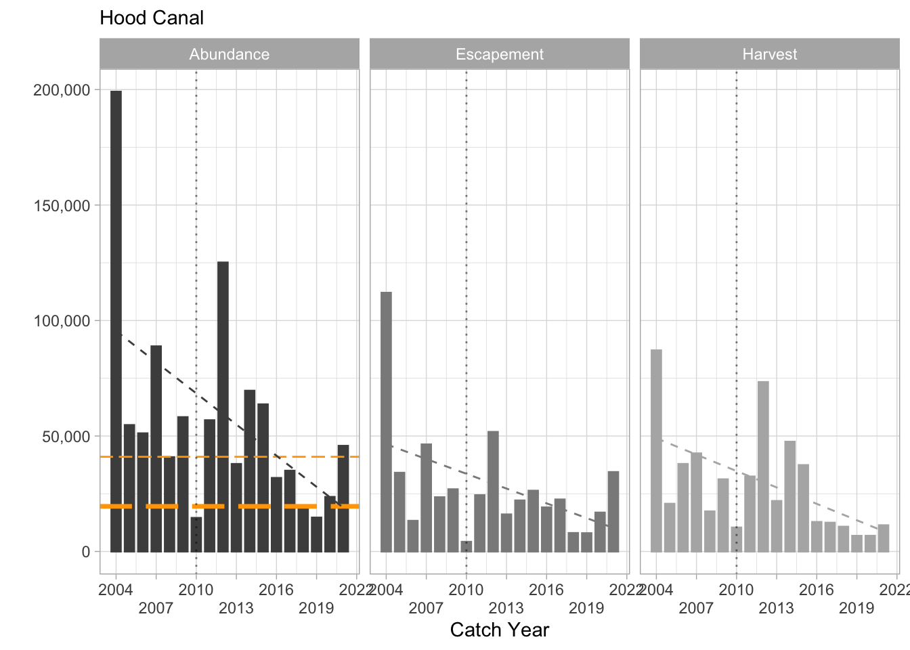
Average exploitation rates by fishing area for the Hood Canal MU. The stacked bars represent the rates estimated by gear type during the FRAM base period, catch years 1986-1992. The line represents the estimated total exploitation rate by fishing area during catch years 2005-2010, all gears combined.
Total exploitation rates have generally declined, averaging 72% between 1986 and 1996 then gradually falling to an extended period of low exploitation rates (27%) during 1997-2004 (Table 5.1; Figure 4.2). Exploitation rates have increased since 2004, averaging 59% during 2005-2009. Up until 1996, the exploitation rate by Canadian fishers averaged 40%, but has since declined to an average of less than 1.5%.
Historical summary of annual total abundance (January age-3 without natural mortality), adult escapement, marine survival (Big Beef Creek), and exploitation rates (ER) of the Hood Canal Management Unit; since 1986.
A comparison of exploitation rates by major fisheries during the base period and the most recent five years (2006-2010) is provided in Figure 5.1. Individual commercial fishery management areas within Washington State are depicted in Figure 5.2 and 5.3.
Historical Overview of Status of Management Unit
4.3.8 US Strait of Juan de Fuca (JDF)
4.3.8.1 Biological & Geographic Description
The US Strait JDF MU is one of the U.S. Inside MUs and includes Coho Salmon inhabiting the numerous streams and rivers along the southern side of Strait of Juan de Fuca. This MU spans two evolutionarily significant units (ESUs). Populations inhabiting the western Straits (from Salt Creek westwards) are part of the Olympic Peninsula ESU, while those inhabiting the Elwha River eastwards belong to the Puget Sound/Strait of Georgia ESU (Weitkamp et al. 1995). The former was deemed “not warranted” for listing under the U.S. Endangered Species Act, while the latter is a “species of concern” (NOAA Fisheries 2009).
The Strait of Juan de Fuca MU covers an area of approximately 1,500 mi2 and includes some 48 independent watersheds that support Coho ranging in size of basin from less than 10 mi2 to more than 300 mi2. Its boundaries are Cape Flattery to the west and Point Wilson to the east along the northern end of the Olympic Peninsula.
The Strait of Juan de Fuca MU consists of numerous small to large tributaries draining the Olympic Mountain range and surrounding foothills. The western portion of the Strait of Juan de Fuca MU (WSJF) encompasses waters emptying to the Strait of Juan de Fuca west of the Elwha River, to the tip of Cape Flattery. The WSJF contains 27 salmonid-bearing watersheds that drain directly into the Strait of Juan de Fuca. The largest subbasin within the watershed is the Hoko River, followed by the Lyre, Pysht, Sekiu, and Clallam rivers (Smith 1999). The eastern portion of the Strait of Juan de Fuca MU includes all streams and rivers from the Elwha River east to Chimacum Creek.
The climate varies widely throughout the MU, with higher annual precipitation to the west and at higher elevations. Annual rainfall decreases dramatically from the western to the eastern portion of the MU, due to the rain-shadow effect of the Olympic Mountains on the eastern portion of the MU. The eastern portion of the MU receives as little as 15 inches [38 cm] of rain a year, increasing to over 85 inches [216 cm] in the western portion of the MU.
The estuarine habitat in the MU is somewhat transitional between the more sheltered inland estuaries of inner Puget Sound and the open Pacific Ocean, with decreasing shallow, sheltered marine habitat encountered moving westward from inner Puget Sound.
Coho Salmon in the Strait of Juan de Fuca MU are significantly influenced by degradation of freshwater habitats (McHenry 1996). Habitat conditions in the Dungeness River are so severely degraded that only limited natural production occurs. The lower 11 miles of the Dungeness River has been extensively channelized and systematically cleared of large woody debris. Surface water withdrawals on the Dungeness River currently average about 60% of the river’s natural stream flow. Construction of hydroelectric dams without passage facilities on the Elwha River at RM 4.9 and RM 12.0 effectively eliminated 35.9 miles of mainstem and 42.9 mi of tributary habitat from production. A major improvement in anadromous salmonid habitat is happening in the MU with the recent removal of the two Elwha River dams. Their removal has opened this currently inaccessible habitat, much of which is located within Olympic National Park and in extremely good condition.
Much of the freshwater habitat in the MU is managed for commercial timber production, though the upper reaches of the longer tributaries in the region around the Elwha River originate in Olympic National Park. The main population centers of Sequim and Port Angeles are located in the eastern part of the MU. Urbanization, agricultural activities, and water withdraws have degraded the productivity of streams in this part of the MU, with the exception of the upper reaches of the longer tributaries that originate in Olympic National Park.
4.3.8.2 Management Framework
Management Objectives
Under the Comprehensive Coho Management Plan, eastern and western Strait of Juan de Fuca wild Coho are primary (key) management units, while aggregate production from the Dungeness and Elwha rivers are auxiliary management units (CCW 1998). Under this plan, primary management units are controlling units in the sense that predefined management actions will be undertaken under specified abundance conditions, auxiliary management units are those managed to meet or exceed a minimum escapement, and secondary units are passively managed in mixed stock fisheries.
The western portion of the Strait of Juan de Fuca (west of the Sekiu River) is managed with Washington coastal populations, while the eastern portion is managed with Puget Sound populations (PFMC 2011). The Washington coastal group includes Coho Salmon inhabiting streams north of the Columbia River through the western Strait of Juan de Fuca; major populations include Willapa Bay (hatchery), Grays Harbor, Quinault (hatchery), Queets, Hoh, and Quillayute Coho. The Puget Sound group includes primary management units of Hood Canal, Skagit, Snohomish, Stillaguamish, South Puget Sound (hatchery), and the eastern portion of the Strait of Juan de Fuca (PFMC 2011).
Management goals for Washington coastal Coho stocks (including western Strait of Juan de Fuca) include achieving natural spawning escapement objectives and treaty Indian allocation requirements (PFMC 2011). The Council’s conservation objectives for stocks managed for natural production were based on maximum sustainable yield (MSY) spawner escapements established pursuant to the U.S. District Court order in Hoh versus Baldrige (No. 81-742 [R] C). The conservation objectives for the Queets, Hoh, and Quillayute rivers were developed as ranges intended to bracket estimates of MSY escapement. The range reflects the degree of uncertainty inherent by using the high estimate of recruits-per-spawner and the low estimate of carrying capacity for the lower bound, and the low estimate of recruits-per-spawner and the high estimate of smolt carrying capacity for the upper end of the range. The ranges were further adjusted upward by 26-184% for risk aversion and habitat considerations. However, annual natural spawning escapement targets may vary from the Fishery Management Plan (FMP) conservation objectives if agreed to by WDFW and the treaty Indian tribes under the provisions of Hoh versus Baldrige and subsequent U.S. District Court orders. After an annual agreement is reached, ocean fishery escapement objectives are established for each river, or region of origin. The agreement includes provisions for treaty Indian allocation requirements and inside non-Indian fishery needs.
For the eastern portion of the Strait of Juan de Fuca MU, the Council’s conservation objectives are based on the Puget Sound Salmon Management Plan, which define management objectives and long-term goals for these stocks as developed by representatives from Federal, state, and tribal agencies (PFMC 2011). Conservation objectives for specific stocks are based on either maximum sustainable production for stocks managed primarily for natural production or on hatchery escapement needs for stocks managed for artificial production. The original conservation objectives were developed by a State/Tribal Management Plan Development Team following the Boldt Decision with the goal for natural spawning stocks defined as “the adult spawning population that will, on the average, maximize biomass of juvenile outmigrants subsequent to incubation and freshwater rearing under average environmental conditions”. The method used to develop the objectives was based on assessment of the quantity and quality of rearing habitat and the number of adult spawners required to fully seed the habitat. Some objectives have subsequently been modified by the U.S. District Court Fisheries Advisory Board and later determinations of the WDFW/Tribal Technical Committee. However, annual natural management objectives may vary from the FMP conservation objectives if agreed to by WDFW and the treaty Indian tribes under the provisions of U.S. versus Washington (384 F. Supp. 312 [W.D. Wash. 1974]) and subsequent U.S. District Court orders.
In 2009, the Pacific Fishery Management Council adopted annual management objectives for Puget Sound Coho as recommended by WDFW and tribal co-managers under provisions of U.S. versus Washington. The annual objectives were based on the PSC categorical status and associated maximum exploitation rate limits. The Council formally adopted exploitation rate management objectives for Puget Sound Coho in November 2009, which were consistent with PSC objectives, and in 2010 it replaced the longstanding FMP spawning escapement objectives. The current PST/Council exploitation rate reference points for the Strait of Juan de Fuca MU natural Coho population are provided below.
Current US Strait JDF MU ocean abundance reference breakpoints and maximum total exploitation rates by PSC and Council status categories.
|———————————————————| | Status(PSC/Council) | Ocean Abundance
Breakpoint |Total Exploitation Rate | |————————–|:————————————–|:———————–:| | Low/Critical | <= 11,679 | Up to 20% | | Moderate/Low | 11,680 – 27,445 | 21% – 40% | | Abundant/Normal | > 27,445 | 41% – 60% | |———————————————————|
Stock Assessment
Indicator Stocks
Forecast Methods
Escapement Monitoring
Fishery Monitoring
Enhancement
–> need to update with new hatchery facilities! A few salmon hatchery facilities exist within the Strait of Juan de Fuca MU (Figure 1 3). Below is a list of those programs that rear and release Coho Salmon. • The Lower Elwha Fish Hatchery is located on RM 1.25 on the Elwha River. It was completed in 2011 and replaced the Elwha Hatchery which was located near the mouth of the Elwha River (RM 0.25) on the Elwha Reservation (Elwha Klallam Tribe 2003; LEKT 2012). The current Coho program is operated as an “integrated harvest” program with an annual production goal of 425,000 smolts to be released on station. The goals of the current program are to preserve and rebuild natural Coho Salmon production in the Elwha River by supplementing the abundance of juvenile and returning adult fish. Long term goals include recolonization of suitable Coho spawning and rearing habitat and enhanced in-river terminal harvest opportunities.
• The Dungeness Hatchery is located on the Dungeness River at RM 10.5 from the estuary, and is operated by WDFW (WDFW 2003a). The current Coho program is operated as a “segregated” program with an annual production goal of 500,000 smolts to be released on station, 2,000 fry planted into Cooper Creek, and up to 1,900 eyed eggs transferred to local school projects. The goal of this program is provide fish for sport and commercial harvest. • Hurd Creek Hatchery is operated by WDFW and is located on Hurd Creek (WRIA 18.0028), a tributary to the Dungeness River (WRIA 18.0018) at RM 3 (WDFW 2003b). The facility began operating in 1980 and its primary purpose is to aid in wild stock restoration. The Coho program has been operated as an “integrated recovery” program with the goal of contributing to the restoration of a healthy, natural, self-sustaining population of Coho Salmon that will maintain the genetic characteristic of the native stock. This program began with the 1998 brood and was to last 9 years (3 complete broods). Program specifications include that Coho are to be collected from Snow Creek and spawned, with the goal of releasing 18,000 unfed fry each into Snow and Andrews creeks and 9,000 fingerling and 9,000 yearlings into Crocker Lake.
4.3.8.3 Management Performance
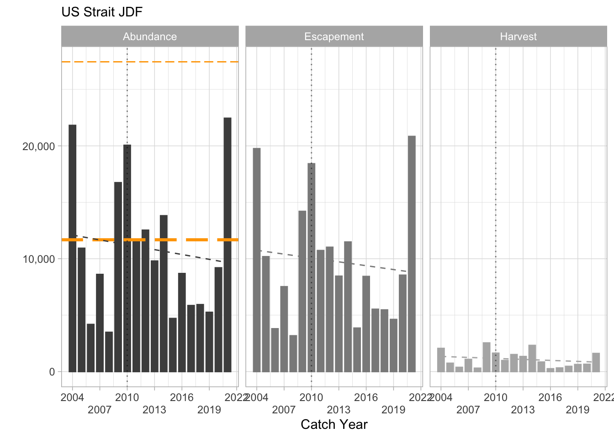
Forecast Evaluation
Fishery Mortality and Escapement
Historical Overview of Status of Management Unit
4.3.9 Quillayute
Note that Quillayute and Queets values are those from the FRAM database and have not yet been extracted from the relevant TAMM cells for each year
4.3.9.1 Biological & Geographic Description
The Quillayute MU consists of naturally-produced fall run Coho Salmon in the Quillayute River basin and its tributaries (Dickey, Sol Duc, Sitkum, Calawah, and Bogachiel rivers) (Figure 1.3). The Quillayute River has two unique populations of Coho, a summer run and a fall run (Haymes 2008). The summer Coho run has a peak river entry from the last week of August to the first week of September. The fall Coho run has a run timing typical of other coastal Coho populations, with peak river entry in mid-October. There is a hatchery and natural-origin production component to each population. The Quillayute River MU consists of the natural-origin fall run. Quillayute Coho belong to the Olympic Peninsula evolutionarily significant unit (ESU) (Weitkamp et al. 1995). This ESU was deemed “not warranted” for listing under the U.S. Endangered Species Act (Ford 2011).
The Quillayute MU consists of five primary tributaries and numerous smaller tributaries that join to form the Quillayute River (Haymes 2008; Hunter 2006). The Quillayute River has a short mainstem of 5.5 river miles (RM). At RM 5 the Bogachiel and Sol Duc river systems combine to form the Quillayute. The upper reaches of the Sol Duc, Calawah, and Bogachiel rivers originate inside the Olympic National Park, draining the northwest and western slopes of the Olympic Mountains. These tributaries flow westward to converge and enter the Pacific Ocean at the town of La Push. The Dickey River drains the coastal hills to the north of the Quillayute River, flowing southward to join the lower mainstem Quillayute one mile from the Pacific Ocean near the town of La Push.
The Quillayute system drains over 825 mi2 (Hunter 2006). The basin is primarily rain-fed, with the exception of some snowmelt input into the upper Sol Duc, Bogachiel, and Calawah sub-basins during the winter and spring. Rainfall is high, exceeding 100 inches [254 cm] in the lower valley, and 150+ inches [381+ cm] in upper reaches of the basin.
The estuary, like other north coastal rivers is minimal in size, essentially consisting of a one mile stretch of river channel that is subject to tidal exchange, draining directly into the open Pacific Ocean.
The Olympic National Park owns the largest percentage of the coastal lands and the very highest reaches of the Olympic Mountains (Hunter 2006). This includes the headwaters of the upper Sol Duc, Calawah, Sitkum and Bogachiel Rivers. Land use outside of the park is largely dominated by timber production. The U.S. Forest Service (USFS) manages the lands downstream of the Park (middle altitudes). Private timber and state lands are downstream from the USFS holdings. The basin is relatively lightly populated. The City of Forks is the only incorporated city and a few small towns exist, the towns of Beaver, Sappho, and La Push.
4.3.9.2 Management Framework
Management Objectives
The Quillayute MU is managed together with other Washington coastal populations, which include all natural and hatchery stocks originating in Washington coastal streams north of the Columbia River to the western Strait of Juan de Fuca(west of the Sekiu River) (PFMC 2013a). Management goals for Washington coastal Coho stocks include achieving natural spawning escapement objectives and treaty Indian allocation requirements (PFMC 2013a).
The Pacific Fishery Management Council’s (Council) conservation objectives for stocks managed for natural production were based on maximum sustainable yield (MSY) spawner escapements established pursuant to the U.S. District Court order in Hoh versus Baldrige (No. 81-742 [R] C). When the Council adopted Amendment 16 to the Salmon FMP in 2011 (76 FR 81852, December 29, 2011), it brought the Salmon Fishery Management Plan (FMP) into compliance with the Magnuson-Stevens Fishery Conservation and Management Act (MSA) as amended in 2007, and the corresponding revised National Standard 1 Guidelines’ (NS1Gs) mandate to end and prevent overfishing. In doing so, the Council (PFMC) adopted new status determination criteria (SDC) for overfishing, approaching an overfished condition, overfished, not overfished/rebuilding, and rebuilt under FMP Amendment 16. The PFMC also adopted corresponding maximum fishing mortality thresholds, which are based on the maximum sustainable yield exploitation rate. Status determinations for overfishing, overfished, not overfished/rebuilding, and rebuilt were reported in the annual SAFE document, Review of 2012 Ocean Salmon Fisheries (PFMC 2013b). Amendment 16 also added to the FMP “de minimis” fishing provisions that allow for low levels of fishing impacts on specified stocks that are at low levels of abundance.
The conservation objectives for the Queets, Hoh, and Quillayute rivers were developed as ranges intended to bracket estimates of MSY escapement. The range reflects inherent uncertainty by using the high estimate of recruits-per-spawner and the low estimate of carrying capacity for the lower bound, and the low estimate of recruits-per-spawner and the high estimate of smolt carrying capacity for the upper end of the range. The ranges were further adjusted upward by 26-184% for risk aversion and habitat considerations. However, annual natural spawning escapement targets may vary from the FMP conservation objectives if agreed to by WDFW and the treaty Indian tribes under the provisions of Hoh versus Baldrige and subsequent U.S. District Court orders. After an annual agreement is reached, ocean fishery escapement objectives are established for each river, or region of origin. The agreement includes provisions for treaty Indian allocation requirements and inside non-Indian fishery needs. Agreements on annual spawning targets for Washington coastal Coho other than those in the FMP are not made every year (PFMC 2013b).
For U.S. “outside” MUs, PST total exploitation rate ceiling for the natural fall Coho population is defined as the maximum rate that will meet the minimum escapement goal of 6,300, when applied to the preseason ocean abundance forecast (Haymes 2008). For the 2009 return, for example, Quillayute fall Coho Salmon ocean abundance of age-3 fish was forecast as 19,261 fish or in the “abundant” category. Therefore, ocean abundance (19,261) minus the minimum escapement goal (6,300) is 12,961 fish available to harvest, or 67.3% of the preseason forecast (12,961÷19,261 = 0.673). The current PST/Council exploitation rate ceilings for the Quillayute MU Coho population are provided below.
There is no PST management objective for the summer Coho run. The Quillayute MU is currently managed in U.S. fisheries for a natural fall Coho escapement goal range of 6,300 to 15,800 adult spawners, and annual egg-take objectives for summer and fall Coho at Sol Duc Hatchery.
Current Quillayute MU ocean abundance reference breakpoints and maximum total exploitation rates by PSC and Council status categories.
|———————————————————| | Status(PSC/Council) | Ocean Abundance
Reference Breakpoint |Total Exploitation Rate | |————————–|:————————————–|:———————–:| | Low/Critical | < 7,875 | Up to 20% | | Moderate/Low | 7,875 – 10,500 | 21% – 40% | | Abundant/Normal | > 10,500 | > 40% (footnote) | |———————————————————| footnote - Limit of 59% (maximum fishery mortality threshold) under Amendment 16 (see Appendix E of The Ad Hoc Salmon Amendment Committee 2011).
Stock Assessment
Indicator Stocks
Forecast Methods
Escapement Monitoring
Fishery Monitoring
Enhancement
A few salmon hatchery facilities exist within the basin; however, only one currently produces Coho Salmon, WDFW’s Sol Duc Hatchery on the Sol Duc River at RM 29. This facility began operating in 1970, collects adult broodstock on-site, and has egg incubation and rearing facilities. Both summer and fall stock Coho are produced at this facility and both programs are integrated harvest programs (2012 future brood document available at: http://wdfw.wa.gov/publications/01356/wdfw01356.pdf). The goals of the programs are to release 250,000 fall run smolts and 100,000 summer run smolts annually.
4.3.9.3 Management Performance
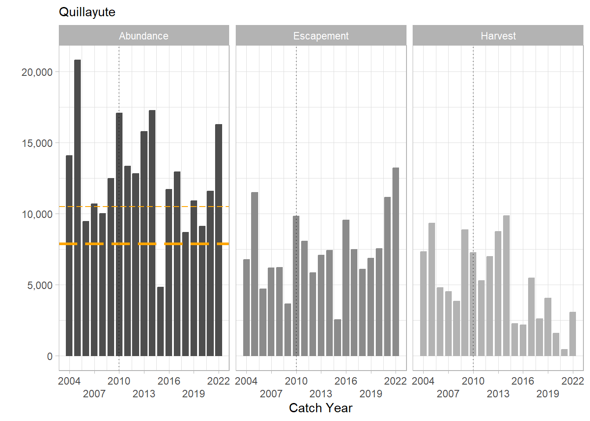
Forecast Evaluation
Fishery Mortality and Escapement
Historical Overview of Status of Management Unit
4.3.10 Hoh
4.3.10.1 Biological & Geographic Description
The Hoh MU consists of the Hoh River basin and consists of a single population of Coho Salmon occupying the Riverbasin. This MU belongs to the Olympic Peninsula evolutionarily significant unit (ESU) (Weitkamp et al. 1995). It was deemed “not warranted” for listing under the U.S. Endangered Species Act (NOAA 2009).
The freshwater habitat of the MU includes the mainstem Hoh river and numerous tributaries, with a total basin area of 299 mi2 (774 km2) (Haymes 2008). The Hoh River originates in the center of the Olympic Mountains and flows westward, entering the Pacific Ocean at the Hoh Indian Reservation. The main Hoh River channel is glacially fed, originating from glacier fields on Mt. Olympus. The tributaries are largely rainwater fed. Annual rainfall is high, exceeding 100 inches [254 cm] in the lower valley, and 150+ inches [381+ cm] in upper reaches of the basin.
The estuary, like other north Olympic Peninsula coastal rivers is quite small, and essentially consists of a short stretch of river channel that is subject to tidal exchange, and enters the Pacific Ocean directly.
The upper basin is located within Olympic National Park. Land use outside of Olympic National Park is largely dominated by timber production. The MU is lightly populated, with the Hoh Indian Reservation community located at the mouth of the Hoh River, and scattered farms and residential development located in the lower and mid valley.
4.3.10.2 Management Framework
Management Objectives
The Hoh MU is managed with together with other Washington coastal populations, which include all natural and hatchery stocks originating in Washington coastal streams north of the Columbia River to the western Strait of Juan de Fuca (PFMC 2011). Management goals for Washington coastal Coho stocks include achieving natural spawning escapement objectives and treaty Indian allocation requirements (PFMC 2011).
Management goals for Washington coastal Coho stocks include achieving natural spawning escapement objectives and treaty Indian allocation requirements (PFMC 2011). The Pacific Fishery Management Council’s (“Council”) conservation objectives for stocks managed for natural production were based on maximum sustainable yield (MSY) spawner escapements established pursuant to the U.S. District Court order in Hoh versus Baldrige. The conservation objectives for the Queets, Hoh, and Quillayute Rivers were developed as ranges intended to bracket estimates of MSY escapement. The range reflects inherent uncertainty by using the high estimate of recruits-per-spawner and the low estimate of carrying capacity for the lower bound, and the low estimate of recruits-per-spawner and the high estimate of smolt carrying capacity for the upper end of the range. The ranges were further adjusted upward by 26-184% for risk aversion and habitat considerations. However, annual natural spawning escapement targets may vary from the Fishery Management Plan (FMP) conservation objectives if agreed to by WDFW and the treaty Indian tribes under the provisions of Hoh versus Baldrige and subsequent U.S. District Court orders. After an annual agreement is reached, ocean fishery escapement objectives are established for each river, or region of origin. The agreement includes provisions for treaty Indian allocation requirements and inside non-Indian fishery needs. Agreements on annual spawning targets for Washington coastal Coho other than those in the FMP are not made every year (PFMC 2011).
The current PST total exploitation rate ceiling for the natural Coho population is defined as the maximum rate that will meet the minimum escapement goal of 2,000 when applied to the pre-season ocean abundance forecast (Haymes 2008). The basin is currently managed in US fisheries for a natural fall Coho escapement goal range of 2,000 to 5,000. The current PST exploitation rate ceilings for the Hoh MU Coho population are listed below.
Current Hoh MU ocean abundance reference breakpoints and maximum total exploitation rates by PSC and Council status categories.
|———————————————————| | Status(PSC/Council) | Ocean Abundance
Reference Breakpoint |Total Exploitation Rate | |————————–|:————————————–|:———————–:| | Low/Critical | < 2,500 | Up to 20% | | Moderate/Low | 2,500 – 3,333 | 21% – 35% | | Abundant/Normal | > 3,333 | 36% – 60% | |———————————————————|
Stock Assessment
Indicator Stocks
Forecast Methods
Escapement Monitoring
Fishery Monitoring
Enhancement
There is currently no hatchery Coho production present in the MU. The Chalaat Creek Hatchery is run by the Hoh Indian Tribe and formerly produced Coho Salmon. There have been periodic releases of hatchery Coho Salmon from other coastal basins. #### Management Performance
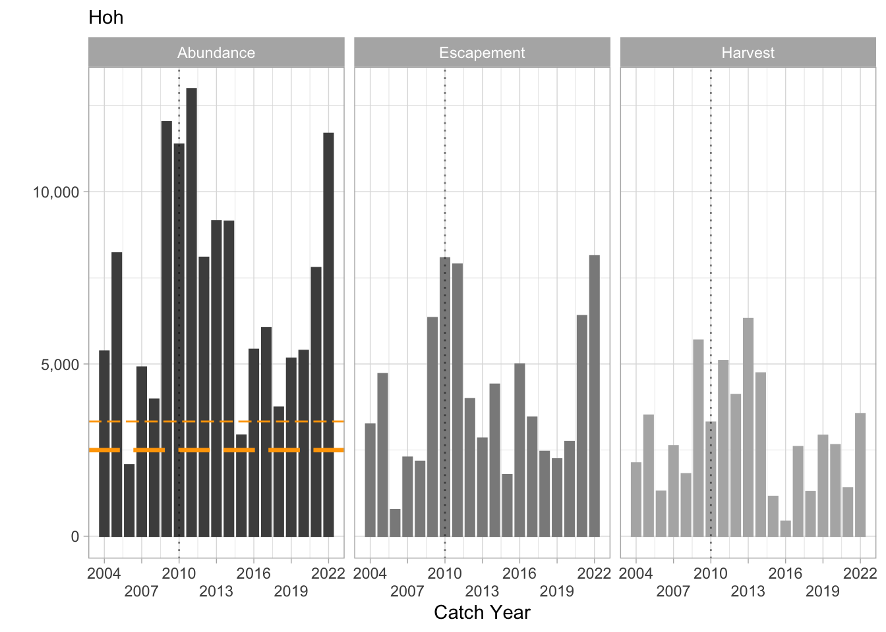
Forecast Evaluation
Fishery Mortality and Escapement
Historical Overview of Status of Management Unit
4.3.11 Queets
Note that Quillayute and Queets values are those from the FRAM database and have not yet been extracted from the relevant TAMM cells for each year
4.3.11.1 Biological & Geographic Description
The Queets MU consists of a single population of Coho Salmon occupying the Queets River and its major tributary, the Clearwater River. This MU belongs to the Olympic Peninsula evolutionarily significant unit (ESU) (Weitkamp et al. 1995). It was deemed “not warranted” for listing under the U.S. Endangered Species Act (NOAA 2009).
The freshwater habitat of the MU consists of a large glacially influenced main river channel (Queets River), a moderate sized rain-fed tributary (Clearwater River), and numerous smaller rain-fed tributaries (Haymes 2008). The Queets River originates in the center of the Olympic Mountains, and flows westward, entering the Pacific Ocean at the northern end of the Quinault Indian Reservation. The Clearwater River originates in the Olympic Mountain foothills to the north of the Queets River and flows southward to the Queets at RM 6.7 from the estuary. Rainfall is high in the MU, ranging from 100 to 200 inches [254 to 508 cm] a year.
The estuary, like other north Olympic Peninsula coastal rivers is quite small, consisting of a short stretch of river channel that is subject to tidal exchange and enters the Pacific Ocean directly.
Much of the land base in the MU is managed for commercial timber production, though a thin (1-5 mile wide) strip of Olympic National Park land encompasses the floodplain in the middle reach of the river (Haymes 2008). The upper reach of the river is contained entirely inside of the Olympic National Park, and originates from glacier fields on Mount Olympus. Human development is very limited in this MU. One small community (Queets) is located adjacent to the river, at the Highway 101 bridge crossing. The river downstream of the Clearwater Road bridge crossing at RM 6.5 [KM 10.5] is within the boundary of the Quinault Reservation.
4.3.11.2 Management Framework
Management Objectives
The Queets MU is managed together with other Washington coastal populations, which include all natural and hatchery stocks originating in Washington coastal streams north of the Columbia River to the western Strait of Juan de Fuca (PFMC 2011). Management goals for Washington coastal Coho stocks include achieving natural spawning escapement objectives and treaty Indian allocation requirements (PFMC 2011).
Management goals for Washington coastal Coho stocks include achieving natural spawning escapement objectives and treaty Indian allocation requirements (PFMC 2011). The Pacific Fishery Management Council’s (“Council”) conservation objectives for stocks managed for natural production were based on maximum sustainable yield (MSY) spawner escapements established pursuant to the U.S. District Court order in Hoh versus Baldrige. The conservation objectives for the Queets, Hoh, and Quillayute rivers were developed as ranges intended to bracket estimates of MSY escapement. The range reflects inherent uncertainty by using the high estimate of recruits-per-spawner and the low estimate of carrying capacity for the lower bound, and the low estimate of recruits-per-spawner and the high estimate of smolt carrying capacity for the upper end of the range. The ranges were further adjusted upward by 26-184 percent for risk aversion and habitat considerations. However, annual natural spawning escapement targets may vary from the Fishery Management Plan (FMP) conservation objectives if agreed to by WDFW and the treaty Indian tribes under the provisions of Hoh versus Baldrige and subsequent U.S. District Court orders. After an annual agreement is reached, ocean fishery escapement objectives are established for each river, or region of origin. The agreement includes provisions for treaty Indian allocation requirements and inside non-Indian fishery needs. Agreements on annual spawning targets for Washington coastal Coho other than those in the FMP are not made every year (PFMC 2011).
The current PST total exploitation rate ceiling for the natural Coho population is defined as the maximum rate that will meet the minimum escapement goal of 5,800 when applied to the pre-season ocean abundance forecast (Haymes 2008). The basin is currently managed in US fisheries for a natural fall Coho escapement goal range of 5,800 to 14,500, and annual egg take objectives at the Salmon River Hatchery. The current PST exploitation rate ceilings for the Queets MU Coho population are listed below.
Current Queets MU ocean abundance reference breakpoints and maximum total exploitation rates by PSC and Council status categories.
|———————————————————| | Status(PSC/Council) | Ocean Abundance
Reference Breakpoint |Total Exploitation Rate | |————————–|:————————————–|:———————–:| | Low/Critical | < 7,250 | Up to 20% | | Moderate/Low | 7,250 – 9,667 | 21% – 35% | | Abundant/Normal | > 9,667 | 36% – 60% | |———————————————————|
Stock Assessment
Indicator Stocks
Forecast Methods
Escapement Monitoring
Fishery Monitoring
Enhancement
The Salmon River Hatchery, located on a tributary to the Queets River and operated by the Quinault Tribe is the primary Coho adult broodstock collection, incubation, and rearing program in the MU (Haymes 2008). Coho juveniles were also periodically reared, coded wire tagged, and released at several other locations in the basin as part of a long-term natural production enhancement program operated by the Quinault tribe, using juveniles produced from wild origin adult Coho collected with wild broodstock capture programs. #### Management Performance
Forecast Evaluation
Fishery Mortality and Escapement
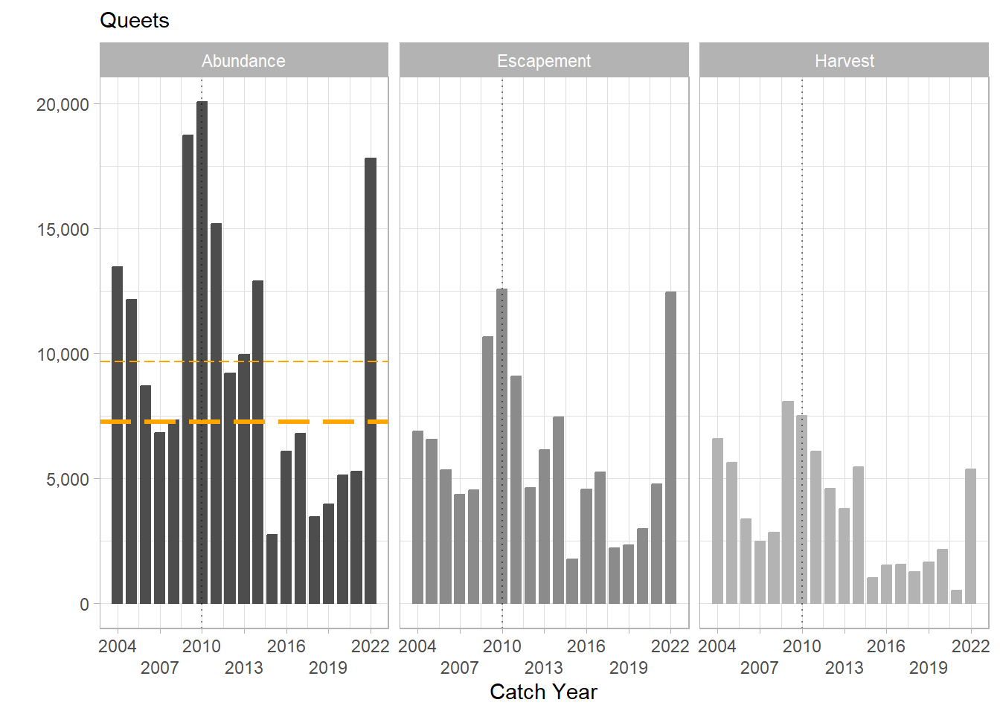
Historical Overview of Status of Management Unit
4.3.12 Grays Harbor
4.3.12.1 Biological & Geographic Description
This MU consists of all tributaries to Grays Harbor, including the Chehalis and Humptulips river basins. Coho Salmon inhabiting these basins are treated as a single population under the PST.
The Grays Harbor MU belongs to the Southwest Washington Coast (SWWC) evolutionarily significant unit (ESU), which was formerly part of the Lower Columbia River/Southwest Washington Coast ESU (Weitkamp et al. 1995). Since the ESU was split in two and the Lower Columbia ESU listed, the SWWC ESU is currently of “undetermined” status for listing under the U.S. Endangered Species Act (NOAA 2009).
The freshwater habitat of the MU consists of two major river basins (Chehalis and Humptulips), and several smaller independent tributaries (Haymes 2008). The freshwater tributaries in the region are primarily rain-fed. The Chehalis River is the largest drainage in the MU, with a basin area of 2,114 mi2 [5,475 km2]. The Chehalis basin drains the southern end of the Olympic mountain range and the Chehalis Prairie region near Centralia, entering the eastern side of the Grays Harbor estuary at the city of Aberdeen. The other significant river basin in the MU is the Humptulips River, with a basin area of 250 mi2 [647 km2]. The Humptulips River drains the southwestern end of the Olympic Mountain range and enters the northern side of Grays Harbor. The upper basin tributaries of these two rivers receive snowmelt input from the main Olympic mountain range in the winter and spring. The lower elevation tributaries in the region are largely rain-fed, with corresponding large changes in average discharge between the winter and summer periods. Several small tributaries enter the southern end of Grays Harbor. Total area for the entire Grays Harbor MU freshwater habitat is 2,550 mi2 [6,604 km2].
The Grays Harbor MU is unique among Washington Coast MUs for having an extremely large estuary. Because of this, Coho Salmon moving from freshwater to marine habitats are able to gradually transition between completely fresh and completely salt waters over a geographically long gradient, rather than the abrupt transition in other coastal MUs (e.g., Quillayute, Hoh, Queets).
Much of the land base in the MU is managed for commercial timber production, though the upper reaches of some the longer tributaries in the region originate in Olympic National Park (Haymes 2008). Agricultural activities are a prevalent land use in the lower and mid-Chehalis River basin. Two major regional urban areas, Aberdeen and Hoquiam are located at the mouth of the Chehalis River. Numerous other small to medium-sized communities are located in the Chehalis River basin. The Humptulips River basin has much more limited human development, with scattered residential and agricultural development in the lower valley.
Grays Harbor provides extensive estuarine habitat. However, water quality problems resulting from human activities have periodically impacted salmonid survival rates in Chehalis River estuary (Seiler 1989). Shellfish farming and harvesting activities are present in the estuary.
4.3.12.2 Management Framework
Management Objectives
The Grays Harbor MU is managed with together with other Washington coastal populations, which include all natural and hatchery stocks originating in Washington coastal streams north of the Columbia River to the western Strait of Juan de Fuca (PFMC 2011). Management goals for Washington coastal Coho stocks include achieving natural spawning escapement objectives and treaty Indian allocation requirements (PFMC 2011).
Management goals for Washington coastal Coho stocks include achieving natural spawning escapement objectives and treaty Indian allocation requirements (PFMC 2011). The Pacific Fishery Management Council’s (“Council”) conservation objectives for stocks managed for natural production were based on maximum sustainable yield (MSY) spawner escapements established pursuant to the U.S. District Court order in Hoh versus Baldrige. The conservation objectives for the Queets, Hoh, and Quillayute Rivers were developed as ranges intended to bracket estimates of MSY escapement. The range reflects inherent uncertainty by using the high estimate of recruits-per-spawner and the low estimate of carrying capacity for the lower bound, and the low estimate of recruits-per-spawner and the high estimate of smolt carrying capacity for the upper end of the range. The ranges were further adjusted upward by 26-184% for risk aversion and habitat considerations. However, annual natural spawning escapement targets may vary from the Fishery Management Plan (FMP) conservation objectives if agreed to by WDFW and the treaty Indian tribes under the provisions of Hoh versus Baldrige and subsequent U.S. District Court orders. After an annual agreement is reached, ocean fishery escapement objectives are established for each river, or region of origin. The agreement includes provisions for treaty Indian allocation requirements and inside non-Indian fishery needs. Agreements on annual spawning targets for Washington coastal Coho other than those in the FMP are not made every year (PFMC 2011).
The current PST total exploitation rate ceiling for the Grays Harbor natural Coho population is defined as the maximum rate that will meet a 35,400 escapement goal when applied to the pre-season ocean abundance forecast (Haymes 2008). The basin is currently managed in US fisheries for an escapement goal of 35,400. The current PST exploitation rate ceilings for the Grays Harbor MU Coho population are listed below.
Current Grays Harbor MU ocean abundance reference breakpoints and maximum total exploitation rates by PSC and Council status categories.
|———————————————————| | Status(PSC/Council) | Ocean Abundance
Reference Breakpoint |Total Exploitation Rate | |————————–|:————————————–|:———————–:| | Low/Critical | < 44,250 | Up to 20% | | Moderate/Low | 44,250 – 58,000 | 21% – 35% | | Abundant/Normal | > 58,000 | 36% – 60% | |———————————————————|
Stock Assessment
Indicator Stocks
Forecast Methods
Escapement Monitoring
Fishery Monitoring
Enhancement
There are three major hatchery Coho production programs located in the MU with adult collection and juvenile rearing facilities, all of which are operated by WDFW (Haymes 2008). Humptulips Hatchery is located at the mouth of Stevens Creek on the Humptulips River at RM 22.5 from the estuary. Bingham Creek Hatchery is located at the mouth of Bingham Creek on the Satsop River at RM 17.5 (the Satsop River enters the Chehalis River at RM 20.2 from the estuary). Van Winkle (Aberdeen) Hatchery is located on Van Winkle Cr., a tributary to the lower Chehalis River. Coho are also reared and released at the WDFW Skookumchuck and Eight Creek Hatcheries, which are located on tributaries to the Chehalis R. These programs typically use juvenile Coho production obtained from the Bingham Creek facility.
There are up to several net pen rearing projects operating in the Chehalis River and Grays Harbor estuaries each year, maintained by local public sport fishery enhancement groups. These programs typically use juvenile production obtained from the WDFW Bingham Creek facility. Additionally, Mayr Brothers Ponds, a privately operated facility located on the Wishkah River, has adult collection and juvenile acclimation facilities that are periodically used for the collection and production of Coho (Haymes 2008).
4.3.12.3 Management Performance
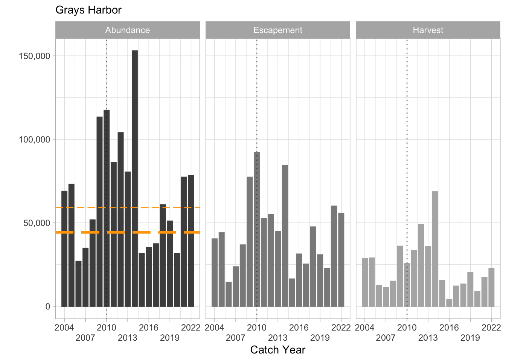
Forecast Evaluation
Fishery Mortality and Escapement
Historical Overview of Status of Management Unit
5 Members
| Canadian Members | United States Members |
|---|---|
| Dr. John Holmes (Co-Chair), CDFO | Dr. Gary S. Morishima (Co-Chair), QIN |
| Mr. Michael Arbeider, CDFO | Dr. Daniel Auerbach, WDFW |
| Mr. Roger Dunlop, MMFN | Ms. Carrie Cook-Tabor, USFWS |
| Mr. Kristopher Hein, CDFO | Ms. Angelika Hagen-Breaux, WDFW |
| Mr. Michael O’Brien, CDFO | Dr. Diego Holmgren, TUL |
| Mr. Kevin Pellet, CDFO | Ms. Cassandra R. Leeman, ODFW |
| Ms. Ashlee Prevost, LFFA | Dr. Marisa Litz, WDFW |
| Mr. Joel Sawada, CDFO | Dr. Laurie Weitkamp, NMFS |
| Ms. Madeline Thomson, CDFO |
6 Acronyms
| Acronym | Definition | URL |
|---|---|---|
| ABM | Abundance-Based Management | |
| B.C. | British Columbia | |
| BkFRAM | Backwards FRAM | |
| BY | Brood Year | |
| CDFO | Canadian Department of Fisheries and Oceans | https://www.dfo-mpo.gc.ca/index-eng.htm |
| CoTC | Coho Joint Technical Committee | https://www.psc.org/about-us/structure/committees/technical/coho/ |
| CU | Conservation Unit | https://open.canada.ca/data/en/dataset/1ac00a39-4770-443d-8a6b-9656c06df6a3 |
| CWT | Coded-Wire Tag | https://www.nmt.us/cwt/ |
| DIT | Double-Index Tag | |
| EDT | Electronic Tag Detection | |
| ENSO | El Niño-Southern Oscillation | https://www.climate.gov/enso |
| ER | Exploitation Rate | |
| ESA | U.S. Endangered Species Act | https://www.fws.gov/international/laws-treaties-agreements/us-conservation-laws/endangered-species-act.html |
| ESU | Evolutionarily Significant Unit | https://www.nwfsc.noaa.gov/assets/4/6878_09172014_172219_Waples.1995.pdf |
| FMP | Fisheries Management Plan | |
| FRAFS | Fraser River Aboriginal Fisheries Secretariat | https://www.frafs.ca/ |
| FRAM | Fishery Regulation and Assessment Model | https://framverse.github.io/fram_doc/ |
| HC | Hood Canal | |
| IFMP | Integrated Fisheries Management Plan | https://www.pac.dfo-mpo.gc.ca/fm-gp/ifmp-eng.html#Salmon |
| LFFA | Lower Fraser Fishery Alliance | https://www.lffa.ca/ |
| MFMT | Maximum Fishing Mortality Threshold | |
| MMFN | Mowachaht-Muchalaht First Nation | https://www.yuquot.ca/ |
| MSF | Mark-Selective Fishery | |
| MSH | Maximum Sustainable Harvest | |
| MSM | Mixed-Stock Model | |
| MU | Management Unit | |
| NMFS | National Marine Fisheries Service | https://www.fisheries.noaa.gov/ |
| NOF | North of Falcon | https://wdfw.wa.gov/fishing/management/north-falcon |
| NSF | Non-Selective Fishery | |
| NTC | Nuu-chah-nulth Tribal Council | https://nuuchahnulth.org/ |
| NWIFC | Northwest Indian Fisheries Commission | https://nwifc.org/ |
| ODFW | Oregon Department of Fish and Wildlife | https://www.dfw.state.or.us/ |
| OFL | Overfishing Limit | |
| OR | Oregon | |
| PDO | Pacific Decadal Oscillation | https://www.ncei.noaa.gov/access/monitoring/pdo/ |
| PEF | Production Expansion Factor | |
| PFMC | Pacific Fisheries Management Council U.S. | https://www.pcouncil.org/ |
| PS | Puget Sound | |
| PSC | Pacific Salmon Commission | https://www.psc.org/ |
| PST | Pacific Salmon Treaty | https://www.psc.org/publications/pacific-salmon-treaty/ |
| QIN | Quinault Indian Nation | http://www.quinaultindiannation.com/ |
| RMIS | Regional Mark Information System | https://www.rmpc.org/ |
| RMPC | Regional Mark Processing Center | https://www.rmpc.org/ |
| RRTERM | Terminal Area Run Reconstruction Program | |
| SCMP | Southern Coho Management Plan | https://www.psc.org/publications/pacific-salmon-treaty/ |
| SIT | Single Index Tag | |
| SJDF | Strait of Juan de Fuca | |
| SUQ | Suquamish Tribe | https://suquamish.nsn.us/ |
| TUL | Tulalip Tribes | https://www.tulaliptribes-nsn.gov/ |
| UFFCA | Upper Fraser Fisheries Conservation Alliance | https://www.upperfraser.ca/ |
| U.S. | United States | |
| USFWS | U.S. Fish and Wildlife Service | https://www.fws.gov/ |
| WA | Washington | |
| WDFW | Washington Department of Fish and Wildlife | https://wdfw.wa.gov/ |
| WCVI | West Coast of Vancouver Island |
7 Glossary
| Term | Definition |
|---|---|
| Abundance-Based Management (ABM) | A management framework that constrains exploitation rates, based on a categorical abundance forecast (abundant, moderate, low) for naturally-spawning Coho Management Units. The purpose is to provide more protection when the status of the fish is low and the conservation need greatest, and more harvest opportunity when abundance is high. Exploitation rate caps are specified in the Pacific Salmon Treaty Southern Coho Agreement. |
| Base Period (FRAM) | The FRAM base period is a time period to represent average temporal and geographic distributions of Coho Salmon coastwide. The base period was developed by summarizing coded-wire-tag information from a continuous time period that contains a sufficient number of CWT releases and fishery recoveries. The current Coho base period is comprised of CWT recoveries from catch years 1986–1992. The Mixed-stock Model (MSM) and cohort reconstuction methods were used to estimate base period exploitation rates and other parameters, such as base period cohort sizes and fishery compositions, for all FRAM stocks and fisheries by time step. The base period is made up of the averages of these estimates over the catch years 1986 through 1992. Using these base period parameters allows FRAM to predict the stock composition, exploitation rates, and escapements of future fisheries when provided with forecasts of abundance and fishery mortalities. |
| Break point | A Management Unit-specific ocean age-3 abundance level that determines the categorical status of a stock (i.e., abundant, moderate, low). |
| Brood Year (BY) | The year in which the majority of the parents of the fish spawned and the eggs deposited. |
| By-catch | Incidental or unintentional catch of non-target stocks or species. |
| Catch | The number of fish that are caught in a fishery. |
| Coded-Wire Tag (CWT) | A small piece of magnetized stainless steel wire that is injected into the snout of a juvenile salmon (usually hatchery stock). Each tag is 0.25 mm in diamter and typically 1.1 mm long and is etched with a code that identifies its specific release group. Each code is associated with release information, including date and location of release, hatchery, stock, fish size, and number of fish tagged with that same code (referred to as a release group). Tags are typically recovered from returning adults through fishery and escapement sampling. Release and recovery Information is stored in the Regional Mark Information System's (RMIS) Release database under the tag code. |
| Cohort | A particular group of fish belonging to the same brood year. |
| Cohort Abundance | For each stock unit, an annual abundance is obtained from a regional expert, typically in the form of an ocean age-3 run size (pre-fishing age-3 abundance in the ocean after natural mortality has been subtracted). In a pre-season context these abundances come from annual forecasts, whereas in a post-season context the abundances are derived from estimates of actual returns. For Coho, an initial stock abundance is needed for adult fish (age-3) by mark status. |
| Cohort Reconstruction or Cohort Analysis | Cohort reconstruction is a method commonly used in salmon stock assessment for estimation of exploitation rates. The basic principle of cohort reconstruction is the sequential estimation of a cohort’s abundance from the end of the cohort’s life span, when abundance is zero, to a specified earlier age (commonly age-3 for Coho). A full cohort reconstruction can becompleted only once the cohort’s life span has ended. Age-specific escapement and harvest data are required and, in general, the natural mortality rates are assumed. |
| Co-management | The collaborative process between co-managers–tribal governments and state governments on the West Coast. Using scientific information, the co-managers make decisions about the management of fisheries to ensure that the fisheries meet legal requirements, treaty fishing rights, and conservation goals. |
| Command Files | The files used in the Fisheries Regulation Assessment Model that contain all the necessary input parameters to run the model, such as forecasted abundance estimates and fishery regulations. A separate command file is developed for each FRAM run. |
| Conservation Unit (CU) | Salmon populations that have been identified as distinct units of biodiversity under the Canadian Wild Salmon Policy (see Holtby and Ciruna 2007). A Conservation Unit (CU) is a group of wild Pacific salmon sufficiently isolated from other groups that, if extirpated, is very unlikely to recolonize naturally within an acceptable timeframe, such as a human lifetime or a specified number of salmon generations. |
| Double-Index Tag (DIT) | Paired groups of tagged fish, each tagged with separate CWT tag code, used to determine differential exploitation rates on marked and unmarked fish subjected to mark-selective fisheries. Both groups are presumed identical except that one group is externally marked (adipose fin clipped) and one group is unmarked (not adipose fin clipped). |
| Endangered Species Act (U.S.) | The Endangered Species Act (ESA) is the primary law in the United States for protecting critically important species that are at risk of extinction. Under the ESA, the federal government has the responsibility to protect these species and their critical habitats. NOAA Fisheries is responsible for endangered and threatened salmon. |
| Enhancement | Use of hatcheries, spawning channels, lake fertilization or habitat restoration to increase the survival rate or production of salmon at some stage of its life. |
| Electronic Tag Detection (ETD) | The use of a handheld wand or tunnel type detector that can sense the magnetized coded-wire tag within a fish's snout. |
| Escapement (Spawning Escapement) | The number of adult salmon that escape all fisheries and other forms of mortality to return to a hatchery or stream to spawn. |
| Evolutionarily Significant Unit (ESU) | Under the U.S. Endangered Species Act, a group of Pacific salmon populations that represent an important component of the evolutionary legacy of the species and are therefore treated as a single “species”. |
| Exclusive Economic Zone | The Exclusive Economic Zone (EEZ) is an area from 3 to 200 nautical miles offshore of coastal states and is classified as federal waters. In the EEZ, the U.S. has special rights about the exploration and use of marine resources, which includes energy production from water and wind, and fisheries. |
| Exploitation Rate (ER) | Expressed as a percentage, the proportion of the total return of adult salmon in a given year that die as a result of fishing activity. Mortalities include landed catch and incidental mortalities. |
| Exploitation Rate Cap | The maximum exploitation rate an MU can be subjected to given its categorical abundance status. Under the ABM, allowable exploitation rate is shared by Canada and the U.S. |
| Fisheries Management | Fisheries management is a process that relies on science, management approaches, enforcement, partnerships, and public participation. Fisheries management uses scientific information (e.g., number of fish caught, types of fish caught, life cycle knowledge) and input from fishing communities to help guide management decisions and conservation objectives. |
| Fishery | A fishery is an activity leading to the harvesting of fish and can be specified by the species of fish caught, people involved, location, method of fishing, and purpose of the activities. Fish caught in a fishery can be for commercial, recreational, or tribal and ceremonial purposes. |
| Fisheries Management Plan (FMP) | The set of fisheries that are planned in order to distribute exploitation rates amongst fisheries and time periods each year. These are termed Integrated Fisheries Management Plans in Canada. |
| Fishery Regulation Assessment Model (FRAM) | A model used to estimate the MU- and fishery-specific impacts. The Forwards FRAM projects MU-specific mortalities and escapements under proposed fishery regimes given pre-season forecasts. The Backwards Coho FRAM estimates unspecified MU abundances using estimates of escapements and fishing mortalities. It includes 246 stocks, 198 fisheries, and 5 time steps. |
| Fry | Salmon that have emerged from gravel, completed yolk absorption, remained in freshwater streams, and are less than a few months old. |
| FSC (Canada) | First Nations' fishery for food, social, and ceremonial use. |
| Harvest | The term harvest refers to the total number of fish caught and kept from an area or fishery during a period of time. |
| Incidental mortality | Mortality incurred during fishing that is in addition to landed catch. For example, some fish die as a result of being caught and released. |
| Indicator stock | A coded-wire-tagged surrogate stock that is used to make inferences for a particular MU. For example, a CWT release from a hatchery stock may be used to estimate the distribution and magnitude of fishing mortalities. |
| Integrated Fisheries Management Plan (IFMP) | These Canadian plans identify the main objectives and requirements for Pacific fisheries and outline the management to achieve these objectives. IFMPs provide a common understanding of the basic rules for the sustainable management of the fisheries resource, and communicate basic information about fish stocks and our fisheries. |
| Interception | Interception occurs when a salmon from one state or country is caught in another state or country's fisheries. As salmon grow and mature in the Pacific Ocean, they travel along the West Coast and across international borders. Salmon that are born in U.S. streams may migrate through Canadian waters, where they may be caught in Canadian fisheries. Salmon from Oregon streams can be caught in Washington fisheries. |
| January age-3 abundance | The estimated abundance of fish of age-3 (adults) in January prior to the start of any fisheries. January age-3 abundance is estimated as fishing mortality plus escapement plus natural mortality. |
| Landed catch | Fish that are caught and kept (see Incidental mortality) |
| Magnuson-Stevens Fishery Conservation and Management Act (MSA) | The Magnuson-Stevens Fishery Conservation and Management Act (MSA) is the primary law that governs fisheries management in the federal marine waters (3-200 miles offshore) of the United States. The goal of the MSA is to encourage the long-term biological and economic sustainability of marine fisheries. |
| Management Unit (MU) | Under the PST Southern Coho agreement, a geographically-based aggregate of salmon populations, that is managed under a single set of exploitation rate caps. |
| Mark-Selective Fishery (MSF) | A fishery that require marked fish (i.e., those with adipose fin clips) and unmarked fish (those with intact adipose fins) to be differentially retained (e.g., marked fish kept, unmarked fish released). |
| Maximum Sustainable Harvest (MSH) | An estimate of the largest average annual catch or yield that can be continuously taken over a long period from a stock under prevailing ecological and environmental conditions. |
| Mixed-Stock Model | A model used to estimate the cohort abundances in mixed stock fisheries using coded-wire tags and estimates of catch (see Production Expansion Factors). |
| Naturally Produced | Originated from spawning in the natural environment, as opposed to spawned in a hatchery. Often considered “wild”. |
| Non-retention fisheries | Fisheries in which a particular group of fish are not allowed to be kept (e.g., due to species or external marks)(see Retention Fisheries) |
| Non-selective fisheries (NSF) | Fisheries that are allowed to retain both marked (adipose fin clipped) and unmarked fish (see Mark-selective fishery). |
| North of Falcon | Each year state, federal, and tribal fishery managers gather to plan the Northwest's recreational and commercial salmon fisheries. This series of meetings – involving representatives from federal, state and tribal governments and recreational and commercial fishing industries – is known as the North of Falcon process. The North of Falcon planning process coincides with the March and April meetings of the Pacific Fishery Management Council (PMFC), the federal authority responsible for setting ocean salmon seasons 3 to 200 miles off the Pacific coast. In addition to the two PFMC meetings, the states of Washington and Oregon and the Treaty Tribes sponsor additional meetings to discuss alternative fishing seasons that meet conservation and allocation objectives. Fishery managers generally refer to the entire set of pre-season meetings as North of Falcon. The name refers to Cape Falcon in northern Oregon, which marks the southern border of active management for Washington salmon stocks. |
| Ocean Age-3 Abundance | Total number of fish that are harvested (including incidental mortality) plus those that escape to spawn (also referred to as “cohort abundance” or “ocean recruits”). Natural mortality is not included. This abundance status of a Management Unit is based upon this estimate of abundance. |
| Pacific Salmon Commission (PSC) | A joint Canada/U.S. commission established under the Pacific Salmon Treaty to oversee the implementation of the Pacific Salmon Treaty. |
| Pacific Salmon Treaty (PST) | A treaty between Canada and the United States concerning the conservation, management, restoration, and enhancement of pacific salmon resources. |
| Pacific States Marine Fisheries Commission (PSMFC) | Pacific States Marine Fisheries Commission (PSMFC) is a non‐regulatory agency that serves Alaska, California, Idaho, Oregon, and Washington. PSMFC (headquartered in Portland) administers salmon disaster relief funds, provides a communication exchange between the Pacific Fishery Management Council and the North Pacific Fishery Management Council, and provides information in the form of data services for various fisheries. |
| Production Expansion Factor (PEF) | A scalar that represents the number of fish in a population represented by a single CWT recovery. |
| Rebuilding | The process of rebuilding an overfished stock. For salmon, rebuilding usually takes the form of reduced harvest limits. |
| Reference Point | A Management Unit-specific ocean age-3 abundance level that determines the categorical status of a stock (i.e., abundant, moderate, low). |
| Regional Mark Information System (RMIS) | Database containing data on salmonid releases, recoveries in fisheries and escapement, and estimated catch by fishery and time period. |
| Retention fisheries | Fisheries in which fish of a particular group are allowed to be kept (see Non-retention fisheries). |
| Return year | The year in which fish would normally return to spawn as adults. For Southern Coho Salmon that mature as 3 year old adults, return year is Brood Year + 3. |
| Run | As salmon migrate back to freshwater as adults, they arrive in groups called runs, which are typically associated with a season (spring, summer, fall, winter). A run of salmon may be composed of salmon from a single age or multiple ages, and can be from a single stock or multiple stocks. |
| RR Term | A program that reconstructs terminal Coho runs using freshwater and terminal area marine fisheries and escapement data for Puget Sound stocks. |
| Sibling Forecast | In all species of Pacific salmon but pinks, the individual salmon produced in any one spawning year mature and return to spawn in more than one subsequent year. All of the fish that return from a spawning year (the brood year) are collectively referred to as a cohort or the brood-year return. A sibling forecast uses the first returns from a cohort to predict the number of their siblings that will return in subsequent years. Generally, the first year of return is dominated by males and the last year of returns by females. |
| Single Index Tag (SIT) | A group of coded-wire-tagged (CWT) fish that are not paired with another release group. They can be marked (clipped) or unmarked (unclipped). |
| Smolt | A smolt is a life cycle phase of a salmon or steelhead when the fish is preparing for the transition from freshwater to saltwater. The process is called smoltification. A smolt becomes physiologically capable of balancing salt and water in the estuary and ocean waters. Smolts vary in size and age depending on the species of salmon. |
| Southern Coho Management Plan (SCMP) | An agreement between the U.S. and Canada that specifies how the Parties’ fisheries impact on Coho Salmon that originate in southern British Columbia, Washington and Oregon shall be managed, subject to future approved technical refinements. It is described in Annex IV, Chapter 5 of the current Pacific Salmon Treaty. |
| Spawning Escapement | The number of adult fish that “escape” fisheries and return to freshwater to spawn. |
| Spawning Grounds/Spawn | Spawning grounds are the freshwater areas where salmon and steelhead spawn. |
| Special management zone (SMZ) | Geographic/temporal areas in B.C. that have special management restrictions. |
| Status | |
| Stock | A group of interbreeding organisms that is relatively isolated (i.e. demographically uncoupled) from other such groups and is likely adapted to the local habitat. Fish species are made up of an aggregate of stocks. |
| Stock Assessment | The use of various statistical and mathematical calculations to make quantitative predictions about the reactions of fish populations to alternative management choices. |
| Subsistence Fisheries | In the Pacific Northwest of the U.S., the term "Ceremonial and Subsistence" (C&S) is used to describe non-commercial harvest in Treaty Tribe fisheries for personal, ritual, or community use. In Canada, the term "Food, Social, and Ceremonial" (FSC) is used to describe the non-commercial harvest of fish by the First Nations. |
| Treaty/Treaties | A treaty is a formal, legally binding agreement that establishes obligations between and among two or more countries, states, or sovereign nations. Examples of treaties include the Pacific Salmon Treaty and treaties between the U.S. and American Indian Tribes. |
| Troll Fishery (Trolling) | Fishing with a hook or hooks attached to a line that is towed through the water or from a vessel. Commercial trollers employ hooks and lines that are suspended from large poles extending from the fishing vessel |
| Voluntary Head Recovery Program (VHRP) | A sampling program in B.C. for recreational fisheries that relies upon anglers voluntarily returning heads from marked salmon so CWTs may be recovered. |
| Wild Salmon | Salmon are considered "wild" if they have spent their entire life cycle in the wild and originate from parents that were also produced by natural spawning and continuously lived in the wild. |
8 References
Allen, C. 2007. Dead zones in Hood Canal: will South Sound be next? The Daily Olympian.
Ames, J. 1984. Puget Sound chum salmon escapement estimates using spawner curve methodology. pages 133–148 in P. E. K. Symons and M. Waldichuk, editors. Proceedings of the workshop on stream indexing for salmon escapement estimation. West Vancouver, B.C.
Bates, S. S., K. A. Hubbard, N. Lundholm, M. Montresor, and C. P. Leaw. 2018. Pseudo-nitzschia, Nitzschia, and domoic acid: new research since 2011. Harmful Algae 79:3–43.
Beechie, T., E. Beamer, and L. Wasserman. 1994. Estimating coho salmon rearing habitat and smolt production losses in a large river basin, and implications for habitat restoration. North American Journal of Fisheries Management 14(4):797–811.
Bond, N. A., M. F. Cronin, H. Freeland, and N. Mantua. 2015. Causes and impacts of the 2014 warm anomaly in the NE Pacific. Geophysical Research Letters 42(9):3414–3420.
Canal Joint Technical Committee), H. (Hood. 1994. Hood Canal natural coho MSH escapement estimate and escapement goals. Point No Point Treaty Council, Washington Department of Fish; Wildlife, U.S. Fish; Wildlife Service.
Conrad, B. (n.d.). Re-analysis of 1977 coho tagging data. Northwest Indian Fisheries Commission, Memorandum to B. Hayman and B. McClure, Skagit System Cooperative, dated July 6, 1995, Olympia, Washington.
Conrad, R. H., R. A. Hayman, E. A. Beamer, and P. J. Goddard. 1998a. Coho Salmon escapement to the Skagit River estimated using a mark-recapture method: 1987. Northwest Fishery Resource Bulletin (7).
Conrad, R. H., R. A. Hayman, E. A. Beamer, and P. J. Goddard. 1998b. Coho Salmon escapement to the Skagit River estimated using a mark-recapture method: 1989. Northwest Fishery Resource Bulletin (9).
Conrad, R. H., R. A. Hayman, E. A. Beamer, and P. J. Goddard. 1998c. Coho Salmon escapement to the Skagit River estimated using a mark-recapture method: 1988. Northwest Fishery Resource Bulletin (8).
Conrad, R. H., R. A. Hayman, E. A. Beamer, and and P. J. Goddard. 1997. Coho Salmon escapement to the Skagit River estimated using a mark-recapture method: 1986. Northwest Fishery Resource Bulletin (6).
Council, P. F. M. 2013b. Review of the 2012 ocean salmon fisheries. Pacific Fishery Management Council, Portland, OR.
Council, P. F. M. 2013a. Preseason report I: stock abundance analysis and environmental assessment Part 1 for 2013 ocean salmon fishery regulations. Pacific Fishery Management Council, Portland, OR.
Cousens, N. B. F., G. A. Thomas, C. G. Swann, and M. C. Healey. 1982. A review of salmon escapement estimation techniques. Department of Fisheries; Oceans, Nanaimo, B.C.
Eames, M. J., T. J. Q. II, and M. Hino. 1983. 1977 northern Puget Sound adult coho and chum tagging studies. State of Washington, Department of Fisheries, Technical Report 75, Olympia, Washington.
Fish, U. (U.S., and W. Service). 1999. Quilcene National Fish Hatchery coho program hatchery and genetic management plan. Plan submitted December 1999 to NOAA Fisheries. U.S. Fish; Wildlife Service, Quilcene, WA.
Fish, U. (U.S., and W. Service). 2007. Comprehensive hatchery management plan for the Quilcene National Fish Hatchery. U.S. Fish; Wildlife Service, Quilcene National Fish Hatchery, Quilcene, WA.
Fisheries, N. 2009. Endangered Species Act status of West Coast salmon and steelhead. NOAA National Marine Fisheries Service.
Ford, M. J. (editor). 2011. Status review update for Pacific salmon and steelhead listed under the Endangered Species Act: Pacific Northwest. United States Department of Commerce, National Oceanic; Atmospheric Administration, Northwest Fisheries Science Center, NOAA technical memorandum NMFS-NWFSC-113.
Hayman, R. A., and E. A. Beamer. 1987. 1986 Skagit coho spawning assessment study. Coho study Progress Report No. 4. Skagit System Cooperative, LaConner, WA.
Haymes, J. 2008. Review of natural escapements, exploitation rates, and natural production and exploitation rate monitoring methodologies for Washington Pacific Salmon Treaty coho management units. Washington Department of Fish; Wildlife, Memo to tribal comanagers, dated Dec. 8, 2008, Olympia, Washington.
Irvine, J. R., J. F. T. Morris, and L. M. Cobb. 1993. Area-under-the-curve salmon escapement estimation manual. Department of Fisheries; Oceans, Biological Sciences Branch, Canadian Fisheries and Aquatic Sciences Technical Report 1932.
Jacox, M. G., M. A. Alexander, N. J. Mantua, J. D. Scott, G. Hervieux, R. S. Webb, and F. E. Werner. 2018. Forcing of multi-year extreme ocean temperatures that impacted California Current living marine resources in 2016. pages s27–s33 in N. C. Herring S. C. and P. A. Stott, editors. Explaining extreme events of 2016 from a climate perspective. Bulletin of the American Meteorological Society.
Mantua, N. J., S. R. Hare, Y. Zhang, J. M. Wallace, and R. C. Francis. 1997. A Pacific interdecadal climate oscillation with impacts on salmon production. Bulletin of the American Meteorological Society 78(6):1069–1080.
Morgan, C. A., B. R. Beckman, L. A. Weitkamp, and K. L. Fresh. 2019. Recent ecosystem disturbance in the Northern California Current. Fisheries 44(10):465–474.
Neilson, J., and E. Taylor. 2018. Steelhead Trout (Oncorhynchus mykiss), Thompson River and Chilcotin River populations in Canada, 2018: COSEWIC. Technical summaries and supporting information for emergency assessments.
Raymond, W. W., J. S. Barber, M. N. Dethier, H. A. Hayford, C. D. G. Harley, T. L. King, B. Paul, C. A. Speck, E. D. Tobin, A. E. T. Raymond, and P. S. McDonald. 2022. Assessment of the impacts of an unprecedented heatwave on intertidal shellfish of the Salish Sea. Ecology 103(10).
Volkhardt, G., P. Hanratty, D. Rawding, P. Topping, M. Ackley, C. Kinsel, K. Kiyohara, and L. Kishimoto. 2007. 2007 wild coho forecasts for Puget Sound & Washington coastal systems. Washington Department of Fish; Wildlife, Science Division.
Weitkamp, L. A., T. C. Wainwright, G. J. Bryant, G. B. Milner, D. J. Teel, R. G. Kope, and R. S. Waples. 1995. Status review of coho salmon from Washington, Oregon, and California. U.S. Department of Commerce, National Marine Fisheries Service, NOAA Technical Memo NMFS NWFFSC 24.
White, R. H., S. Anderson, J. F. Booth, G. Braich, C. Draeger, C. Fei, C. D. G. Harley, S. B. Henderson, M. Jakob, C. Lau, and others. 2023. The unprecedented Pacific Northwest heatwave of June 2021. Nature Communications 14(1):727.
Workgroup, C. C. 1998. Comprehensive coho management plan, second Interim Report dated May 5, 1998. Puget Sound Treaty Tribes & Washington Department of Fish; Wildlife.
Zillges. 1977. Methodology for determining Puget Sound coho escapement estimates, pre-season run size prediction, and in-season run assessment. State of Washington, Department of Fisheries, Technical Report 28, Olympia, Washington.
Zimmerman, M. 2011. 2011 wild coho forecasts for Puget Sound, Washington Coast, and lower Columbia. Washington Department of Fish; Wildlife, Science Division, Fish Program.
Zimmerman, M. 2012. 2012 wild coho forecasts for Puget Sound, Washington Coast, and lower Columbia. Washington Department of Fish; Wildlife, Science Division, Fish Program.
Zimmerman, M. 2013. 2013 wild coho forecasts for Puget Sound, Washington Coast, and lower Columbia. Washington Department of Fish; Wildlife, Science Division, Fish Program.
9 Ref_older
internal inline links direct here, individual refs themselves will have external links as ‘(pdf)[urls_of_raw.pdf]’ for reader to click
10 Appendix: Annual CoTC reports of Estimates of Exploitation Rates
General archive of public CoTC reports
The following provides annual report info without making the individual files themselves publicly available where they would lack the context of the Periodic Report.
Footnotes
Beginning BY 1996, all tagged releases were unmarked.↩︎
Beginning BY 1996, all tagged releases were unmarked.↩︎
Beginning BY 1996, all tagged releases were unmarked.↩︎
BYs 1997 and 1998, all tagged releases were unmarked; fry released BYs 84-90 and 93.↩︎
BYs 1999, 2001-02, and 2005, all tagged releases were unmarked; fry released BY 1995.↩︎
BYs 1997 and 1998 were released as fry.↩︎
When space is limited at Spius Creek Hatchery, additional fish are raised at Chilliwack River Hatchery and released in the Coldwater River.↩︎
Fry released BYs 1983-1990.↩︎
All fry releases.↩︎
All fry releases.↩︎
Beginning BY 1998, all tagged releases were unmarked; fry released BY 1987, 1989-90.↩︎
BY 1997 released unmarked; fry released BY 1984-86, 1988.↩︎
Beginning BY 1997, all tagged releases were unmarked; fry released BY 1983-86, 1988.↩︎
Beginning BY 1997, all tagged releases were unmarked; fry released BY 1988-89.↩︎
Begging BY 2000, all tagged releases were unmarked.↩︎
All tagged releases were unmarked.↩︎
Fry released BY 1989.↩︎
Fry released BYs 2009-10.↩︎
Beginning with BY 1997 (except 2004) tagged releases were unmarked.↩︎
Beginning BY 1996, all tagged releases were unmarked.↩︎
Bernie Gobin Hatchery tagging program and the Skykomish tagging program at the Wallace River Hatchery are used to represent production in both the Stillaguamish and Snohomish River Basins.↩︎
BY 1997-98 were released unmarked; this stock was used to represent Stillaguamish in the FRAM base period.↩︎
BY 1996 and 1998-2020, all tagged releases were unmarked.↩︎
Fry released BY 1986.↩︎
Release groups were very small.↩︎
In all years, release groups are very small. Beginning BY 2003, all tagged releases were unmarked.↩︎
Beginning BY 1996, all tagged releases were unmarked.↩︎
Beginning BY 1995, all tagged releases were unmarked.↩︎
Beginning BY 1995, all tagged releases were unmarked.↩︎